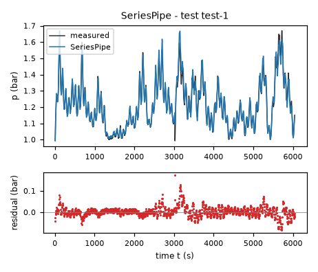
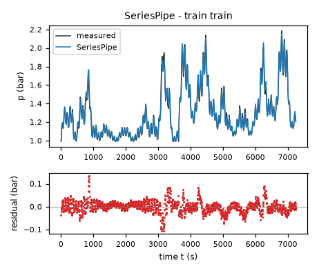
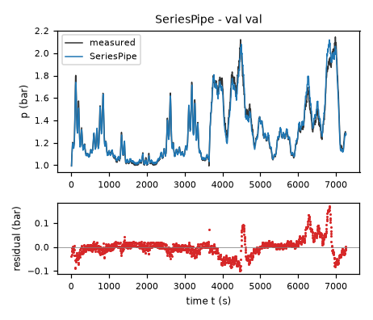
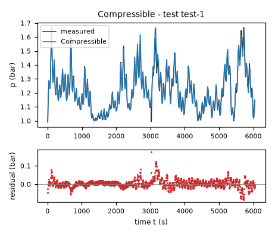
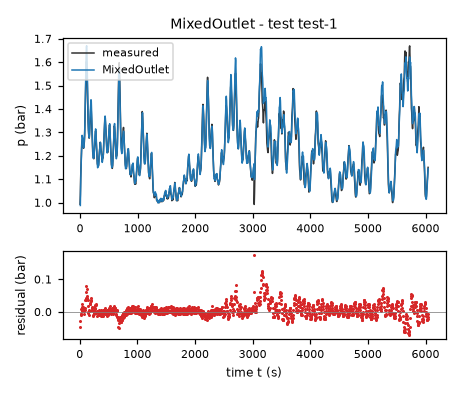
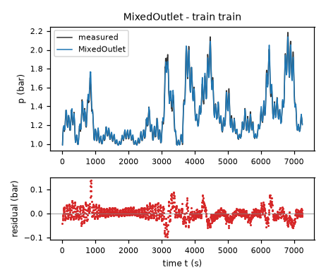
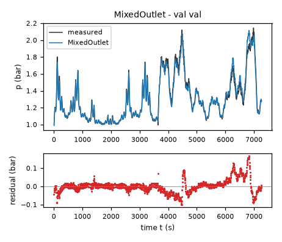
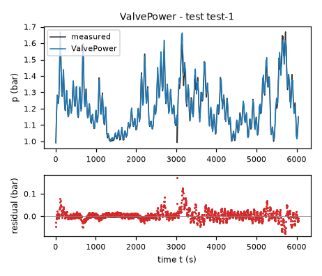
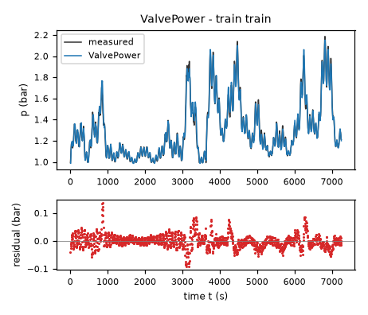
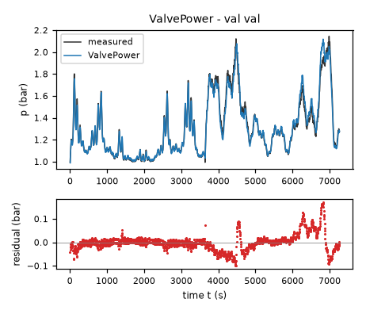

Headspace air pressure of an aerated fermentation tank – run 1 of 5
Generated: 2026-10-08 14:03 UTC
Finished by the agent after 39 turns, 1002 s of execution time and 2.58 USD. 4 models delivered, 4 evaluated.
1 Models
| Model | Fitted parameters | Training error of p (bar) | Validation error (bar) | Test error of p (bar) | |
|---|---|---|---|---|---|
| SeriesPipe | 5 | 0.02612 | 0.03749 | 0.02391 | recommended by the agent |
| Compressible | 6 | 0.02503 | 0.03706 | 0.02327 | |
| MixedOutlet | 6 | 0.02558 | 0.03705 | 0.02359 | |
| ValvePower | 11 | 0.0248 | 0.03711 | 0.02301 | lowest test error |
The models are listed in the agent's order. Errors: root mean squared error between simulated and measured p, in bar. Training data: 1 trajectory of 1452 samples (1451 scored samples). Test data, which the agent cannot access: 1 trajectory of 1210 samples (1209 scored samples). A simulation error grows with the length of the trajectory, and the training and the test trajectories differ in length, so the two errors are not directly comparable. The agent recommends a model from the training data. The model with the lowest test error is found with the test data, in hindsight, among the 4 models of this run; the agent could not make this choice.
a = 0.001272 bar/(s*(l/min)) (fitted), patm = 0.9918 bar (fitted), c = 0.05572 bar**0.5/s (fitted), beta = 1.071 (fitted), ell = 2.564 s (fitted), vmax = 100 % (fixed), vscale = 30 % (fixed), epsdrop = 1e-08 bar (fixed)p: 0.02612 bar · validation error: 0.03749 bar · test error: 0.02391 barEquations as written in the model file
dp = a*flow - 2*(c*(Min(Max(vmax-valve,0),vmax)/vscale)**beta)*(p-patm)/(ell*(c*(Min(Max(vmax-valve,0),vmax)/vscale)**beta)+sqrt((ell*(c*(Min(Max(vmax-valve,0),vmax)/vscale)**beta))**2+4*Abs(p-patm)+epsdrop))
Equations with the values substituted
Every parameter is replaced by its value with 4 significant digits.
Parameters and estimation
| Name | Value | Unit | Type | Description |
|---|---|---|---|---|
a | 0.00127245 | bar/(s*(l/min)) | fitted | Positive inlet conversion gain a: estimated jointly with all other fitted parameters in the pressure-simulation fit; represents gas storage and standard-volume conversion together, not independently measured tank volume. |
patm | 0.991823 | bar | fitted | Effective atmospheric equilibrium patm, estimated jointly in the pressure-simulation fit with bounds bar. These bounds admit a small pressure-calibration/ambient offset around the task's approximate atmospheric level while excluding the markedly lower equilibrium demanded by the rejected linear-outflow fit. This is not a barometer measurement. |
c | 0.0557171 | bar**0.5/s | fitted | Reference inertial outlet coefficient c, jointly estimated. |
beta | 1.07097 | - | fitted | Positive open-fraction power beta, jointly estimated; determines how inertial conductance closes with the valve. |
ell | 2.56373 | s | fitted | Positive linear pressure-drop coefficient ell, jointly estimated. In pressure-rate units it is the fixed-line viscous resistance; its reciprocal bounds the small-drop relaxation rate. |
vmax | 100 | % | fixed | Full-closure endpoint % from the task definition; not fitted. |
vscale | 30 | % | fixed | Open-fraction scale % chosen to normalize inertial conductance at %, within dense training coverage. |
epsdrop | 1e-08 | bar | fixed | Fixed squared-denominator regularization bar prevents the removable zero divided by zero at full closure and atmospheric pressure. It was chosen as a tiny positive scale compared with measured pressure excesses, not estimated; its effect is negligible except at that singular endpoint. |
- Criterion minimized
Unweighted sum of squared free-running pressure errors, in bar squared, over every sample after the initial one. Each trajectory is initialized only at its first logged
p; current-rowvalveandfloware held constant during a classical RK4 step of5s. The final fit has2904pressure residuals, with1451from training and1453from validation. This directly matches the intended long-horizon simulation criterion instead of fitting the filtereddpcolumn. Final training RMSE is 0.0261182481 bar and final validation-data RMSE is 0.0374925911 bar; the pooled supplied-data RMSE is 0.0323137399 bar. Validation data are part of this final estimation objective, not an independent performance test.- Data
All rows of
data/train.csv(one trajectory,1452samples) anddata/val.csv(one separate trajectory,1454samples). The initial samples are used to initialize simulations but not to score residuals. A training-only preliminary fit used onlydata/train.csv; its validation RMSE was 0.0387075653 bar. Validation was first used for structural comparison and residual inspection, then included in the final joint fit to improve input/pressure coverage. The experiments are never concatenated into one state trajectory; no rows are excluded and no future inputs are used.- Method
Bound-constrained nonlinear least squares with the Trust Region Reflective algorithm,
scipy.optimize.least_squares, using two-point finite-difference Jacobians andx_scale = 'jac'. This is used because the closed-form model is nonlinear in the coefficients and the criterion includes recursive state integration; ordinary linear least squares cannot minimize this objective. Numba compiles only the model and RK4 loops; it does not change the integration rule. First all fitted coefficients were estimated together against training-trajectory simulation; all were then re-estimated together against the two independently initialized trajectories in one combined objective. Training-fit starting values: bar/(s*(l/min)), bar, s, bar**0.5/s, . These scales were chosen to represent an approximately nominal gas-storage gain, an outlet coefficient of comparable magnitude, an equilibrium close to atmosphere, and moderate valve/pressure nonlinearities rather than an extreme initial stiffness. Joint-fit starting values: bar/(s*(l/min)), bar, s, bar**0.5/s, . They are the converged training values, to retain a physically plausible training optimum as the initial point. Onlya,patm,ell,c, andbetaare fitted. A separate exponent for the linear resistance was initially tried, but its incremental accuracy was too small to justify another uncertain parameter; this candidate fixes the line resistance independent ofvalve. No derivative prefit determines its coefficients. Bounds: bar/(s*(l/min)), bar, s, bar**0.5/s, . Maximum function evaluations per stage:350. For this candidate the actual maximum is350. Stopping tolerances , , and are the dimensionless solver settings, not data-derived noise levels. No random numbers or stochastic search were used; no seed applies.- Script
fit_candidates.py
The agent's explanation
Lumped gas-storage model with a series combination of fixed viscous line resistance and valve-dependent inertial resistance. This is a mixed linear-quadratic pressure-drop model, solved explicitly for the signed outlet flow. The ideal-gas storage basis is the NASA Glenn Beginner's Guide to Aeronautics, "Equation of State" (page last updated May 13, 2021), read during this round. The isentropic/choked-flow reference is the same guide's "Mass Flow Choking" (page last updated May 13, 2021), also read during this round. Neither source determines the rig's fitted valve characteristic or the empirical smoothing.
The inlet term is . Write for the reference-normalized inertial coefficient. Neglecting only the tiny endpoint regularization, the outlet pressure-rate quantity qout solves . This equation is dimensional in bar because ell has units s and C has units bar**0.5/s. The delivered radical is the explicit solution; it combines the fixed line resistance and closing-valve inertial resistance in series rather than multiplying one universal pressure curve by a valve coefficient. beta gives a monotone valve calibration and the exact zero coefficient at full closure. The two terms represent distinct pressure-drop mechanisms; their coefficients cannot be converted to actual pipe dimensions without independent gas-storage and temperature calibration.
Starting from the same conservation law, pressure residuals of separable square-root models motivated a pressure crossover that varies with valve opening. A fixed linear line loss together with a closing-valve quadratic loss supplies this dependence automatically. It was proposed and fitted after the separable drive screen; a version allowing a valve-dependent linear-resistance exponent and pressure-squared compressible variants were also tried. The extra linear exponent gave a negligible validation advantage, so this more parsimonious five-coefficient series model was retained. The open-fraction power curve was chosen because it is monotone, low-dimensional, positive and exactly sealed at full closure.
ell is an effective resistance in pressure-rate units, not a measured pipe friction coefficient; gas storage, temperature and geometry are confounded. The model uses low-Mach mixed resistance rather than a full choked nozzle law, so high-pressure extrapolation beyond the supplied approximately 2.19 bar maximum is uncertain. Its largest zero-flow local relaxation rate is bounded by 1/s, which is below the RK4 rate limit for a 5 s step. The tiny epsdrop regularization is numerical rather than an independently supported microscopic flow law. Input logging mismatch and additional unmodelled states still leave correlated residuals. Physical requirements: R1 holds because the derivative with respect to inlet flow is the fitted positive a. R2 holds for : conductance is nonnegative and nonincreasing in valve, and the outlet pressure drive is nonnegative. All supplied pressure observations exceed the final fitted patm. A passive bidirectional outlet necessarily reverses the R2 sign below patm, because closing it also suppresses atmospheric air admission; therefore literal R2 is not claimed in that unobserved sub-atmospheric regime. R3 holds exactly at with , for every valve opening, and patm is approximately the task's 1 bar. R4 holds in continuous time on either side of patm, because the outlet term has the sign of and opposes it whenever the outlet is open. R5 holds exactly at or the full-closure endpoint: outlet conductance is zero and for . No measured inlet-flow sample was exactly zero and neither experiment reached full closure, so those endpoints are assumptions rather than empirical verifications.
Physical requirements
| Requirement | Statement | Outcome | Detail |
|---|---|---|---|
| R1 | Monotonicity with respect to inlet flow. At a fixed pressure and valve position, increasing the inlet air flow rate cannot decrease the pressure derivative. | assessed by the human | stated in natural language: the harness does not assess it; the human assesses it, and the agent's assertion alone does not count as verification |
| R2 | Monotonicity with respect to valve closure. At a fixed pressure and inlet flow rate, closing the outlet valve further cannot decrease the pressure derivative. | assessed by the human | stated in natural language: the harness does not assess it; the human assesses it, and the agent's assertion alone does not count as verification |
| R3 | Zero-flow equilibrium. With zero inlet flow and an open outlet valve, atmospheric pressure (approximately 1 bar) is the pressure equilibrium. | assessed by the human | stated in natural language: the harness does not assess it; the human assesses it, and the agent's assertion alone does not count as verification |
| R4 | Pressure relaxation. With zero inlet flow and an open outlet valve, pressure tends toward atmospheric pressure. | assessed by the human | stated in natural language: the harness does not assess it; the human assesses it, and the agent's assertion alone does not count as verification |
| R5 | Fully closed valve. For a perfectly sealed tank with a fully closed outlet valve, the pressure cannot decrease when air is supplied. | assessed by the human | stated in natural language: the harness does not assess it; the human assesses it, and the agent's assertion alone does not count as verification |
Plots of simulated and measured p, and errors per trajectory



| Data | Trajectory | Scored samples | RMSE | NRMSE | R² | Failure |
|---|---|---|---|---|---|---|
| training data | train | 1451 of 1451 | 0.02612 | 0.1002 | 0.99 | none |
| validation data | val | 1453 of 1453 | 0.03749 | 0.1428 | 0.9796 | none |
| test data | test-1 | 1209 of 1209 | 0.02391 | 0.1716 | 0.9706 | none |
RMSE of p in bar; NRMSE = RMSE / σ and R² = 1 − SSE / Σ(y[k] − μ)², with μ and σ the mean and the population standard deviation of the measured output on the scored samples.
a = 0.001268 bar/(s*(l/min)) (fitted), patm = 0.985 bar (fitted), c = 0.05536 1/s (fitted), vmid = 84.09 % (fitted), vwidth = 24.11 % (fitted), vmax = 100 % (fixed), vref = 70 % (fixed), sclosed = 0.3408 (tied), sref = 0.6421 (tied), delta = 0.07762 bar (fitted), gamma = 1.4 (fixed), rcrit = 0.5283 (tied), pfloor = 0.01 bar (fixed)p: 0.02503 bar · validation error: 0.03706 bar · test error: 0.02327 barEquations as written in the model file
dp = a*flow - (c*Max(0,1/(1+exp((Min(Max(valve,0),vmax)-vmid)/vwidth))-sclosed)/(sref-sclosed))*sign(p-patm)*((gamma/(gamma-1))*Max(p,patm)**2*((Max(Max(Min(p,patm),pfloor)/Max(p,patm),rcrit))**(2/gamma)-(Max(Max(Min(p,patm),pfloor)/Max(p,patm),rcrit))**((gamma+1)/gamma)))/sqrt(((gamma/(gamma-1))*Max(p,patm)**2*((Max(Max(Min(p,patm),pfloor)/Max(p,patm),rcrit))**(2/gamma)-(Max(Max(Min(p,patm),pfloor)/Max(p,patm),rcrit))**((gamma+1)/gamma)))+delta*patm)
Equations with the values substituted
Every parameter is replaced by its value with 4 significant digits.
Parameters and estimation
| Name | Value | Unit | Type | Description |
|---|---|---|---|---|
a | 0.00126791 | bar/(s*(l/min)) | fitted | Positive inlet conversion gain a: estimated jointly with all other fitted parameters in the pressure-simulation fit; represents gas storage and standard-volume conversion together, not independently measured tank volume. |
patm | 0.985 | bar | fitted | Effective atmospheric equilibrium patm, estimated jointly in the pressure-simulation fit with bounds bar. These bounds admit a small pressure-calibration/ambient offset around the task's approximate atmospheric level while excluding the markedly lower equilibrium demanded by the rejected linear-outflow fit. This is not a barometer measurement. |
c | 0.0553595 | 1/s | fitted | Outlet coefficient c at the reference closure vref, estimated jointly; the interpretation of its units follows the candidate pressure-drive law. |
vmid | 84.0914 | % | fitted | Sigmoid location vmid, estimated jointly; controls where valve conductance changes most rapidly, without asserting an actual geometric port location. |
vwidth | 24.1136 | % | fitted | Positive sigmoid width vwidth, estimated jointly; controls the smoothness of the calibrated conductance decrease. |
vmax | 100 | % | fixed | Full-closure endpoint % from the task definition; fixed to enforce a sealed outlet at that endpoint. |
vref | 70 | % | fixed | Reference closure % chosen before fitting to lie in the dense training-input region and to normalize c; no physical threshold is asserted. |
sclosed | 0.340799 | - | tied (1/(1+exp((vmax-vmid)/vwidth))) | Endpoint sigmoid ordinate sclosed, tied rather than separately fitted, so full closure has exactly zero nonnegative conductance. |
sref | 0.642073 | - | tied (1/(1+exp((vref-vmid)/vwidth))) | Reference sigmoid ordinate sref, tied to the fitted valve curve so c is its reference coefficient. |
delta | 0.0776211 | bar | fitted | Positive near-equilibrium regularization scale delta, jointly estimated; replaces the singular ideal-orifice atmospheric slope by a finite calibrated viscous-like slope. |
gamma | 1.4 | - | fixed | Fixed calorically perfect dry-air specific-heat ratio approximation ; no gas temperature or composition measurements are available to identify it. The perfect-gas/nozzle framework is documented in the NASA source cited in the discussion. |
rcrit | 0.528282 | - | tied ((2/(gamma+1))**(gamma/(gamma-1))) | Critical downstream/upstream pressure ratio rcrit, tied to gamma using the ideal isentropic choking condition. |
pfloor | 0.01 | bar | fixed | Fixed downstream pressure floor bar prevents undefined fractional powers for a numerically visited nonphysical negative absolute pressure; it is far below every supplied pressure sample and is not a valid vacuum model. |
- Criterion minimized
Unweighted sum of squared free-running pressure errors, in bar squared, over every sample after the initial one. Each trajectory is initialized only at its first logged
p; current-rowvalveandfloware held constant during a classical RK4 step of5s. The final fit has2904pressure residuals, with1451from training and1453from validation. This directly matches the intended long-horizon simulation criterion instead of fitting the filtereddpcolumn. Final training RMSE is 0.0250273261 bar and final validation-data RMSE is 0.037064506 bar; the pooled supplied-data RMSE is 0.0316279892 bar. Validation data are part of this final estimation objective, not an independent performance test.- Data
All rows of
data/train.csv(one trajectory,1452samples) anddata/val.csv(one separate trajectory,1454samples). The initial samples are used to initialize simulations but not to score residuals. A training-only preliminary fit used onlydata/train.csv; its validation RMSE was 0.0381357102 bar. Validation was first used for structural comparison and residual inspection, then included in the final joint fit to improve input/pressure coverage. The experiments are never concatenated into one state trajectory; no rows are excluded and no future inputs are used.- Method
Bound-constrained nonlinear least squares with the Trust Region Reflective algorithm,
scipy.optimize.least_squares, using two-point finite-difference Jacobians andx_scale = 'jac'. This is used because the closed-form model is nonlinear in the coefficients and the criterion includes recursive state integration; ordinary linear least squares cannot minimize this objective. Numba compiles only the model and RK4 loops; it does not change the integration rule. First all fitted coefficients were estimated together against training-trajectory simulation; all were then re-estimated together against the two independently initialized trajectories in one combined objective. Training-fit starting values: bar/(s*(l/min)), 1/s, bar, bar, %, %. These scales were chosen to represent an approximately nominal gas-storage gain, an outlet coefficient of comparable magnitude, an equilibrium close to atmosphere, and moderate valve/pressure nonlinearities rather than an extreme initial stiffness. Joint-fit starting values: bar/(s*(l/min)), 1/s, bar, bar, %, %. They are the converged training values, to retain a physically plausible training optimum as the initial point. The fitted coefficients area,c,patm,delta,vmidandvwidth; ideal-gasgammaand its critical ratio are assumed, not estimated. All six fitted coefficients are estimated together in each simulation stage. No derivative prefit determines the submitted values. Bounds: bar/(s*(l/min)), 1/s, bar, bar, %, and %. Maximum function evaluations per stage:350. For this candidate the actual maximum is350. Stopping tolerances , , and are the dimensionless solver settings, not data-derived noise levels. No random numbers or stochastic search were used; no seed applies.- Script
fit_candidates.py
The agent's explanation
Isothermal lumped ideal-gas storage with a regularized compressible isentropic-orifice outlet law, including sonic choking, and sigmoid valve-area calibration. The storage assumption is isothermal; the local outlet-flow approximation is isentropic. The ideal-gas storage basis is the NASA Glenn Beginner's Guide to Aeronautics, "Equation of State" (page last updated May 13, 2021), read during this round. The isentropic/choked-flow reference is the same guide's "Mass Flow Choking" (page last updated May 13, 2021), also read during this round. Neither source determines the rig's fitted valve characteristic or the empirical smoothing.
represents inlet gas accumulation. Define and in this discussion only. The effective ratio stops decreasing once the ideal sonic critical ratio is reached. The quantity is the squared ideal-orifice pressure drive, in bar squared. Without regularization its square root produces the usual upstream-pressure-scaled subcritical mass-flow law and its choked continuation. The signed regularized drive preserves zero atmospheric discharge and the high-drop gas-flow limit while supplying finite near-equilibrium relaxation. c incorporates area, discharge coefficient, temperature factors and storage conversion; it is not a separately measured geometric area. The nonnegative sigmoid calibration decreases that coefficient to zero at full closure.
The compressible family was proposed in the initial plan because headspace absolute pressure spans roughly atmosphere to more than twice atmosphere, where a constant-density square-root flow approximation may be inadequate. Initial pressure-squared surrogate laws did not improve validation enough; the explicit pressure-ratio/choked law was subsequently tried so compressibility has a defensible gas-flow form rather than an arbitrary extra pressure exponent. Finite atmospheric regularization is retained for the 5 s numerical step and low-drop viscous effects; its exact form is a modelling choice, not derived from ideal nozzle theory. The same monotone sigmoid endpoint calibration was selected based on its performance in the lower-dimensional outlet screen.
Temperature is unmeasured, water-vapor content is unknown and the actual outlet is a valve with piping, not necessarily an ideal nozzle. gamma is assumed; c and delta can absorb departure from ideal isentropic flow. bar is at the lower fitting bound, so it should not be read as a precise atmospheric measurement. A substantial regularization scale means this is not a claim of exact ideal-orifice flow close to equilibrium. The fitted fully-open near-atmospheric relaxation rate is approximately 0.412 1/s on the supplied fitted coefficients, consistent with the 5 s RK4 stability requirement. The negative-pressure floor is a numerical guard; the model is not calibrated for vacuum, supersonic transients, large temperatures or pressures well beyond the supplied range. Physical requirements: R1 holds because the derivative with respect to inlet flow is the fitted positive a. R2 holds for : conductance is nonnegative and nonincreasing in valve, and the outlet pressure drive is nonnegative. All supplied pressure observations exceed the final fitted patm. A passive bidirectional outlet necessarily reverses the R2 sign below patm, because closing it also suppresses atmospheric air admission; therefore literal R2 is not claimed in that unobserved sub-atmospheric regime. R3 holds exactly at with , for every valve opening, and patm is approximately the task's 1 bar. R4 holds in continuous time on either side of patm, because the outlet term has the sign of and opposes it whenever the outlet is open. R5 holds exactly at or the full-closure endpoint: outlet conductance is zero and for . No measured inlet-flow sample was exactly zero and neither experiment reached full closure, so those endpoints are assumptions rather than empirical verifications.
Physical requirements
| Requirement | Statement | Outcome | Detail |
|---|---|---|---|
| R1 | Monotonicity with respect to inlet flow. At a fixed pressure and valve position, increasing the inlet air flow rate cannot decrease the pressure derivative. | assessed by the human | stated in natural language: the harness does not assess it; the human assesses it, and the agent's assertion alone does not count as verification |
| R2 | Monotonicity with respect to valve closure. At a fixed pressure and inlet flow rate, closing the outlet valve further cannot decrease the pressure derivative. | assessed by the human | stated in natural language: the harness does not assess it; the human assesses it, and the agent's assertion alone does not count as verification |
| R3 | Zero-flow equilibrium. With zero inlet flow and an open outlet valve, atmospheric pressure (approximately 1 bar) is the pressure equilibrium. | assessed by the human | stated in natural language: the harness does not assess it; the human assesses it, and the agent's assertion alone does not count as verification |
| R4 | Pressure relaxation. With zero inlet flow and an open outlet valve, pressure tends toward atmospheric pressure. | assessed by the human | stated in natural language: the harness does not assess it; the human assesses it, and the agent's assertion alone does not count as verification |
| R5 | Fully closed valve. For a perfectly sealed tank with a fully closed outlet valve, the pressure cannot decrease when air is supplied. | assessed by the human | stated in natural language: the harness does not assess it; the human assesses it, and the agent's assertion alone does not count as verification |
Plots of simulated and measured p, and errors per trajectory

| Data | Trajectory | Scored samples | RMSE | NRMSE | R² | Failure |
|---|---|---|---|---|---|---|
| training data | train | 1451 of 1451 | 0.02503 | 0.09598 | 0.9908 | none |
| validation data | val | 1453 of 1453 | 0.03706 | 0.1412 | 0.9801 | none |
| test data | test-1 | 1209 of 1209 | 0.02327 | 0.1669 | 0.9721 | none |
RMSE of p in bar; NRMSE = RMSE / σ and R² = 1 − SSE / Σ(y[k] − μ)², with μ and σ the mean and the population standard deviation of the measured output on the scored samples.
a = 0.001227 bar/(s*(l/min)) (fitted), patm = 0.985 bar (fitted), c = 0.05694 bar**0.5/s (fitted), vmid = 81.1 % (fitted), vwidth = 19.39 % (fitted), vmax = 100 % (fixed), vref = 70 % (fixed), sclosed = 0.274 (tied), sref = 0.6394 (tied), kappa = 0.5 1/s (fitted), copen = 0.1108 bar**0.5/s (tied), delta = 0.04911 bar (tied)p: 0.02558 bar · validation error: 0.03705 bar · test error: 0.02359 barEquations as written in the model file
dp = a*flow - (c*Max(0,1/(1+exp((Min(Max(valve,0),vmax)-vmid)/vwidth))-sclosed)/(sref-sclosed))*2*(p-patm)/(sqrt(delta)+sqrt(delta+4*Abs(p-patm)))
Equations with the values substituted
Every parameter is replaced by its value with 4 significant digits.
Parameters and estimation
| Name | Value | Unit | Type | Description |
|---|---|---|---|---|
a | 0.00122655 | bar/(s*(l/min)) | fitted | Positive inlet conversion gain a: estimated jointly with all other fitted parameters in the pressure-simulation fit; represents gas storage and standard-volume conversion together, not independently measured tank volume. |
patm | 0.985 | bar | fitted | Effective atmospheric equilibrium patm, estimated jointly in the pressure-simulation fit with bounds bar. These bounds admit a small pressure-calibration/ambient offset around the task's approximate atmospheric level while excluding the markedly lower equilibrium demanded by the rejected linear-outflow fit. This is not a barometer measurement. |
c | 0.0569437 | bar**0.5/s | fitted | Outlet coefficient c at the reference closure vref, estimated jointly; the interpretation of its units follows the candidate pressure-drive law. |
vmid | 81.105 | % | fitted | Sigmoid location vmid, estimated jointly; controls where valve conductance changes most rapidly, without asserting an actual geometric port location. |
vwidth | 19.3929 | % | fitted | Positive sigmoid width vwidth, estimated jointly; controls the smoothness of the calibrated conductance decrease. |
vmax | 100 | % | fixed | Full-closure endpoint % from the task definition; fixed to enforce a sealed outlet at that endpoint. |
vref | 70 | % | fixed | Reference closure % chosen before fitting to lie in the dense training-input region and to normalize c; no physical threshold is asserted. |
sclosed | 0.274019 | - | tied (1/(1+exp((vmax-vmid)/vwidth))) | Endpoint sigmoid ordinate sclosed, tied rather than separately fitted, so full closure has exactly zero nonnegative conductance. |
sref | 0.63937 | - | tied (1/(1+exp((vref-vmid)/vwidth))) | Reference sigmoid ordinate sref, tied to the fitted valve curve so c is its reference coefficient. |
kappa | 0.5 | 1/s | fitted | Maximum atmospheric pressure-relaxation rate kappa at the fully open valve, estimated jointly with the other fitted coefficients subject to 1/s. The upper bound is chosen for numerical stability, not inferred as a fundamental property. |
copen | 0.110808 | bar**0.5/s | tied (c*(1/(1+exp((0-vmid)/vwidth))-sclosed)/(sref-sclosed)) | Fully open outlet coefficient copen, computed from the fitted sigmoid and reference coefficient, not independently estimated. |
delta | 0.0491138 | bar | tied ((copen/kappa)**2) | Viscous-to-inertial crossover pressure delta, tied to copen and the estimated fastest rate kappa; this reparameterization enforces a stable atmospheric relaxation rate. |
- Criterion minimized
Unweighted sum of squared free-running pressure errors, in bar squared, over every sample after the initial one. Each trajectory is initialized only at its first logged
p; current-rowvalveandfloware held constant during a classical RK4 step of5s. The final fit has2904pressure residuals, with1451from training and1453from validation. This directly matches the intended long-horizon simulation criterion instead of fitting the filtereddpcolumn. Final training RMSE is 0.0255843258 bar and final validation-data RMSE is 0.0370516217 bar; the pooled supplied-data RMSE is 0.0318423858 bar. Validation data are part of this final estimation objective, not an independent performance test.- Data
All rows of
data/train.csv(one trajectory,1452samples) anddata/val.csv(one separate trajectory,1454samples). The initial samples are used to initialize simulations but not to score residuals. A training-only preliminary fit used onlydata/train.csv; its validation RMSE was 0.0383008428 bar. Validation was first used for structural comparison and residual inspection, then included in the final joint fit to improve input/pressure coverage. The experiments are never concatenated into one state trajectory; no rows are excluded and no future inputs are used.- Method
Bound-constrained nonlinear least squares with the Trust Region Reflective algorithm,
scipy.optimize.least_squares, using two-point finite-difference Jacobians andx_scale = 'jac'. This is used because the closed-form model is nonlinear in the coefficients and the criterion includes recursive state integration; ordinary linear least squares cannot minimize this objective. Numba compiles only the model and RK4 loops; it does not change the integration rule. First all fitted coefficients were estimated together against training-trajectory simulation; all were then re-estimated together against the two independently initialized trajectories in one combined objective. Training-fit starting values: bar/(s*(l/min)), bar**0.5/s, bar, %, %, 1/s. These scales were chosen to represent an approximately nominal gas-storage gain, an outlet coefficient of comparable magnitude, an equilibrium close to atmosphere, and moderate valve/pressure nonlinearities rather than an extreme initial stiffness. Joint-fit starting values: bar/(s*(l/min)), bar**0.5/s, bar, %, %, 1/s. They are the converged training values except thatkappais reset to0.481/s to start strictly inside its numerical-stability bound. The fittedkappareplaces direct estimation ofdelta, with the tie ; the fixed upper rate0.51/s makes the worst-case RK4 relaxation product at the task's5s step equal to2.5, below the classical negative-real-axis stability limit of approximately2.785. The optimum reaches that rate bound and the lower atmospheric bound. Bounds: bar/(s*(l/min)), bar**0.5/s, bar, %, %, and 1/s. Maximum function evaluations per stage:350. For this candidate the actual maximum is350. Stopping tolerances , , and are the dimensionless solver settings, not data-derived noise levels. No random numbers or stochastic search were used; no seed applies.- Script
fit_candidates.py
The agent's explanation
Nonlinear ideal-gas storage balance with mixed linear-quadratic outlet resistance (a Darcy-Forchheimer-type constitutive law) and monotone sigmoid valve calibration. Its signed outlet law is obtained by solving a positive linear-plus-quadratic pressure-drop relation for flow; that algebraic derivation, rather than a porous-media assumption, is used here. The ideal-gas storage basis is the NASA Glenn Beginner's Guide to Aeronautics, "Equation of State" (page last updated May 13, 2021), read during this round. The isentropic/choked-flow reference is the same guide's "Mass Flow Choking" (page last updated May 13, 2021), also read during this round. Neither source determines the rig's fitted valve characteristic or the empirical smoothing.
The term is inlet mass accumulation converted to pressure rate. Let denote the outlet coefficient, solely as notation in this discussion; no extra state is simulated. The signed discharge has a linear low-drop limit and an inertial square-root high-drop limit. The logistic curve calibrates positive decreasing conductance, while its endpoint subtraction gives an exactly sealed full-closure outlet. vmid and vwidth describe that calibration, not measured valve geometry. patm is an effective sensor-level atmospheric equilibrium. kappa and its tie define the fastest zero-flow relaxation, making numerical stability explicit.
Mass conservation supplied minus an outlet term; atmospheric relaxation supplied the signed pressure excess. Early linear-pressure drives gave supplied-trajectory RMSE of approximately 0.06 bar and were rejected. Regularized square-root and generalized-power drives improved simulation. Residual pressure-bin biases near atmospheric pressure suggested a finite low-drop conductance, so this mixed viscous/inertial law was tried as a physically defensible interpolation rather than an unconstrained polynomial. The sigmoid conductance was chosen after simple open-fraction power and exponential curves; its saturating open-end calibration marginally improved training-only validation accuracy. The unconstrained mixed fit had a fully-open atmospheric relaxation rate above the stable RK4 range; the kappa reparameterization was added after checking this, at a small fit cost. No symbolic-regression-generated terms are used.
Ambient pressure, pressure-sensor offset, temperature, exact effective gas volume, and standard-flow calibration are not separately identified. The final bar is at its assumed lower bound and 1/s is at its stability bound, so neither should be interpreted as an independently measured physical constant. The fit absorbs some unmodelled dynamics and the apparent one-sample flow logging mismatch. The training-only validation RMSE is reported separately from final in-sample validation-data RMSE. The model cannot represent temperature dynamics, delays, bubble inventory, leaks or valve hysteresis. Clipping outside % is a numerical extension, not a calibrated extrapolation. Physical requirements: R1 holds because the derivative with respect to inlet flow is the fitted positive a. R2 holds for : conductance is nonnegative and nonincreasing in valve, and the outlet pressure drive is nonnegative. All supplied pressure observations exceed the final fitted patm. A passive bidirectional outlet necessarily reverses the R2 sign below patm, because closing it also suppresses atmospheric air admission; therefore literal R2 is not claimed in that unobserved sub-atmospheric regime. R3 holds exactly at with , for every valve opening, and patm is approximately the task's 1 bar. R4 holds in continuous time on either side of patm, because the outlet term has the sign of and opposes it whenever the outlet is open. R5 holds exactly at or the full-closure endpoint: outlet conductance is zero and for . No measured inlet-flow sample was exactly zero and neither experiment reached full closure, so those endpoints are assumptions rather than empirical verifications.
Physical requirements
| Requirement | Statement | Outcome | Detail |
|---|---|---|---|
| R1 | Monotonicity with respect to inlet flow. At a fixed pressure and valve position, increasing the inlet air flow rate cannot decrease the pressure derivative. | assessed by the human | stated in natural language: the harness does not assess it; the human assesses it, and the agent's assertion alone does not count as verification |
| R2 | Monotonicity with respect to valve closure. At a fixed pressure and inlet flow rate, closing the outlet valve further cannot decrease the pressure derivative. | assessed by the human | stated in natural language: the harness does not assess it; the human assesses it, and the agent's assertion alone does not count as verification |
| R3 | Zero-flow equilibrium. With zero inlet flow and an open outlet valve, atmospheric pressure (approximately 1 bar) is the pressure equilibrium. | assessed by the human | stated in natural language: the harness does not assess it; the human assesses it, and the agent's assertion alone does not count as verification |
| R4 | Pressure relaxation. With zero inlet flow and an open outlet valve, pressure tends toward atmospheric pressure. | assessed by the human | stated in natural language: the harness does not assess it; the human assesses it, and the agent's assertion alone does not count as verification |
| R5 | Fully closed valve. For a perfectly sealed tank with a fully closed outlet valve, the pressure cannot decrease when air is supplied. | assessed by the human | stated in natural language: the harness does not assess it; the human assesses it, and the agent's assertion alone does not count as verification |
Plots of simulated and measured p, and errors per trajectory



| Data | Trajectory | Scored samples | RMSE | NRMSE | R² | Failure |
|---|---|---|---|---|---|---|
| training data | train | 1451 of 1451 | 0.02558 | 0.09812 | 0.9904 | none |
| validation data | val | 1453 of 1453 | 0.03705 | 0.1411 | 0.9801 | none |
| test data | test-1 | 1209 of 1209 | 0.02359 | 0.1693 | 0.9713 | none |
RMSE of p in bar; NRMSE = RMSE / σ and R² = 1 − SSE / Σ(y[k] − μ)², with μ and σ the mean and the population standard deviation of the measured output on the scored samples.
a = 0.001241 bar/(s*(l/min)) (fitted), patm = 0.985 bar (fitted), delta = 0.06581 bar (fitted), n = 0.5531 (fitted), pscale = 1 bar (fixed), k1 = 0 % (fixed), k2 = 30 % (fixed), k3 = 50 % (fixed), k4 = 65 % (fixed), k5 = 75 % (fixed), k6 = 85 % (fixed), k7 = 95 % (fixed), k8 = 100 % (fixed), s1 = 0.0003887 1/(s*%) (fitted), s2 = 0.0009365 1/(s*%) (fitted), s3 = 0.001156 1/(s*%) (fitted), s4 = 0.001624 1/(s*%) (fitted), s5 = 0.001785 1/(s*%) (fitted), s6 = 0.001925 1/(s*%) (fitted), s7 = 0.001152 1/(s*%) (fitted)p: 0.0248 bar · validation error: 0.03711 bar · test error: 0.02301 barEquations as written in the model file
dp = a*flow - (s1*Min(Max(k2-valve,0),k2-k1) + s2*Min(Max(k3-valve,0),k3-k2) + s3*Min(Max(k4-valve,0),k4-k3) + s4*Min(Max(k5-valve,0),k5-k4) + s5*Min(Max(k6-valve,0),k6-k5) + s6*Min(Max(k7-valve,0),k7-k6) + s7*Min(Max(k8-valve,0),k8-k7))*(pscale*((p-patm)/pscale)*(((p-patm)/pscale)**2+(delta/pscale)**2)**((n-1)/2))
Equations with the values substituted
Every parameter is replaced by its value with 4 significant digits.
Parameters and estimation
| Name | Value | Unit | Type | Description |
|---|---|---|---|---|
a | 0.00124091 | bar/(s*(l/min)) | fitted | Positive inlet conversion gain a: estimated jointly with all other fitted parameters in the pressure-simulation fit; represents gas storage and standard-volume conversion together, not independently measured tank volume. |
patm | 0.985 | bar | fitted | Effective atmospheric equilibrium patm, estimated jointly in the pressure-simulation fit with bounds bar. These bounds admit a small pressure-calibration/ambient offset around the task's approximate atmospheric level while excluding the markedly lower equilibrium demanded by the rejected linear-outflow fit. This is not a barometer measurement. |
delta | 0.0658127 | bar | fitted | Positive pressure-drive smoothing scale delta, jointly estimated; ensures finite atmospheric relaxation rather than a singular square-root derivative. |
n | 0.553072 | - | fitted | Positive generalized pressure-drop exponent n, jointly estimated; it interpolates between linear and square-root-like discharge but is not asserted to be a literal Reynolds-number exponent. |
pscale | 1 | bar | fixed | Canonical pressure scale bar, fixed solely to make the generalized power dimensionally meaningful; it changes no numerical prediction in the task's bar convention. |
k1 | 0 | % | fixed | Fixed valve-knot %; endpoints follow the task definition, and interior knots were chosen before this fit to cover the broad-open region coarsely and the densely sampled closing region more finely. This is a constitutive calibration grid, not an estimated threshold. |
k2 | 30 | % | fixed | Fixed valve-knot %; endpoints follow the task definition, and interior knots were chosen before this fit to cover the broad-open region coarsely and the densely sampled closing region more finely. This is a constitutive calibration grid, not an estimated threshold. |
k3 | 50 | % | fixed | Fixed valve-knot %; endpoints follow the task definition, and interior knots were chosen before this fit to cover the broad-open region coarsely and the densely sampled closing region more finely. This is a constitutive calibration grid, not an estimated threshold. |
k4 | 65 | % | fixed | Fixed valve-knot %; endpoints follow the task definition, and interior knots were chosen before this fit to cover the broad-open region coarsely and the densely sampled closing region more finely. This is a constitutive calibration grid, not an estimated threshold. |
k5 | 75 | % | fixed | Fixed valve-knot %; endpoints follow the task definition, and interior knots were chosen before this fit to cover the broad-open region coarsely and the densely sampled closing region more finely. This is a constitutive calibration grid, not an estimated threshold. |
k6 | 85 | % | fixed | Fixed valve-knot %; endpoints follow the task definition, and interior knots were chosen before this fit to cover the broad-open region coarsely and the densely sampled closing region more finely. This is a constitutive calibration grid, not an estimated threshold. |
k7 | 95 | % | fixed | Fixed valve-knot %; endpoints follow the task definition, and interior knots were chosen before this fit to cover the broad-open region coarsely and the densely sampled closing region more finely. This is a constitutive calibration grid, not an estimated threshold. |
k8 | 100 | % | fixed | Fixed valve-knot %; endpoints follow the task definition, and interior knots were chosen before this fit to cover the broad-open region coarsely and the densely sampled closing region more finely. This is a constitutive calibration grid, not an estimated threshold. |
s1 | 0.000388655 | 1/(s*%) | fitted | Nonnegative conductance slope magnitude s1 on interval , jointly estimated in the simulation fit; each slope contributes only a monotone calibration increment. |
s2 | 0.000936547 | 1/(s*%) | fitted | Nonnegative conductance slope magnitude s2 on interval , jointly estimated in the simulation fit; each slope contributes only a monotone calibration increment. |
s3 | 0.00115596 | 1/(s*%) | fitted | Nonnegative conductance slope magnitude s3 on interval , jointly estimated in the simulation fit; each slope contributes only a monotone calibration increment. |
s4 | 0.00162353 | 1/(s*%) | fitted | Nonnegative conductance slope magnitude s4 on interval , jointly estimated in the simulation fit; each slope contributes only a monotone calibration increment. |
s5 | 0.00178484 | 1/(s*%) | fitted | Nonnegative conductance slope magnitude s5 on interval , jointly estimated in the simulation fit; each slope contributes only a monotone calibration increment. |
s6 | 0.00192533 | 1/(s*%) | fitted | Nonnegative conductance slope magnitude s6 on interval , jointly estimated in the simulation fit; each slope contributes only a monotone calibration increment. |
s7 | 0.001152 | 1/(s*%) | fitted | Nonnegative conductance slope magnitude s7 on interval , jointly estimated in the simulation fit; each slope contributes only a monotone calibration increment. |
- Criterion minimized
Unweighted sum of squared free-running pressure errors, in bar squared, over every sample after the initial one. Each trajectory is initialized only at its first logged
p; current-rowvalveandfloware held constant during a classical RK4 step of5s. The final fit has2904pressure residuals, with1451from training and1453from validation. This directly matches the intended long-horizon simulation criterion instead of fitting the filtereddpcolumn. Final training RMSE is 0.0248046416 bar and final validation-data RMSE is 0.0371080412 bar; the pooled supplied-data RMSE is 0.0315658168 bar. Validation data are part of this final estimation objective, not an independent performance test.- Data
All rows of
data/train.csv(one trajectory,1452samples) anddata/val.csv(one separate trajectory,1454samples). The initial samples are used to initialize simulations but not to score residuals. A training-only preliminary fit used onlydata/train.csv; its validation RMSE was 0.040157216 bar. Validation was first used for structural comparison and residual inspection, then included in the final joint fit to improve input/pressure coverage. The experiments are never concatenated into one state trajectory; no rows are excluded and no future inputs are used.- Method
Bound-constrained nonlinear least squares with the Trust Region Reflective algorithm,
scipy.optimize.least_squares, using two-point finite-difference Jacobians andx_scale = 'jac'. This is used because the closed-form model is nonlinear in the coefficients and the criterion includes recursive state integration; ordinary linear least squares cannot minimize this objective. Numba compiles only the model and RK4 loops; it does not change the integration rule. First all fitted coefficients were estimated together against training-trajectory simulation; all were then re-estimated together against the two independently initialized trajectories in one combined objective. Training-fit starting values: bar/(s*(l/min)), bar, 1/(s*%), 1/(s*%), 1/(s*%), 1/(s*%), 1/(s*%), 1/(s*%), 1/(s*%), bar, . These scales were chosen to represent an approximately nominal gas-storage gain, an outlet coefficient of comparable magnitude, an equilibrium close to atmosphere, and moderate valve/pressure nonlinearities rather than an extreme initial stiffness. Joint-fit starting values: bar/(s*(l/min)), bar, 1/(s*%), 1/(s*%), 1/(s*%), 1/(s*%), 1/(s*%), 1/(s*%), 1/(s*%), bar, . They are the converged training values, to retain a physically plausible training optimum as the initial point. The seven nonnegative valve slopes anda,patm,delta, andnare fitted simultaneously. Nonnegative slopes guarantee a decreasing calibrated outlet coefficient without relying on sparse-polynomial cancellations. The referencecand unused exploratory valve parameters are not part of this delivered model. Bounds: bar/(s*(l/min)), bar,0 <= s1,s2,s3,s4,s5,s6,s7 <= 0.0061/(s*%), bar, and . Maximum function evaluations per stage:350for resistance models, but this candidate uses300. For this candidate the actual maximum is300. Stopping tolerances , , and are the dimensionless solver settings, not data-derived noise levels. No random numbers or stochastic search were used; no seed applies.- Script
fit_candidates.py
The agent's explanation
Shape-constrained nonlinear grey-box state-space model: ideal-gas storage, regularized signed generalized-power discharge, and a monotone piecewise-linear valve-conductance calibration. The constitutive calibration is a constrained regression, not a discovered exact valve equation. The ideal-gas storage basis is the NASA Glenn Beginner's Guide to Aeronautics, "Equation of State" (page last updated May 13, 2021), read during this round. The isentropic/choked-flow reference is the same guide's "Mass Flow Choking" (page last updated May 13, 2021), also read during this round. Neither source determines the rig's fitted valve characteristic or the empirical smoothing.
The inlet term is pressure accumulation. The outlet drive has the sign of excess pressure, finite positive slope at atmospheric pressure, and an approximately magnitude at high drop. The fitted n controls curvature; its mathematical effect is asserted, not a unique physical flow regime. The coefficient integrates nonnegative interval slope magnitudes from the full-closure endpoint, so conductance is zero there and never increases with closure. k1 through k8 are closure knots; s1 through s7 are local calibration slopes, not seven different flow paths.
This model retains the physical inlet-minus-outlet balance but replaces guessed sigmoid or power valve geometry with a monotone calibration. It was tried after pressure/input-bin residual inspection of the lower-dimensional outlet models. The generalized pressure exponent was part of the initial physical-family screen; the finite smoothing was retained because a literal square-root drive can become numerically stiff at atmosphere with the required large sample step. Nonnegative hinge increments were selected instead of high-order unconstrained polynomials so valve monotonicity and the sealed endpoint remain explicit. A nonlinear flow-power inlet and compressibility-dependent storage variants were also tested, but were not needed in this retained linear-inlet calibration model.
This has more constitutive flexibility than the other candidates and should be regarded as a calibrated process law, not geometry identification. Knot spacing is a design choice; slopes near the extremes are weakly determined, particularly above the largest measured closure. bar reaches its lower fitting bound. Pressure and valve effects can trade off, so n, delta and individual slopes are not uniquely identified physical mechanisms. With the fitted coefficients the fully-open atmospheric relaxation rate is approximately 0.360422 1/s, safely inside the classical RK4 rate range at 5 s. The calibration is extended as constant fully-open conductance below the first knot and zero conductance beyond full closure, solely for numerical robustness. Physical requirements: R1 holds because the derivative with respect to inlet flow is the fitted positive a. R2 holds for : conductance is nonnegative and nonincreasing in valve, and the outlet pressure drive is nonnegative. All supplied pressure observations exceed the final fitted patm. A passive bidirectional outlet necessarily reverses the R2 sign below patm, because closing it also suppresses atmospheric air admission; therefore literal R2 is not claimed in that unobserved sub-atmospheric regime. R3 holds exactly at with , for every valve opening, and patm is approximately the task's 1 bar. R4 holds in continuous time on either side of patm, because the outlet term has the sign of and opposes it whenever the outlet is open. R5 holds exactly at or the full-closure endpoint: outlet conductance is zero and for . No measured inlet-flow sample was exactly zero and neither experiment reached full closure, so those endpoints are assumptions rather than empirical verifications.
Physical requirements
| Requirement | Statement | Outcome | Detail |
|---|---|---|---|
| R1 | Monotonicity with respect to inlet flow. At a fixed pressure and valve position, increasing the inlet air flow rate cannot decrease the pressure derivative. | assessed by the human | stated in natural language: the harness does not assess it; the human assesses it, and the agent's assertion alone does not count as verification |
| R2 | Monotonicity with respect to valve closure. At a fixed pressure and inlet flow rate, closing the outlet valve further cannot decrease the pressure derivative. | assessed by the human | stated in natural language: the harness does not assess it; the human assesses it, and the agent's assertion alone does not count as verification |
| R3 | Zero-flow equilibrium. With zero inlet flow and an open outlet valve, atmospheric pressure (approximately 1 bar) is the pressure equilibrium. | assessed by the human | stated in natural language: the harness does not assess it; the human assesses it, and the agent's assertion alone does not count as verification |
| R4 | Pressure relaxation. With zero inlet flow and an open outlet valve, pressure tends toward atmospheric pressure. | assessed by the human | stated in natural language: the harness does not assess it; the human assesses it, and the agent's assertion alone does not count as verification |
| R5 | Fully closed valve. For a perfectly sealed tank with a fully closed outlet valve, the pressure cannot decrease when air is supplied. | assessed by the human | stated in natural language: the harness does not assess it; the human assesses it, and the agent's assertion alone does not count as verification |
Plots of simulated and measured p, and errors per trajectory



| Data | Trajectory | Scored samples | RMSE | NRMSE | R² | Failure |
|---|---|---|---|---|---|---|
| training data | train | 1451 of 1451 | 0.0248 | 0.09513 | 0.991 | none |
| validation data | val | 1453 of 1453 | 0.03711 | 0.1413 | 0.98 | none |
| test data | test-1 | 1209 of 1209 | 0.02301 | 0.1651 | 0.9727 | none |
RMSE of p in bar; NRMSE = RMSE / σ and R² = 1 − SSE / Σ(y[k] − μ)², with μ and σ the mean and the population standard deviation of the measured output on the scored samples.
2 Course of the run
The system prompt, TASK.md and FORMAT.md that the agent received are shown on the page of the experiment.
0:00Harness: opening message to the agent
10:11Read TASK.md0.01
5,474 input and 19 output tokens; 0.011 USD for this turn.
TASK.md
output as sent to the agent (5,833 characters, 46 lines)
[TASK.md: 5806 characters] # Task: Headspace air pressure of an aerated fermentation tank ## 1 System and intended use A small-scale 40-liter fermentation tank filled with approximately 25 liters of water, data recorded on the real rig. At the bottom of the tank, air is fed into the water at a flow rate controlled by a local mass-flow controller. The air collects in the headspace above the water level and leaves through an outlet valve at the top of the tank; the air pressure above the water level depends on the valve position. The valve position is the first input (`valve`), the air flow rate is the second input (`flow`), and the headspace air pressure `p` is the state and the measured output; `dp` is the sampled time derivative of `p`, a possible fitting target of dp = f(p, valve, flow). Sampling period T_s = 5 s. Each data file is one contiguous trajectory. The derivative column is a filtered numerical difference of p. Physical units: pressure in bar (10^5 Pa), valve in % closed (100% = fully closed), air flow rate in liters/min. Simulation of the pressure p. The model is integrated from the first sample of a held-out trajectory, with the recorded inputs valve and flow applied and no further corrections, and the simulated p is compared with the measured one. The model should give stable, accurate long-horizon simulation. The model is meant to be used as a physically interpretable process model, so its structure should be defensible from the physics, not only from the fit. ## 2 Data `data/train.csv` holds 1452 samples of training data: one trajectory of consecutive samples. `data/val.csv` holds 1454 samples of validation data: one trajectory of consecutive samples. Whether and how you use the validation data is your decision. Row k+1 of a trajectory is the sample that follows row k; different trajectories are separate experiments. The sampling period is T_s = 5 s. | Column | Role | Unit | Training range | Description | |---|---|---|---|---| | `p` | state, scored output | bar | not declared | headspace air pressure, simulated state and measured output | | `valve` | input | % closed | 0 to 100 | outlet valve position, first exogenous input | | `flow` | input | l/min | not declared | air flow rate controlled by the mass-flow controller, second exogenous input | | `dp` | sampled time derivative of `p` | bar/s | not declared | sampled time derivative of p (a filtered numerical difference); a possible fitting target, never simulated | ## 3 What you deliver A candidate is a continuous-time model of one closed-form expression, `dp`: the time derivative of the state `p` as a function of `p`, `valve` and `flow`. The column `dp` is a possible fitting target for the derivative of `p`; it is not an argument of the expressions. `FORMAT.md` states how an expression is written and what it may contain. Write one file per candidate, `models/<label>.json`; `FORMAT.md` describes the file and gives an example. Write also `models/pool.json`, which lists the labels of your candidates in the order in which they are to be evaluated. You can recommend one candidate that you consider the best-performing. `models/pool.json` then names that candidate and gives your reason. Run `python check_submission.py` to check your files: it prints every error with its location, so that you can correct it. At most 10 candidates are evaluated, in the order of `models/pool.json`. Consider various identification approaches, for example physically motivated structures, symbolic-regression search or sparse regression; before fitting, list the approaches and the model families you will try. Build the pool from structurally different model families, not from variations of one form. Examine the residuals of your best candidates and try structures that can represent what they show. Include only candidates you would defend as a model of the system. ## 4 Evaluation The harness, the software that runs this task, evaluates every candidate on test data that you cannot access. For each test trajectory it starts from the first logged state and integrates the expressions with the classical fourth-order Runge–Kutta method, one step per sampling period, with the logged inputs held constant between samples; a simulated state is never replaced by a later measurement. The score is the root mean squared error (RMSE) between simulated and logged `p`, in bar, over all test samples after the first of each trajectory. An evaluation fails when a value is not finite, when `p` leaves [-100, 100] bar, or when it takes longer than 60 s. ## 5 Physical requirements Requirements stated in words. A human assesses them; address each one in the discussion of every candidate to which it applies. - **R1**: Monotonicity with respect to inlet flow. At a fixed pressure and valve position, increasing the inlet air flow rate cannot decrease the pressure derivative. - **R2**: Monotonicity with respect to valve closure. At a fixed pressure and inlet flow rate, closing the outlet valve further cannot decrease the pressure derivative. - **R3**: Zero-flow equilibrium. With zero inlet flow and an open outlet valve, atmospheric pressure (approximately 1 bar) is the pressure equilibrium. - **R4**: Pressure relaxation. With zero inlet flow and an open outlet valve, pressure tends toward atmospheric pressure. - **R5**: Fully closed valve. For a perfectly sealed tank with a fully closed outlet valve, the pressure cannot decrease when air is supplied. ## 6 Limits and completion One round: 60 turns, 3600 s of execution time, 10 USD; a turn is one response of yours. When the files pass the check, send the exact message DONE. If the harness's check of the files then fails, you receive its report and may correct the files once. If a limit ends the round earlier, the complete candidate files are evaluated.
20:18Read FORMAT.md; listed the files0.03
6,778 input and 47 output tokens; 0.014 USD for this turn.
FORMAT.md
output as sent to the agent (8,159 characters, 128 lines)
[FORMAT.md: 8130 characters]
# Model file format
This file is the same for every task. `TASK.md` names the expression keys, the variables and the permitted functions of your task.
## Candidate file `models/<label>.json`
Write one JSON file per candidate. The label is the file name: a letter, then up to 31 letters, digits, `_` or `-`. The file has these fields and no others:
- `expressions`: one expression text per expression key named in `TASK.md`.
- `parameters`: one row per parameter. A parameter is a constant of the expressions that you name yourself, for example `a1`. Its row has
- `name`: the name used in the expressions: a letter, then letters, digits or `_`; it differs from every column, expression key, constant and function name;
- `value`: the numerical value;
- `unit`: the unit; `-` for a dimensionless quantity;
- `type`: `fitted` (estimated from data), `fixed` (chosen or known, not estimated) or `tied` (computed from other parameters by `equation`);
- `description`: what the parameter represents; for a fixed value, where the value comes from and why it was chosen; for a value taken over from another candidate or an earlier fit, from which one;
- `equation`: for a tied parameter only: its defining equation over other parameters, given constants and numbers.
- `estimation`: how the values of the fitted parameters of this candidate were obtained and why in this way; for every fitted parameter it must be clear how its value was found. Write the record for this candidate model, not for the run as a whole: its own criterion, data, method and starting values, with the reasons that apply to this candidate. The record has
- `criterion`: what was minimized, on which variable, and why this criterion;
- `data`: the files, trajectories or rows used, and the reason when some were left out;
- `method`: how the values were estimated: the estimation method by its established name and the software function, and why this method and not another; the starting values as numbers, or the statement that the method needs none, and why these starting values; whether all fitted parameters were estimated together in one step and, if not, which parameters were estimated in which step, with which criterion, and why; the seeds where they apply;
- `script`: the file in the working directory that reproduces the values.
- `discussion`: four texts, in this order:
- `family`: the model family by its established name, with a reference where you know one;
- `interpretation`: what each term represents in the system; describe a term without a known physical meaning by its mathematical effect;
- `origin`: how you arrived at the structure of this expression, as distinct from its parameter values, which `estimation` covers: say which of its terms, variables and operators came from physical reasoning, which from a search and which from a guess, what you tried before, and what made you change it;
- `limitations`: what the data do not determine and where the model is not expected to hold.
- `answers`: only when `TASK.md` asks questions about the candidates: one text per question identifier.
- `predecessor`: only in a later round of an interactive session, and optional: the label of the candidate of the previous pool that this candidate revises.
## Expressions
An expression is a text in Python syntax. It may contain:
- the variables that `TASK.md` names as the arguments of the expression;
- your parameters, each with a row in `parameters`;
- the constants `pi` and `E`, the given constants that `TASK.md` lists, and numbers;
- these operators and functions, unless `TASK.md` states another list: `+` `-` `*` `/` `**` `sin` `cos` `tan` `asin` `acos` `atan` `atan2` `sinh` `cosh` `tanh` `exp` `log` `sqrt` `Abs` `sign` `Min` `Max` `Piecewise`.
`**` is the power (not `^`), and `log` is the natural logarithm. `Piecewise` takes pairs `(value, condition)` and ends with a pair `(value, True)`, for example `Piecewise((a1*q, (q > 0) & (q < 1)), (0, True))`. A condition is a comparison `<`, `<=`, `>`, `>=`, `Eq(a, b)` or `Ne(a, b)`, each in parentheses, combined with `&`, `|` and `~`.
A number that fixes the form of the expression, such as 2 in `q**2`, may be written directly. A value obtained by estimation is a parameter with a row in `parameters`, never a number written into the expression. Every parameter row must be used in an expression or in a tie equation.
## Pool file `models/pool.json`
- `order`: the candidate labels in your order;
- `recommended`: the label of the candidate you recommend, or `null` when you recommend none;
- `reason`: why you recommend this candidate, or why you recommend none.
Every file `models/<label>.json` must be listed in `order`.
## Example
An invented task with one input `q` and one output `z`, whose expression key is `z`. The example shows the format only: its model is not a proposal, and its discussion texts say what your texts must contain.
`models/M01.json`:
```json
{
"expressions": {
"z": "a1*q + b1*q**2/n0"
},
"parameters": [
{
"name": "a1",
"value": 0.5,
"unit": "-",
"type": "fitted",
"description": "coefficient of `q`"
},
{
"name": "n0",
"value": 2.0,
"unit": "-",
"type": "fixed",
"description": "normalisation of the quadratic term; chosen as the largest value of `q` in the training data, so that `b1` has the scale of `a1`"
},
{
"name": "b1",
"value": 1.0,
"unit": "-",
"type": "tied",
"equation": "2*a1",
"description": "coefficient of `q**2/n0`, tied to `a1` by the assumption stated in the discussion"
}
],
"estimation": {
"criterion": "sum of squared differences between the expression `z` and the column `z`, because the expression gives `z` directly and no row is known to be more accurate than another",
"data": "data/train.csv, all rows",
"method": "The value of `a1` was estimated by ordinary least squares with numpy.linalg.lstsq. With `b1 = 2*a1` the expression is linear in the one fitted parameter `a1`, so the least-squares solution is obtained directly and an iterative method is not needed; for the same reason the method needs no starting values. `a1` is the only fitted parameter and was estimated in one step. The method uses no random numbers, so that no seed applies.",
"script": "fit_M01.py"
},
"discussion": {
"family": "State the model family by its established name.",
"interpretation": "State what each term represents.",
"origin": "State how you arrived at this expression.",
"limitations": "State what the data do not determine and where the model is not expected to hold."
}
}
```
`models/pool.json`:
```json
{
"order": [
"M01"
],
"recommended": "M01",
"reason": "State why you recommend this candidate, or why you recommend none."
}
```
## Checking
`python check_submission.py` checks every file against these rules and evaluates each expression on the training data. It names each error with its rule. Correct the errors and run it again.
## Writing
- Define every symbol at first use.
- Give every number with its unit and the data it was computed on.
- Name methods by their established names.
- Cite a reference for a model family or a method where one applies. Cite only references you are certain exist, and say when you cite from memory without having checked the source.
- Say what is estimated, what is assumed and what is unknown.
- Give a brief reason for every choice you made: a structure, a criterion, a method, a starting value, a fixed value, a term you removed.
- Write every expression inside a text between backticks, in the syntax of the expressions, for example `a1*q**2`; write it out, do not describe it in words. This holds also for a single parameter, column or expression name, such as `a1`, for a value given to one, such as `a1 = 0.5`, and for a range, such as `0 <= a1 <= 2`. A unit follows outside the backticks; a dimensionless value has no unit and no hyphen after it.
- Describe a term without a known physical meaning by its mathematical effect; do not invent a meaning.
{}output as sent to the agent (189 characters, 9 lines)
[.: 8 entries] data/ models/ FORMAT.md 8130 bytes TASK.md 5808 bytes check_config.json 984 bytes check_submission.py 102476 bytes data/train.csv 105530 bytes data/val.csv 105665 bytes
30:38Wrote plan.md0.05
8,928 input and 628 output tokens (of which 189 reasoning); 0.024 USD for this turn.
reasoning summary (written by the model provider's summarizer; the model's own reasoning is not available)
Planning the simulation fit
I need a solid plan before tackling the writing fit and inspecting it. I've got about 60 turns, which is plenty of time, but I need to consider the token limit. I want realistic pressure, so I’m thinking about using SciPy for non-linear derivative fitting, but there are installation challenges with Numba that I need to address.
I might explore using Python with RK loops for evaluations, and while Numba could speed things up, I’ll be careful with potential version conflicts. There’s a lot to strategize here!
I’ll try gas-balance models with linear, square-root/orifice, and compressible outlet-flow laws, paired with constrained valve-conductance curves. I’ll use derivative fitting for initial estimates, then refine and compare the models by free-running RK4 simulation. I’ll also examine residuals before deciding which structures to include in the pool.
plan.md
file content written (1,815 characters)
Identification plan, written before fitting 1. Inspect both supplied trajectories, input coverage, pressure convention, derivative consistency and input-step timing. Never join the trajectories. 2. Try gas-storage balances `dp = a*flow - conductance(valve)*pressure_drive(p)`, with positive inlet gain and nonnegative conductance decreasing with closure. Pressure drives to try: signed linear excess pressure, signed square-root excess pressure, signed power law, and a compressible-gas pressure drive. Atmospheric pressure initially assumed 1 bar; inspect evidence for an offset. 3. Valve families to try: power of open fraction; exponential conductance with exact zero at full closure; sigmoid/smooth positive monotone curve anchored to zero at full closure; if residuals justify it, a monotone piecewise-linear conductance. These are competing interpretable constitutive laws, not arbitrary unconstrained polynomials. 4. Estimate starting values against the provided filtered derivative with scipy.optimize.least_squares, then estimate final coefficients by minimizing free-running pressure errors under the evaluator's 5 s zero-order-hold RK4 convention. Initially fit training only, use validation for selection and residual diagnosis; consider fitting both trajectories separately within one objective for final candidates if justified. 5. Compare trajectory RMSE, derivative residuals by pressure/input, relaxation stability and physical requirements R1-R5. Explore an additional physically defensible structure only if residuals suggest it. Avoid unnecessary complexity and enforce positivity/monotonicity where possible. 6. Deliver a small structurally diverse candidate pool with exact provenance, scripts, numerical settings, limitations and physical-requirement discussion. Run the submission checker.
output as sent to the agent (33 characters, 1 lines)
Wrote 1815 characters to plan.md.
40:49Wrote inspect_data.py0.07
9,577 input and 277 output tokens; 0.022 USD for this turn.
inspect_data.py
file content written (763 characters)
import numpy as np, pandas as pd
for f in ['train','val']:
d=pd.read_csv('data/'+f+'.csv'); print('\n',f,d.shape,d.describe().to_string()); print(d.head(15).to_string(index=False));
for col in ['valve','flow']:
print(col,'unique',d[col].nunique(),'quantiles',np.quantile(d[col],[0,.01,.1,.25,.5,.75,.9,.99,1])); print(d[col].value_counts().head(25).to_string())
print('dp correlation forward difference',np.corrcoef(d.dp[:-1],np.diff(d.p)/5)[0,1]);print('dp corr backward difference',np.corrcoef(d.dp[1:],np.diff(d.p)/5)[0,1]);
print('Input changed rows:',np.where((np.abs(np.diff(d.valve))>1)|(np.abs(np.diff(d.flow))>1))[0][:100]);
print('mean p by valve bins',d.groupby(pd.cut(d.valve,10),observed=True).p.agg(['min','mean','max','count']).to_string())
output as sent to the agent (40 characters, 1 lines)
Wrote 763 characters to inspect_data.py.
50:53Ran python inspect_data.py0.09
9,875 input and 21 output tokens; 0.020 USD for this turn.
$ python inspect_data.py
output as sent to the agent (7,013 characters, 205 lines)
[exit status 0]
train (1452, 4) p valve flow dp
count 1452.000000 1452.000000 1452.000000 1452.000000
mean 1.298163 64.577523 17.903418 0.000036
std 0.260879 18.177046 6.833631 0.006076
min 0.992309 10.307583 0.097345 -0.020900
25% 1.093695 57.980696 12.932027 -0.003375
50% 1.229201 69.451447 18.331697 -0.000049
75% 1.427059 76.736809 23.742245 0.003296
max 2.186718 92.411713 30.796778 0.023952
p valve flow dp
0.992431 56.277222 0.103498 0.007056
1.027712 52.160172 18.899395 0.010865
1.082036 48.689106 21.223804 0.005884
1.111457 54.997639 23.015125 0.005713
1.140023 60.950226 24.108770 0.006128
1.170665 57.034481 24.341257 0.001563
1.178478 53.030518 23.665775 -0.001660
1.170176 58.783981 22.377659 -0.000195
1.169200 64.851952 20.676872 0.000781
1.173106 61.040573 18.942465 -0.003369
1.156260 56.419758 17.527559 -0.003906
1.136727 61.498772 16.658049 -0.000855
1.132454 67.576591 16.641787 0.002686
1.145883 63.830742 17.456802 0.001709
1.154428 58.575748 19.051676 0.001245
valve unique 1452 quantiles [10.30758286 16.97113178 30.85369949 57.98069572 69.45144653 76.73680878
82.93181534 89.71155624 92.41171265]
valve
56.277222 1
52.160172 1
48.689106 1
54.997639 1
60.950226 1
57.034481 1
53.030518 1
58.783981 1
64.851952 1
61.040573 1
56.419758 1
61.498772 1
67.576591 1
63.830742 1
58.575748 1
62.931747 1
68.984085 1
65.336609 1
59.506027 1
63.166351 1
69.228691 1
65.779991 1
59.499687 1
62.554924 1
68.716812 1
flow unique 1444 quantiles [ 0.09734481 0.65559861 8.73306026 12.93202686 18.33169746 23.74224472
26.26341019 28.82888987 30.79677773]
flow
23.015125 2
13.531807 2
23.398792 2
14.325727 2
18.277971 2
11.218824 2
21.049332 2
12.857645 2
0.103498 1
18.899395 1
21.223804 1
24.108770 1
24.341257 1
23.665775 1
22.377659 1
20.676872 1
18.942465 1
17.527559 1
16.658049 1
16.641787 1
17.456802 1
19.051676 1
21.233034 1
23.702692 1
26.196960 1
dp correlation forward difference 0.9993385928634432
dp corr backward difference 0.8029279691620446
Input changed rows: [ 0 1 2 3 4 5 6 7 8 9 10 11 12 13 14 15 16 17
18 19 20 21 22 23 24 25 26 27 28 29 30 31 32 33 34 35
36 37 38 39 40 41 42 43 45 46 47 48 49 50 51 52 53 54
55 56 57 58 59 60 61 62 63 64 65 66 67 68 69 70 71 72
73 74 75 76 77 78 79 80 81 82 83 84 85 86 87 88 89 90
91 92 93 94 95 96 97 98 99 100]
mean p by valve bins min mean max count
valve
(10.225, 18.518] 0.992920 1.082153 1.140512 24
(18.518, 26.728] 0.992431 1.050394 1.159800 76
(26.728, 34.939] 0.992431 1.057954 1.166880 71
(34.939, 43.149] 0.993408 1.069162 1.180919 37
(43.149, 51.36] 0.992309 1.058990 1.165293 55
(51.36, 59.57] 0.992431 1.137384 1.459134 141
(59.57, 67.78] 0.996338 1.240842 1.806202 234
(67.78, 75.991] 0.996094 1.346649 2.086980 412
(75.991, 84.201] 0.993164 1.443810 2.183544 285
(84.201, 92.412] 1.163828 1.616915 2.186718 117
val (1454, 4) p valve flow dp
count 1454.000000 1454.000000 1454.000000 1454.000000
mean 1.306319 63.036614 18.115842 0.000049
std 0.262661 20.452928 5.683909 0.005129
min 0.994018 1.628053 0.083062 -0.019630
25% 1.099005 50.743231 14.566727 -0.002539
50% 1.241104 69.200447 19.234609 0.000000
75% 1.441433 78.820923 22.523403 0.002393
max 2.144479 94.448708 29.071159 0.023708
p valve flow dp
0.994140 58.444061 0.204358 0.007276
1.030519 65.435143 18.151621 0.009888
1.079961 70.790749 15.957956 0.005493
1.107428 74.028763 14.378026 0.006861
1.141732 74.976189 16.945688 0.008863
1.186046 73.793022 19.338436 0.003662
1.204358 70.946602 17.657644 -0.001563
1.196545 67.140427 15.926753 -0.000610
1.193493 63.207790 18.366966 0.001172
1.199353 59.986385 20.784765 -0.002759
1.185558 58.192310 19.118258 -0.003955
1.165782 58.312363 17.175755 -0.000757
1.161997 60.530666 19.287018 0.002588
1.174937 64.700485 21.743490 0.002295
1.186413 70.365509 20.102472 0.002051
valve unique 1454 quantiles [ 1.62805319 8.35662748 30.38778896 50.74323082 69.20044708 78.82092285
83.71267319 88.46219559 94.44870758]
valve
58.444061 1
65.435143 1
70.790749 1
74.028763 1
74.976189 1
73.793022 1
70.946602 1
67.140427 1
63.207790 1
59.986385 1
58.192310 1
58.312363 1
60.530666 1
64.700485 1
70.365509 1
76.827400 1
83.249542 1
88.781555 1
92.686043 1
94.448708 1
93.855385 1
91.024605 1
86.390663 1
80.639961 1
74.609764 1
flow unique 1446 quantiles [ 0.08306171 4.40560403 9.26483021 14.5667274 19.23460865 22.52340269
24.57481823 27.18856073 29.07115936]
flow
20.167295 2
23.626442 2
22.583117 2
14.703681 2
18.241274 2
16.259659 2
16.949863 2
20.685442 2
0.204358 1
18.151621 1
15.957956 1
14.378026 1
16.945688 1
19.338436 1
17.657644 1
15.926753 1
18.366966 1
20.784765 1
19.118258 1
17.175755 1
19.287018 1
21.743490 1
20.102472 1
17.877605 1
19.671562 1
dp correlation forward difference 0.9978657014788551
dp corr backward difference 0.6389905560394166
Input changed rows: [ 0 1 2 3 4 5 6 7 8 9 10 11 12 13 14 15 16 17
18 19 20 21 22 23 24 25 26 27 28 29 30 31 32 33 34 35
36 37 38 39 40 41 42 44 45 46 47 48 49 50 52 53 54 55
56 57 58 59 60 61 62 63 64 65 66 67 68 69 70 71 72 73
74 75 76 77 78 79 80 81 82 83 84 85 86 87 88 89 90 91
92 93 94 95 96 97 98 99 100 101]
mean p by valve bins min mean max count
valve
(1.535, 10.91] 1.000244 1.040983 1.090704 21
(10.91, 20.192] 0.999390 1.059863 1.134774 46
(20.192, 29.474] 1.000854 1.065861 1.139535 70
(29.474, 38.756] 1.001709 1.083963 1.230239 97
(38.756, 48.038] 1.010499 1.106365 1.375145 99
(48.038, 57.32] 1.018434 1.161011 1.516999 105
(57.32, 66.603] 0.994140 1.199543 1.621742 206
(66.603, 75.885] 1.002075 1.271049 1.804615 301
(75.885, 85.167] 0.994018 1.531536 2.144479 423
(85.167, 94.449] 1.035036 1.628506 2.103339 86
61:13Ran python -c "import importlib.util,shutil; print('numba',importlib.util.find_spec('numba'))…0.12
13,442 input and 549 output tokens (of which 473 reasoning); 0.032 USD for this turn.
reasoning summary (written by the model provider's summarizer; the model's own reasoning is not available)
Exploring technical references
I think we don't need web sources unless I need to cite something specific. I could rely on standard mass conservation principles from memory, but if needed, I should refer to authoritative texts like NASA’s on compressible flow. There’s this misalignment with key data I need to check, especially since the next pressure increase impacts input flow. I want to create a script to compare derivative families and manage stable pressure modeling effectively. It’s important to avoid issues like RK4 chatter at zero.
Analyzing conductance and pressure modeling
I'm exploring how using a square root function near zero can create cycles when dealing with high conductance and time steps. Regularization is key, with parameters like epsilon around .005 to .03. It seems I need to test the relationship between pressure and outflow using logistic functions. Additionally, I want to examine parameters for the inlet conductance, and the formula could potentially simplify quite a bit. I need to build and train around 20 models, potentially using C++ for compilation. This project is looking quite complex!
$ python -c "import importlib.util,shutil; print('numba',importlib.util.find_spec('numba')); print('gcc',shutil.which('gcc')); print('clang',shutil.which('clang')); print('cl',shutil.which('cl'))"output as sent to the agent (58 characters, 5 lines)
[exit status 0] numba None gcc None clang None cl None
71:22Installed numba0.15
14,021 input and 122 output tokens (of which 100 reasoning); 0.029 USD for this turn.
reasoning summary (written by the model provider's summarizer; the model's own reasoning is not available)
Evaluating package installation
I’m looking at my time budget with $10 and 24k tokens. It seems like we have about 29k tokens, but maybe that leaves us with around 26k tokens, which should be enough. I’m checking if the latest Numba supports NumPy 2.5 and probably it’s 0.65 that supports up to 2.4. I wonder if we can specify it in pip to downgrade. I think I’ll move forward with the Numba installation since it can be a huge download but useful.
{
"requirement": "numba"
}output as sent to the agent (658 characters, 12 lines)
[exit status 0] Collecting numba Using cached numba-0.68.0-cp312-cp312-win_amd64.whl.metadata (2.9 kB) Collecting llvmlite<0.51,>=0.50.0dev0 (from numba) Using cached llvmlite-0.50.0-cp312-cp312-win_amd64.whl.metadata (5.2 kB) Collecting numpy<2.6,>=1.22 (from numba) Using cached numpy-2.5.3-cp312-cp312-win_amd64.whl.metadata (6.6 kB) Using cached numba-0.68.0-cp312-cp312-win_amd64.whl (2.8 MB) Using cached llvmlite-0.50.0-cp312-cp312-win_amd64.whl (41.9 MB) Using cached numpy-2.5.3-cp312-cp312-win_amd64.whl (12.6 MB) Installing collected packages: numpy, llvmlite, numba Successfully installed llvmlite-0.50.0 numba-0.68.0 numpy-2.5.3
82:19Wrote explore.py0.20
14,427 input and 1,404 output tokens; 0.043 USD for this turn.
explore.py
file content written (3,200 characters)
import numpy as np,pandas as pd,json,time
from scipy.optimize import least_squares
from numba import njit
D={s:pd.read_csv('data/'+s+'.csv').to_numpy() for s in ['train','val']}
# columns p valve flow dp
@njit
def conduct(v,t,kind):
a,c,b,atm,n,eps=t[:6]; x=max(0.,1-v/100.)
if kind==0: return c*(x/.3)**b
if kind==1: return c*(np.exp(b*(.7-v/100.))-np.exp(-.3*b))/(1-np.exp(-.3*b))
if kind==2:
vc,w=t[6:8]
z=1/(1+np.exp((v-vc)/w)); z100=1/(1+np.exp((100-vc)/w)); z70=1/(1+np.exp((70-vc)/w))
return c*max(0.,z-z100)/(z70-z100)
if kind==3:
vc,w=t[6:8]
return c*(x/.3)*(1+np.exp((70-vc)/w))/(1+np.exp((v-vc)/w))
return c*x/.3
@njit
def rhs(p,v,f,t,kind,drive):
a,c,b,atm,n,eps=t[:6]; z=p-atm
if drive==0: h=z
elif drive==1: h=z/(z*z+eps*eps)**.25
elif drive==2: h=z*(z*z+eps*eps)**((n-1)/2)
elif drive==3: h=z/(z*z+eps*eps)**.25*np.sqrt(max(.05,p+atm))
else: h=z*(z*z+eps*eps)**((n-1)/2)*(max(.05,p)/atm)**t[8]
return a*f-conduct(v,t,kind)*h
@njit
def simulate(d,t,kind,drive):
out=np.empty(len(d));out[0]=d[0,0]
for i in range(len(d)-1):
p=out[i];v=d[i,1];f=d[i,2]
k1=rhs(p,v,f,t,kind,drive);k2=rhs(p+2.5*k1,v,f,t,kind,drive);k3=rhs(p+2.5*k2,v,f,t,kind,drive);k4=rhs(p+5*k3,v,f,t,kind,drive)
out[i+1]=p+5*(k1+2*k2+2*k3+k4)/6
if not np.isfinite(out[i+1]) or abs(out[i+1])>100:
out[i+1:]=100;break
return out
@njit
def dr(d,t,kind,drive):
out=np.empty(len(d)-1)
for i in range(len(out)): out[i]=rhs(d[i,0],d[i,1],d[i,2],t,kind,drive)-d[i,3]
return out
def setup(kind,drive):
t=np.array([.0011,.035,3.,.993,.5,.015,50.,15.,.5])
lo=np.array([.0001,.0001,.15,.97,.2,.001,0.,2.,-1.]);hi=np.array([.004,.3,15.,1.02,1.5,.15,95.,50.,2.])
active=[0,1,3]
if kind in [0,1]:active += [2]
if kind in [2,3]:active += [6,7]
if drive in [1,2,3,4]:active += [5]
if drive in [2,4]:active += [4]
if drive==4:active += [8]
return t,lo,hi,np.array(active)
def fit(kind,drive,simfit=True,files=['train'],start=None,max_nfev=250):
t,lo,hi,active=setup(kind,drive)
if start is not None:t=np.array(start)
def unpack(x):
u=t.copy();u[active]=x;return u
def obj(x):
u=unpack(x)
if simfit:return np.concatenate([simulate(D[s],u,kind,drive)[1:]-D[s][1:,0] for s in files])
return np.concatenate([dr(D[s],u,kind,drive) for s in files])
fit=least_squares(obj,t[active],bounds=(lo[active],hi[active]),x_scale='jac',max_nfev=max_nfev,ftol=1e-9,xtol=1e-9,gtol=1e-9)
u=unpack(fit.x)
metrics={s:float(np.sqrt(np.mean((simulate(D[s],u,kind,drive)[1:]-D[s][1:,0])**2))) for s in D}
dm={s:float(np.sqrt(np.mean(dr(D[s],u,kind,drive)**2))) for s in D}
return {'kind':kind,'drive':drive,'params':u.tolist(),'active':active.tolist(),'rmse':metrics,'derivative_rmse':dm,'nfev':fit.nfev,'cost':fit.cost,'optimality':fit.optimality,'success':bool(fit.success)}
if __name__=='__main__':
results=[]
for kind in [0,1,2,3]:
for drive in [0,1,2,3,4]:
st=time.time();r=fit(kind,drive,False);q=fit(kind,drive,True,start=r['params']);q['derivative_fit']=r
results.append(q);print(kind,drive,'rmse',q['rmse'],'params',np.round(q['params'],6),'nfev',q['nfev'],'time',round(time.time()-st,1),flush=True)
with open('explore_results.json','w') as f:json.dump(results,f,indent=2)
output as sent to the agent (36 characters, 1 lines)
Wrote 3200 characters to explore.py.
92:27Ran python explore.py0.23
15,852 input and 20 output tokens; 0.032 USD for this turn.
$ python explore.py
output as sent to the agent (4,304 characters, 42 lines)
[exit status 0]
0 0 rmse {'train': 0.06339094117848672, 'val': 0.0618297549999906} params [9.390000e-04 5.595000e-02 1.602557e+00 9.700000e-01 5.000000e-01
1.500000e-02 5.000000e+01 1.500000e+01 5.000000e-01] nfev 7 time 1.9
0 1 rmse {'train': 0.026133885742636313, 'val': 0.03951726183854865} params [1.36500e-03 5.48610e-02 9.75987e-01 9.84180e-01 5.00000e-01 1.50000e-01
5.00000e+01 1.50000e+01 5.00000e-01] nfev 7 time 0.1
0 2 rmse {'train': 0.02613377509115085, 'val': 0.039512159654615915} params [1.36500e-03 5.48560e-02 9.76342e-01 9.84061e-01 5.00552e-01 1.50000e-01
5.00000e+01 1.50000e+01 5.00000e-01] nfev 12 time 0.1
0 3 rmse {'train': 0.030114492056257703, 'val': 0.04182807107156835} params [1.279000e-03 3.200500e-02 1.056139e+00 9.846080e-01 5.000000e-01
8.165300e-02 5.000000e+01 1.500000e+01 5.000000e-01] nfev 20 time 0.1
0 4 rmse {'train': 0.025959118742080685, 'val': 0.04002747250195644} params [ 1.36500e-03 8.29140e-02 9.74711e-01 9.86278e-01 7.51725e-01
6.23440e-02 5.00000e+01 1.50000e+01 -6.09620e-01] nfev 12 time 0.2
1 0 rmse {'train': 0.06697830890522281, 'val': 86.4679219807007} params [1.015000e-03 5.826500e-02 3.433458e+00 9.700000e-01 5.000000e-01
1.500000e-02 5.000000e+01 1.500000e+01 5.000000e-01] nfev 16 time 0.1
1 1 rmse {'train': 0.026635523844940164, 'val': 0.04014904514727682} params [1.32100e-03 5.38980e-02 1.50000e-01 9.88912e-01 5.00000e-01 1.50000e-01
5.00000e+01 1.50000e+01 5.00000e-01] nfev 18 time 0.1
1 2 rmse {'train': 0.02659306471093289, 'val': 0.039963410128010024} params [1.32100e-03 5.39780e-02 1.50000e-01 9.86147e-01 5.10064e-01 1.50000e-01
5.00000e+01 1.50000e+01 5.00000e-01] nfev 13 time 0.1
1 3 rmse {'train': 0.03059408827823533, 'val': 0.0422509838930749} params [1.31700e-03 3.25710e-02 1.50000e-01 9.81843e-01 5.00000e-01 7.94390e-02
5.00000e+01 1.50000e+01 5.00000e-01] nfev 21 time 0.1
1 4 rmse {'train': 0.02644269510906765, 'val': 0.04053863245272403} params [ 1.31900e-03 7.92800e-02 1.50000e-01 9.86633e-01 7.44884e-01
8.35000e-02 5.00000e+01 1.50000e+01 -5.69716e-01] nfev 13 time 0.2
2 0 rmse {'train': 0.06272873148381757, 'val': 0.0617260631507855} params [9.2100000e-04 5.6185000e-02 3.0000000e+00 9.7000000e-01 5.0000000e-01
1.5000000e-02 6.4626445e+01 1.2171901e+01 5.0000000e-01] nfev 7 time 0.0
2 1 rmse {'train': 0.024859415535524114, 'val': 0.03861281008692299} params [1.3500000e-03 5.4263000e-02 3.0000000e+00 9.7775100e-01 5.0000000e-01
1.5000000e-01 8.4758584e+01 2.5086150e+01 5.0000000e-01] nfev 9 time 0.1
2 2 rmse {'train': 0.024671893169119132, 'val': 0.03812865448975461} params [1.3270000e-03 5.4059000e-02 3.0000000e+00 9.7675700e-01 5.3442500e-01
1.1882500e-01 8.2629318e+01 2.1918421e+01 5.0000000e-01] nfev 30 time 0.2
2 3 rmse {'train': 0.0268905624533232, 'val': 0.0388424856590057} params [1.2550000e-03 3.1571000e-02 3.0000000e+00 9.7708600e-01 5.0000000e-01
6.4637000e-02 7.9201452e+01 1.6411614e+01 5.0000000e-01] nfev 14 time 0.1
2 4 rmse {'train': 0.02430571328021493, 'val': 0.038531344418253156} params [ 1.3280000e-03 7.1543000e-02 3.0000000e+00 9.8780700e-01
6.8951500e-01 1.0000000e-03 8.2769592e+01 2.2224741e+01
-4.0895700e-01] nfev 19 time 0.2
3 0 rmse {'train': 0.06126545246487124, 'val': 0.06587331244059924} params [8.0400000e-04 5.0849000e-02 3.0000000e+00 9.7000000e-01 5.0000000e-01
1.5000000e-02 8.4310438e+01 3.9987070e+00 5.0000000e-01] nfev 59 time 0.2
3 1 rmse {'train': 0.03299384925005289, 'val': 0.05075822416710795} params [1.172000e-03 5.077300e-02 3.000000e+00 1.006379e+00 5.000000e-01
1.500000e-01 9.500000e+01 5.000000e+01 5.000000e-01] nfev 11 time 0.1
3 2 rmse {'train': 0.03234154786089369, 'val': 0.04823455159564836} params [1.17200e-03 5.12460e-02 3.00000e+00 9.95020e-01 5.46111e-01 1.50000e-01
9.50000e+01 5.00000e+01 5.00000e-01] nfev 13 time 0.1
3 3 rmse {'train': 0.03366550124245322, 'val': 0.046991201088196315} params [1.17100e-03 3.05480e-02 3.00000e+00 9.96618e-01 5.00000e-01 9.39090e-02
9.50000e+01 5.00000e+01 5.00000e-01] nfev 15 time 0.1
3 4 rmse {'train': 0.02557531003037677, 'val': 0.04025119430875473} params [ 1.263000e-03 6.811500e-02 3.000000e+00 9.863640e-01 6.899350e-01
8.965400e-02 9.500000e+01 2.823233e+00 -3.936630e-01] nfev 13 time 0.2
102:51Started a helper agent (Inspect supplied train/val data and explore_results.json plus explore…)0.27
18,315 input and 389 output tokens (of which 262 reasoning); 0.041 USD for this turn.
reasoning summary (written by the model provider's summarizer; the model's own reasoning is not available)
Analyzing flow data
I'm looking at a challenging dataset with results showing a surprising maximum epsilon of 0.15, suggesting a need to blend laminar and turbulent flows. I see that the training RMSE is pretty low, but there’s a timing issue with my inlet flow being delayed. It feels like I need to inspect the derivative residuals and local linear regression to better understand the function relationship. Maybe I can improve the model or find the appropriate saturation point with the water bubbles and valve measurements. There's quite a bit to unpack here!
Evaluating estimate smoothing
I'm looking into one-step estimates, which resemble Euler's method and involve output smoothing. The RK4 fitting attempts to address sampling differences, but it feels like I need a residual summary based on various variables, particularly looking at the sign of dp and conductance ratios. I'm considering whether to plot or just dump the data. Maybe I should delegate the residual analysis to an independent helper that doesn't require additional packages, while exploring conclusions from a second physics family or observation phase!
{
"task": "Inspect supplied train/val data and explore_results.json plus explore.py, without modifying those files. Diagnose residuals/physical structure and input timing. You may write diagnostic files with prefix helper_. In particular investigate which pressure-drive and valve conductance families data support; identify whether inlet-flow timing or valve timing is shifted and implications for closed-form state-only derivative evaluated with current inputs. Suggest physically defensible structural alternatives improving generalization. Do not access any unavailable files. Return concrete statistics and recommendations; no final candidate files.",
"max_turns": 8
}output as sent to the agent (119 characters, 2 lines)
Helper helper-1 stopped because the turn limit of the helper-1 was reached (8 turns, 0.2969 USD). Its last text: (none)
2:51Harness: helper agent helper-1 started
fermenter-pressure
2:55Helper agent helper-1: read TASK.md0.28
5,032 input and 19 output tokens; 0.010 USD for this turn.
TASK.md
output as sent to the agent (5,833 characters, 46 lines)
[TASK.md: 5806 characters] # Task: Headspace air pressure of an aerated fermentation tank ## 1 System and intended use A small-scale 40-liter fermentation tank filled with approximately 25 liters of water, data recorded on the real rig. At the bottom of the tank, air is fed into the water at a flow rate controlled by a local mass-flow controller. The air collects in the headspace above the water level and leaves through an outlet valve at the top of the tank; the air pressure above the water level depends on the valve position. The valve position is the first input (`valve`), the air flow rate is the second input (`flow`), and the headspace air pressure `p` is the state and the measured output; `dp` is the sampled time derivative of `p`, a possible fitting target of dp = f(p, valve, flow). Sampling period T_s = 5 s. Each data file is one contiguous trajectory. The derivative column is a filtered numerical difference of p. Physical units: pressure in bar (10^5 Pa), valve in % closed (100% = fully closed), air flow rate in liters/min. Simulation of the pressure p. The model is integrated from the first sample of a held-out trajectory, with the recorded inputs valve and flow applied and no further corrections, and the simulated p is compared with the measured one. The model should give stable, accurate long-horizon simulation. The model is meant to be used as a physically interpretable process model, so its structure should be defensible from the physics, not only from the fit. ## 2 Data `data/train.csv` holds 1452 samples of training data: one trajectory of consecutive samples. `data/val.csv` holds 1454 samples of validation data: one trajectory of consecutive samples. Whether and how you use the validation data is your decision. Row k+1 of a trajectory is the sample that follows row k; different trajectories are separate experiments. The sampling period is T_s = 5 s. | Column | Role | Unit | Training range | Description | |---|---|---|---|---| | `p` | state, scored output | bar | not declared | headspace air pressure, simulated state and measured output | | `valve` | input | % closed | 0 to 100 | outlet valve position, first exogenous input | | `flow` | input | l/min | not declared | air flow rate controlled by the mass-flow controller, second exogenous input | | `dp` | sampled time derivative of `p` | bar/s | not declared | sampled time derivative of p (a filtered numerical difference); a possible fitting target, never simulated | ## 3 What you deliver A candidate is a continuous-time model of one closed-form expression, `dp`: the time derivative of the state `p` as a function of `p`, `valve` and `flow`. The column `dp` is a possible fitting target for the derivative of `p`; it is not an argument of the expressions. `FORMAT.md` states how an expression is written and what it may contain. Write one file per candidate, `models/<label>.json`; `FORMAT.md` describes the file and gives an example. Write also `models/pool.json`, which lists the labels of your candidates in the order in which they are to be evaluated. You can recommend one candidate that you consider the best-performing. `models/pool.json` then names that candidate and gives your reason. Run `python check_submission.py` to check your files: it prints every error with its location, so that you can correct it. At most 10 candidates are evaluated, in the order of `models/pool.json`. Consider various identification approaches, for example physically motivated structures, symbolic-regression search or sparse regression; before fitting, list the approaches and the model families you will try. Build the pool from structurally different model families, not from variations of one form. Examine the residuals of your best candidates and try structures that can represent what they show. Include only candidates you would defend as a model of the system. ## 4 Evaluation The harness, the software that runs this task, evaluates every candidate on test data that you cannot access. For each test trajectory it starts from the first logged state and integrates the expressions with the classical fourth-order Runge–Kutta method, one step per sampling period, with the logged inputs held constant between samples; a simulated state is never replaced by a later measurement. The score is the root mean squared error (RMSE) between simulated and logged `p`, in bar, over all test samples after the first of each trajectory. An evaluation fails when a value is not finite, when `p` leaves [-100, 100] bar, or when it takes longer than 60 s. ## 5 Physical requirements Requirements stated in words. A human assesses them; address each one in the discussion of every candidate to which it applies. - **R1**: Monotonicity with respect to inlet flow. At a fixed pressure and valve position, increasing the inlet air flow rate cannot decrease the pressure derivative. - **R2**: Monotonicity with respect to valve closure. At a fixed pressure and inlet flow rate, closing the outlet valve further cannot decrease the pressure derivative. - **R3**: Zero-flow equilibrium. With zero inlet flow and an open outlet valve, atmospheric pressure (approximately 1 bar) is the pressure equilibrium. - **R4**: Pressure relaxation. With zero inlet flow and an open outlet valve, pressure tends toward atmospheric pressure. - **R5**: Fully closed valve. For a perfectly sealed tank with a fully closed outlet valve, the pressure cannot decrease when air is supplied. ## 6 Limits and completion One round: 60 turns, 3600 s of execution time, 10 USD; a turn is one response of yours. When the files pass the check, send the exact message DONE. If the harness's check of the files then fails, you receive its report and may correct the files once. If a limit ends the round earlier, the complete candidate files are evaluated.
2:57Helper agent helper-1: read FORMAT.md; listed the files0.29
6,336 input and 47 output tokens; 0.013 USD for this turn.
FORMAT.md
output as sent to the agent (8,159 characters, 128 lines)
[FORMAT.md: 8130 characters]
# Model file format
This file is the same for every task. `TASK.md` names the expression keys, the variables and the permitted functions of your task.
## Candidate file `models/<label>.json`
Write one JSON file per candidate. The label is the file name: a letter, then up to 31 letters, digits, `_` or `-`. The file has these fields and no others:
- `expressions`: one expression text per expression key named in `TASK.md`.
- `parameters`: one row per parameter. A parameter is a constant of the expressions that you name yourself, for example `a1`. Its row has
- `name`: the name used in the expressions: a letter, then letters, digits or `_`; it differs from every column, expression key, constant and function name;
- `value`: the numerical value;
- `unit`: the unit; `-` for a dimensionless quantity;
- `type`: `fitted` (estimated from data), `fixed` (chosen or known, not estimated) or `tied` (computed from other parameters by `equation`);
- `description`: what the parameter represents; for a fixed value, where the value comes from and why it was chosen; for a value taken over from another candidate or an earlier fit, from which one;
- `equation`: for a tied parameter only: its defining equation over other parameters, given constants and numbers.
- `estimation`: how the values of the fitted parameters of this candidate were obtained and why in this way; for every fitted parameter it must be clear how its value was found. Write the record for this candidate model, not for the run as a whole: its own criterion, data, method and starting values, with the reasons that apply to this candidate. The record has
- `criterion`: what was minimized, on which variable, and why this criterion;
- `data`: the files, trajectories or rows used, and the reason when some were left out;
- `method`: how the values were estimated: the estimation method by its established name and the software function, and why this method and not another; the starting values as numbers, or the statement that the method needs none, and why these starting values; whether all fitted parameters were estimated together in one step and, if not, which parameters were estimated in which step, with which criterion, and why; the seeds where they apply;
- `script`: the file in the working directory that reproduces the values.
- `discussion`: four texts, in this order:
- `family`: the model family by its established name, with a reference where you know one;
- `interpretation`: what each term represents in the system; describe a term without a known physical meaning by its mathematical effect;
- `origin`: how you arrived at the structure of this expression, as distinct from its parameter values, which `estimation` covers: say which of its terms, variables and operators came from physical reasoning, which from a search and which from a guess, what you tried before, and what made you change it;
- `limitations`: what the data do not determine and where the model is not expected to hold.
- `answers`: only when `TASK.md` asks questions about the candidates: one text per question identifier.
- `predecessor`: only in a later round of an interactive session, and optional: the label of the candidate of the previous pool that this candidate revises.
## Expressions
An expression is a text in Python syntax. It may contain:
- the variables that `TASK.md` names as the arguments of the expression;
- your parameters, each with a row in `parameters`;
- the constants `pi` and `E`, the given constants that `TASK.md` lists, and numbers;
- these operators and functions, unless `TASK.md` states another list: `+` `-` `*` `/` `**` `sin` `cos` `tan` `asin` `acos` `atan` `atan2` `sinh` `cosh` `tanh` `exp` `log` `sqrt` `Abs` `sign` `Min` `Max` `Piecewise`.
`**` is the power (not `^`), and `log` is the natural logarithm. `Piecewise` takes pairs `(value, condition)` and ends with a pair `(value, True)`, for example `Piecewise((a1*q, (q > 0) & (q < 1)), (0, True))`. A condition is a comparison `<`, `<=`, `>`, `>=`, `Eq(a, b)` or `Ne(a, b)`, each in parentheses, combined with `&`, `|` and `~`.
A number that fixes the form of the expression, such as 2 in `q**2`, may be written directly. A value obtained by estimation is a parameter with a row in `parameters`, never a number written into the expression. Every parameter row must be used in an expression or in a tie equation.
## Pool file `models/pool.json`
- `order`: the candidate labels in your order;
- `recommended`: the label of the candidate you recommend, or `null` when you recommend none;
- `reason`: why you recommend this candidate, or why you recommend none.
Every file `models/<label>.json` must be listed in `order`.
## Example
An invented task with one input `q` and one output `z`, whose expression key is `z`. The example shows the format only: its model is not a proposal, and its discussion texts say what your texts must contain.
`models/M01.json`:
```json
{
"expressions": {
"z": "a1*q + b1*q**2/n0"
},
"parameters": [
{
"name": "a1",
"value": 0.5,
"unit": "-",
"type": "fitted",
"description": "coefficient of `q`"
},
{
"name": "n0",
"value": 2.0,
"unit": "-",
"type": "fixed",
"description": "normalisation of the quadratic term; chosen as the largest value of `q` in the training data, so that `b1` has the scale of `a1`"
},
{
"name": "b1",
"value": 1.0,
"unit": "-",
"type": "tied",
"equation": "2*a1",
"description": "coefficient of `q**2/n0`, tied to `a1` by the assumption stated in the discussion"
}
],
"estimation": {
"criterion": "sum of squared differences between the expression `z` and the column `z`, because the expression gives `z` directly and no row is known to be more accurate than another",
"data": "data/train.csv, all rows",
"method": "The value of `a1` was estimated by ordinary least squares with numpy.linalg.lstsq. With `b1 = 2*a1` the expression is linear in the one fitted parameter `a1`, so the least-squares solution is obtained directly and an iterative method is not needed; for the same reason the method needs no starting values. `a1` is the only fitted parameter and was estimated in one step. The method uses no random numbers, so that no seed applies.",
"script": "fit_M01.py"
},
"discussion": {
"family": "State the model family by its established name.",
"interpretation": "State what each term represents.",
"origin": "State how you arrived at this expression.",
"limitations": "State what the data do not determine and where the model is not expected to hold."
}
}
```
`models/pool.json`:
```json
{
"order": [
"M01"
],
"recommended": "M01",
"reason": "State why you recommend this candidate, or why you recommend none."
}
```
## Checking
`python check_submission.py` checks every file against these rules and evaluates each expression on the training data. It names each error with its rule. Correct the errors and run it again.
## Writing
- Define every symbol at first use.
- Give every number with its unit and the data it was computed on.
- Name methods by their established names.
- Cite a reference for a model family or a method where one applies. Cite only references you are certain exist, and say when you cite from memory without having checked the source.
- Say what is estimated, what is assumed and what is unknown.
- Give a brief reason for every choice you made: a structure, a criterion, a method, a starting value, a fixed value, a term you removed.
- Write every expression inside a text between backticks, in the syntax of the expressions, for example `a1*q**2`; write it out, do not describe it in words. This holds also for a single parameter, column or expression name, such as `a1`, for a value given to one, such as `a1 = 0.5`, and for a range, such as `0 <= a1 <= 2`. A unit follows outside the backticks; a dimensionless value has no unit and no hyphen after it.
- Describe a term without a known physical meaning by its mathematical effect; do not invent a meaning.
{}output as sent to the agent (294 characters, 13 lines)
[.: 12 entries] data/ models/ FORMAT.md 8130 bytes TASK.md 5808 bytes check_config.json 984 bytes check_submission.py 102476 bytes explore.py 3200 bytes explore_results.json 28540 bytes inspect_data.py 763 bytes plan.md 1815 bytes data/train.csv 105530 bytes data/val.csv 105665 bytes
3:00Helper agent helper-1: read explore.py, explore_results.json0.31
8,521 input and 53 output tokens; 0.018 USD for this turn.
explore.py
output as sent to the agent (3,230 characters, 77 lines)
[explore.py: 3200 characters]
import numpy as np,pandas as pd,json,time
from scipy.optimize import least_squares
from numba import njit
D={s:pd.read_csv('data/'+s+'.csv').to_numpy() for s in ['train','val']}
# columns p valve flow dp
@njit
def conduct(v,t,kind):
a,c,b,atm,n,eps=t[:6]; x=max(0.,1-v/100.)
if kind==0: return c*(x/.3)**b
if kind==1: return c*(np.exp(b*(.7-v/100.))-np.exp(-.3*b))/(1-np.exp(-.3*b))
if kind==2:
vc,w=t[6:8]
z=1/(1+np.exp((v-vc)/w)); z100=1/(1+np.exp((100-vc)/w)); z70=1/(1+np.exp((70-vc)/w))
return c*max(0.,z-z100)/(z70-z100)
if kind==3:
vc,w=t[6:8]
return c*(x/.3)*(1+np.exp((70-vc)/w))/(1+np.exp((v-vc)/w))
return c*x/.3
@njit
def rhs(p,v,f,t,kind,drive):
a,c,b,atm,n,eps=t[:6]; z=p-atm
if drive==0: h=z
elif drive==1: h=z/(z*z+eps*eps)**.25
elif drive==2: h=z*(z*z+eps*eps)**((n-1)/2)
elif drive==3: h=z/(z*z+eps*eps)**.25*np.sqrt(max(.05,p+atm))
else: h=z*(z*z+eps*eps)**((n-1)/2)*(max(.05,p)/atm)**t[8]
return a*f-conduct(v,t,kind)*h
@njit
def simulate(d,t,kind,drive):
out=np.empty(len(d));out[0]=d[0,0]
for i in range(len(d)-1):
p=out[i];v=d[i,1];f=d[i,2]
k1=rhs(p,v,f,t,kind,drive);k2=rhs(p+2.5*k1,v,f,t,kind,drive);k3=rhs(p+2.5*k2,v,f,t,kind,drive);k4=rhs(p+5*k3,v,f,t,kind,drive)
out[i+1]=p+5*(k1+2*k2+2*k3+k4)/6
if not np.isfinite(out[i+1]) or abs(out[i+1])>100:
out[i+1:]=100;break
return out
@njit
def dr(d,t,kind,drive):
out=np.empty(len(d)-1)
for i in range(len(out)): out[i]=rhs(d[i,0],d[i,1],d[i,2],t,kind,drive)-d[i,3]
return out
def setup(kind,drive):
t=np.array([.0011,.035,3.,.993,.5,.015,50.,15.,.5])
lo=np.array([.0001,.0001,.15,.97,.2,.001,0.,2.,-1.]);hi=np.array([.004,.3,15.,1.02,1.5,.15,95.,50.,2.])
active=[0,1,3]
if kind in [0,1]:active += [2]
if kind in [2,3]:active += [6,7]
if drive in [1,2,3,4]:active += [5]
if drive in [2,4]:active += [4]
if drive==4:active += [8]
return t,lo,hi,np.array(active)
def fit(kind,drive,simfit=True,files=['train'],start=None,max_nfev=250):
t,lo,hi,active=setup(kind,drive)
if start is not None:t=np.array(start)
def unpack(x):
u=t.copy();u[active]=x;return u
def obj(x):
u=unpack(x)
if simfit:return np.concatenate([simulate(D[s],u,kind,drive)[1:]-D[s][1:,0] for s in files])
return np.concatenate([dr(D[s],u,kind,drive) for s in files])
fit=least_squares(obj,t[active],bounds=(lo[active],hi[active]),x_scale='jac',max_nfev=max_nfev,ftol=1e-9,xtol=1e-9,gtol=1e-9)
u=unpack(fit.x)
metrics={s:float(np.sqrt(np.mean((simulate(D[s],u,kind,drive)[1:]-D[s][1:,0])**2))) for s in D}
dm={s:float(np.sqrt(np.mean(dr(D[s],u,kind,drive)**2))) for s in D}
return {'kind':kind,'drive':drive,'params':u.tolist(),'active':active.tolist(),'rmse':metrics,'derivative_rmse':dm,'nfev':fit.nfev,'cost':fit.cost,'optimality':fit.optimality,'success':bool(fit.success)}
if __name__=='__main__':
results=[]
for kind in [0,1,2,3]:
for drive in [0,1,2,3,4]:
st=time.time();r=fit(kind,drive,False);q=fit(kind,drive,True,start=r['params']);q['derivative_fit']=r
results.append(q);print(kind,drive,'rmse',q['rmse'],'params',np.round(q['params'],6),'nfev',q['nfev'],'time',round(time.time()-st,1),flush=True)
with open('explore_results.json','w') as f:json.dump(results,f,indent=2)
explore_results.json
output as sent to the agent (20,035 characters, 981 lines; shortened for the agent, the record holds 28,581 characters)
[explore_results.json: 28540 characters]
[
{
"kind": 0,
"drive": 0,
"params": [
0.0009389618510053341,
0.05595033641036255,
1.6025567373656144,
0.9700000000000001,
0.5,
0.015,
50.0,
15.0,
0.5
],
"active": [
0,
1,
3,
2
],
"rmse": {
"train": 0.06339094117848672,
"val": 0.0618297549999906
},
"derivative_rmse": {
"train": 0.004980346365156131,
"val": 0.005121711193146636
},
"nfev": 7,
"cost": 2.91535748774516,
"optimality": 3.8079475812179295e-05,
"success": true,
"derivative_fit": {
"kind": 0,
"drive": 0,
"params": [
0.0006778921319084246,
0.03882042005274528,
1.3717043818458012,
0.9700000000000001,
0.5,
0.015,
50.0,
15.0,
0.5
],
"active": [
0,
1,
3,
2
],
"rmse": {
"train": 0.07512270332338551,
"val": 0.06636435644407769
},
"derivative_rmse": {
"train": 0.0033859280299585667,
"val": 0.0028931475253154595
},
"nfev": 11,
"cost": 0.008317501006754878,
"optimality": 6.288632340094736e-07,
"success": true
}
},
{
"kind": 0,
"drive": 1,
"params": [
0.0013651248118536784,
0.05486092699042542,
0.9759873644131574,
0.9841799380523786,
0.5,
0.14999999999999997,
50.0,
15.0,
0.5
],
"active": [
0,
1,
3,
2,
5
],
"rmse": {
"train": 0.026133885742636313,
"val": 0.03951726183854865
},
"derivative_rmse": {
"train": 0.003010475386578978,
"val": 0.0033322072580610072
},
"nfev": 7,
"cost": 0.4955019783986524,
"optimality": 4.22288312725697e-05,
"success": true,
"derivative_fit": {
"kind": 0,
"drive": 1,
"params": [
0.0012032059844752229,
0.04719624490571547,
0.8639969614257406,
0.9777983347218375,
0.5,
0.14999999998691382,
50.0,
15.0,
0.5
],
"active": [
0,
1,
3,
2,
5
],
"rmse": {
"train": 0.03626896648096572,
"val": 0.0455084185192895
},
"derivative_rmse": {
"train": 0.002505788104270587,
"val": 0.002442792770766829
},
"nfev": 18,
"cost": 0.004555395654052139,
"optimality": 1.0361630850990917e-10,
"success": true
}
},
{
"kind": 0,
"drive": 2,
"params": [
0.0013647159342301185,
0.054856027320146904,
0.9763423706932198,
0.9840608922399292,
0.5005516482135572,
0.14999999999999997,
50.0,
15.0,
0.5
],
"active": [
0,
1,
3,
2,
5,
4
],
"rmse": {
"train": 0.02613377509115085,
"val": 0.039512159654615915
},
"derivative_rmse": {
"train": 0.003010448085471727,
"val": 0.0033328907676596193
},
"nfev": 12,
"cost": 0.4954977824735284,
"optimality": 2.1529509013053203e-06,
"success": true,
"derivative_fit": {
"kind": 0,
"drive": 2,
"params": [
0.0011977104366461659,
0.04757782321285948,
0.8671383843823399,
0.9797907131911686,
0.5301803000534997,
0.12209680389535818,
50.0,
15.0,
0.5
],
"active": [
0,
1,
3,
2,
5,
4
],
"rmse": {
"train": 0.03726953544749792,
"val": 0.04680425310225406
},
"derivative_rmse": {
"train": 0.00250165769209046,
"val": 0.0024547737246151
},
"nfev": 24,
"cost": 0.004540390271690839,
"optimality": 1.3987187679169218e-08,
"success": true
}
},
{
"kind": 0,
"drive": 3,
"params": [
0.0012790608186331166,
0.032004823437302245,
1.056139072790866,
0.9846076560097978,
0.5,
0.08165291579941182,
50.0,
15.0,
0.5
],
"active": [
0,
1,
3,
2,
5
],
"rmse": {
"train": 0.030114492056257703,
"val": 0.04182807107156835
},
"derivative_rmse": {
"train": 0.0034855412333399446,
"val": 0.0040136929822499326
},
"nfev": 20,
"cost": 0.6579433493755497,
"optimality": 2.5371418516853383e-06,
"success": true,
"derivative_fit": {
"kind": 0,
"drive": 3,
"params": [
0.0011339560156923066,
0.027933645568967453,
0.9074735906743496,
0.9824736584044933,
0.5,
0.09435908765576456,
50.0,
15.0,
0.5
],
"active": [
0,
1,
3,
2,
5
],
"rmse": {
"train": 0.04227743142173153,
"val": 0.05037186932266402
},
"derivative_rmse": {
"train": 0.002570747501187877,
"val": 0.0025265478096164243
},
"nfev": 12,
"cost": 0.004794642839633625,
"optimality": 1.604728749732832e-08,
"success": true
}
},
{
"kind": 0,
"drive": 4,
"params": [
0.0013647639800020118,
0.08291384015887097,
0.9747111253765283,
0.986277622260322,
0.7517246411446061,
0.06234446747411537,
50.0,
15.0,
-0.6096198787004345
],
"active": [
0,
1,
3,
2,
5,
4,
8
],
"rmse": {
"train": 0.025959118742080685,
"val": 0.04002747250195644
},
"derivative_rmse": {
"train": 0.0029826281815186506,
"val": 0.0033031239156982688
},
"nfev": 12,
"cost": 0.4888969261753802,
"optimality": 1.539014296056113e-06,
"success": true,
"derivative_fit": {
"kind": 0,
"drive": 4,
"params": [
0.0012152351281870134,
0.06512828038681796,
0.8581097233800419,
0.991640107256305,
0.69321491303477,
0.002545557005195755,
50.0,
15.0,
-0.44548153810904845
],
"active": [
0,
1,
3,
2,
5,
4,
8
],
"rmse": {
"train": 0.037235232793233895,
"val": 0.04774735109005235
},
"derivative_rmse": {
"train": 0.002464144470155942,
"val": 0.0024328270055671546
},
"nfev": 42,
"cost": 0.004405241782089978,
"optimality": 1.1150426783304382e-07,
"success": true
}
},
{
"kind": 1,
"drive": 0,
"params": [
0.0010153656522561977,
0.05826468789574755,
3.43345788690536,
0.9700000000000001,
0.5,
0.015,
50.0,
15.0,
0.5
],
"active": [
0,
1,
3,
2
],
"rmse": {
"train": 0.06697830890522281,
"val": 86.4679219807007
},
"derivative_rmse": {
"train": 0.00991620157460491,
"val": 0.01148975885149922
},
"nfev": 16,
"cost": 3.2546610981894024,
"optimality": 2.750782173835293e-06,
"success": true,
"derivative_fit": {
"kind": 1,
"drive": 0,
"params": [
0.0006813232268688303,
0.03824210595479029,
1.291577356263808,
0.9700000000000001,
0.5,
0.015,
50.0,
15.0,
0.5
],
"active": [
0,
1,
3,
2
],
"rmse": {
"train": 0.08537018580832567,
"val": 0.07902325172207808
},
"derivative_rmse": {
"train": 0.0036891723742582586,
"val": 0.00319385313091062
},
"nfev": 9,
"cost": 0.009874049781471479,
"optimality": 9.731543864121204e-09,
"success": true
}
},
{
"kind": 1,
"drive": 1,
"params": [
0.0013211294325078124,
0.05389776639954655,
0.15000000000000002,
0.9889116196342187,
0.5,
0.14999999999999997,
50.0,
15.0,
0.5
],
"active": [
0,
1,
3,
2,
5
],
"rmse": {
"train": 0.026635523844940164,
"val": 0.04014904514727682
},
"derivative_rmse": {
"train": 0.0032509290362843202,
"val": 0.0036623311278498375
},
"nfev": 18,
"cost": 0.5147067951736698,
"optimality": 8.537810460530647e-06,
"success": true,
"derivative_fit": {
"kind": 1,
"drive": 1,
"params": [
0.0010337545896452545,
0.04149823842098955,
0.15000000000000252,
0.9891567593048726,
0.5,
0.14999999999999997,
50.0,
15.0,
0.5
],
"active": [
0,
1,
3,
2,
5
],
"rmse": {
"train": 0.0347483578781147,
"val": 0.04055420208803698
},
"derivative_rmse": {
"train": 0.002799912145758581,
"val": 0.002828148895862218
},
"nfev": 10,
"cost": 0.00568756307138764,
"optimality": 7.89030039183877e-11,
"success": true
}
},
{
"kind": 1,
"drive": 2,
"params": [
0.0013209648118951197,
0.0539776111774482,
0.15000000000000002,
0.9861467575742819,
0.5100635194080578,
0.14999999999999986,
50.0,
[... 8581 characters omitted ...]
2,
16.411614344851895,
0.5
],
"active": [
0,
1,
3,
6,
7,
5
],
"rmse": {
"train": 0.0268905624533232,
"val": 0.0388424856590057
},
"derivative_rmse": {
"train": 0.002400752817058329,
"val": 0.002113992103045745
},
"nfev": 14,
"cost": 0.5246107542401828,
"optimality": 3.711553953627488e-06,
"success": true,
"derivative_fit": {
"kind": 2,
"drive": 3,
"params": [
0.0010984167600775962,
0.027748847165277233,
3.0,
0.9887209059142872,
0.5,
0.03904859814821211,
79.29394916164568,
18.487379918500555,
0.5
],
"active": [
0,
1,
3,
6,
7,
5
],
"rmse": {
"train": 0.030701875985462153,
"val": 0.03805488724491764
},
"derivative_rmse": {
"train": 0.0021740826114619452,
"val": 0.0019405709262017095
},
"nfev": 16,
"cost": 0.0034291738386600934,
"optimality": 6.918893103299262e-09,
"success": true
}
},
{
"kind": 2,
"drive": 4,
"params": [
0.0013279541690622227,
0.07154273917528645,
3.0,
0.9878068199499535,
0.6895153638024286,
0.0010000000000012657,
82.7695923320738,
22.224741365036596,
-0.4089574304958645
],
"active": [
0,
1,
3,
6,
7,
5,
4,
8
],
"rmse": {
"train": 0.02430571328021493,
"val": 0.038531344418253156
},
"derivative_rmse": {
"train": 0.0023759234457162537,
"val": 0.002218947052111125
},
"nfev": 19,
"cost": 0.4286019649425419,
"optimality": 1.4671725857065106e-07,
"success": true,
"derivative_fit": {
"kind": 2,
"drive": 4,
"params": [
0.0011281321230467956,
0.048538720002100376,
3.0,
0.9930542354159934,
0.5843419861710636,
0.0012087680852041975,
80.75520800431293,
20.553084808934454,
-0.02972944779142131
],
"active": [
0,
1,
3,
6,
7,
5,
4,
8
],
"rmse": {
"train": 0.029020918939724628,
"val": 0.03691588097820311
},
"derivative_rmse": {
"train": 0.0021479068192018945,
"val": 0.0019388440106466178
},
"nfev": 17,
"cost": 0.003347096937233137,
"optimality": 2.092037181923118e-08,
"success": true
}
},
{
"kind": 3,
"drive": 0,
"params": [
0.0008039639065510461,
0.05084906158628505,
3.0,
0.9700000000000001,
0.5,
0.015,
84.31043771185705,
3.9987065364178846,
0.5
],
"active": [
0,
1,
3,
6,
7
],
"rmse": {
"train": 0.06126545246487124,
"val": 0.06587331244059924
},
"derivative_rmse": {
"train": 0.003505124745422384,
"val": 0.0026958590822605648
},
"nfev": 59,
"cost": 2.7231320854837757,
"optimality": 1.546828761550462e-05,
"success": true,
"derivative_fit": {
"kind": 3,
"drive": 0,
"params": [
0.0005894997747599622,
0.03797106883841539,
3.0,
0.9700000000000001,
0.5,
0.015,
83.03507979067108,
4.829478884233571,
0.5
],
"active": [
0,
1,
3,
6,
7
],
"rmse": {
"train": 0.06714000616477511,
"val": 0.0797312252303801
},
"derivative_rmse": {
"train": 0.002997770253067006,
"val": 0.0024589739252934696
},
"nfev": 17,
"cost": 0.00651979751862082,
"optimality": 5.3429938988022716e-08,
"success": true
}
},
{
"kind": 3,
"drive": 1,
"params": [
0.0011715474453214126,
0.05077322773723668,
3.0,
1.0063788909524072,
0.5,
0.14999999999999997,
94.99999999999999,
49.99999999999999,
0.5
],
"active": [
0,
1,
3,
6,
7,
5
],
"rmse": {
"train": 0.03299384925005289,
"val": 0.05075822416710795
},
"derivative_rmse": {
"train": 0.004613996629983634,
"val": 0.0052693360772797775
},
"nfev": 11,
"cost": 0.7897750110871988,
"optimality": 2.67733195656107e-05,
"success": true,
"derivative_fit": {
"kind": 3,
"drive": 1,
"params": [
0.0007932284331308868,
0.03235930796197226,
3.0,
1.0016849245168227,
0.5,
0.14999999999999755,
94.99999999999999,
49.99999999999999,
0.5
],
"active": [
0,
1,
3,
6,
7,
5
],
"rmse": {
"train": 0.05343850912328735,
"val": 0.07424773520745045
},
"derivative_rmse": {
"train": 0.003542213921027435,
"val": 0.0035321811407301126
},
"nfev": 11,
"cost": 0.009103051249913561,
"optimality": 1.3903227869582112e-09,
"success": true
}
},
{
"kind": 3,
"drive": 2,
"params": [
0.0011720588922468631,
0.051245587716705655,
3.0,
0.9950200167694382,
0.5461106738445876,
0.1499999999999485,
94.99999999999973,
49.999999999998906,
0.5
],
"active": [
0,
1,
3,
6,
7,
5,
4
],
"rmse": {
"train": 0.03234154786089369,
"val": 0.04823455159564836
},
"derivative_rmse": {
"train": 0.004348330798675418,
"val": 0.005096901337233283
},
"nfev": 13,
"cost": 0.758855383436915,
"optimality": 8.499516462956456e-06,
"success": true,
"derivative_fit": {
"kind": 3,
"drive": 2,
"params": [
0.0008271622927052389,
0.04053411770569835,
3.0,
0.9927285032376753,
0.7756728132667978,
0.0010000000000000022,
94.99999999999999,
49.99999999999999,
0.5
],
"active": [
0,
1,
3,
6,
7,
5,
4
],
"rmse": {
"train": 0.05664142716163474,
"val": 0.05388079013465428
},
"derivative_rmse": {
"train": 0.003158290283505218,
"val": 0.002973415900130686
},
"nfev": 12,
"cost": 0.007236715597047955,
"optimality": 1.568453503136999e-08,
"success": true
}
},
{
"kind": 3,
"drive": 3,
"params": [
0.0011705496567951566,
0.030548290914557002,
3.0,
0.9966177272551309,
0.5,
0.0939087391662925,
94.99999999999999,
49.99999999999999,
0.5
],
"active": [
0,
1,
3,
6,
7,
5
],
"rmse": {
"train": 0.03366550124245322,
"val": 0.046991201088196315
},
"derivative_rmse": {
"train": 0.004615770788268487,
"val": 0.005457673226501618
},
"nfev": 15,
"cost": 0.8222570140685271,
"optimality": 0.0001387465998411692,
"success": true,
"derivative_fit": {
"kind": 3,
"drive": 3,
"params": [
0.0008304610009189801,
0.02150122760196713,
3.0,
0.9959678677213623,
0.5,
0.14999999999999994,
94.99999999999999,
49.99999999999999,
0.5
],
"active": [
0,
1,
3,
6,
7,
5
],
"rmse": {
"train": 0.04650807057872251,
"val": 0.05234931833029353
},
"derivative_rmse": {
"train": 0.003270205393719277,
"val": 0.003251847011139595
},
"nfev": 12,
"cost": 0.007758673526563775,
"optimality": 1.9906178500229206e-10,
"success": true
}
},
{
"kind": 3,
"drive": 4,
"params": [
0.0012627962506738945,
0.06811526685102824,
3.0,
0.9863643853365501,
0.6899351817430375,
0.0896540579022055,
94.99999999999999,
2.8232331936999273,
-0.3936634921975669
],
"active": [
0,
1,
3,
6,
7,
5,
4,
8
],
"rmse": {
"train": 0.02557531003037677,
"val": 0.04025119430875473
},
"derivative_rmse": {
"train": 0.0029075906393025,
"val": 0.0032167872218179187
},
"nfev": 13,
"cost": 0.47454699852524573,
"optimality": 3.329127537188413e-05,
"success": true,
"derivative_fit": {
"kind": 3,
"drive": 4,
"params": [
0.0009286216225414477,
0.052659499640556086,
3.0,
0.9896239298901562,
0.7676955773730435,
0.005123588887046593,
89.87151597788694,
3.0547440465835494,
-0.3269075821467673
],
"active": [
0,
1,
3,
6,
7,
5,
4,
8
],
"rmse": {
"train": 0.033895326228479065,
"val": 0.04371064860394539
},
"derivative_rmse": {
"train": 0.0024287496132478635,
"val": 0.0022735691341246836
},
"nfev": 38,
"cost": 0.004279597308134371,
"optimality": 7.858446808153392e-08,
"success": true
}
}
]3:28Helper agent helper-1: wrote helper_diagnostics.py0.36
17,282 input and 1,733 output tokens (of which 162 reasoning); 0.052 USD for this turn.
helper_diagnostics.py
file content written (4,073 characters)
import json,numpy as np,pandas as pd
from scipy.optimize import least_squares
from numba import njit
import explore as e
R=json.load(open('explore_results.json'));out={}
@njit
def step_errors(d,t,kind,drive):
z=np.empty(len(d)-1)
for i in range(len(z)):
p,v,f=d[i,:3];k1=e.rhs(p,v,f,t,kind,drive);k2=e.rhs(p+2.5*k1,v,f,t,kind,drive);k3=e.rhs(p+2.5*k2,v,f,t,kind,drive);k4=e.rhs(p+5*k3,v,f,t,kind,drive)
z[i]=(p+5*(k1+2*k2+2*k3+k4)/6-d[i+1,0])/5
return z
best=min(R,key=lambda r:r['rmse']['val']);out['best']=best
out['family_table']=[{'kind':r['kind'],'drive':r['drive'],'rmse':r['rmse'],'params':r['params']} for r in R]
for s,d in e.D.items():
changes={c:np.where(np.abs(np.diff(d[:,j]))>.01)[0]+1 for c,j in [('valve',1),('flow',2)]}
stats={'range':{c:[float(d[:,j].min()),float(d[:,j].max())] for j,c in enumerate(['p','valve','flow','dp'])},'input_change_count':{c:len(k) for c,k in changes.items()},'input_levels':{c:np.unique(np.round(d[:,j],3)).tolist() for c,j in [('valve',1),('flow',2)]}}
stats['dp_vs_difference']=[]
for shift in range(-4,5):
idx=np.arange(5,len(d)-6);fd=(d[idx+shift+1,0]-d[idx+shift,0])/5
stats['dp_vs_difference'].append({'shift':shift,'rmse':float(np.sqrt(np.mean((d[idx,3]-fd)**2))),'corr':float(np.corrcoef(d[idx,3],fd)[0,1])})
t=np.array(best['params']);pred=e.simulate(d,t,best['kind'],best['drive']);res=pred-d[:,0];one=step_errors(d,t,best['kind'],best['drive']);der=e.dr(d,t,best['kind'],best['drive'])
stats['residual']={'bias':float(res[1:].mean()),'one_step_rmse_bar_s':float(np.sqrt(np.mean(one**2))),'derivative_rmse_bar_s':float(np.sqrt(np.mean(der**2))),'lag1_sim_corr':float(np.corrcoef(res[1:-1],res[2:])[0,1])}
stats['bins']={}
for c,j,edges in [('p',0,[.9,1.05,1.1,1.2,1.4,1.7,2.1,3]),('valve',1,[0,20,40,60,70,80,90,100.1]),('flow',2,[0,5,10,15,20,25,30,40,100])]:
z=[]
for a,b in zip(edges[:-1],edges[1:]):
mask=(d[:-1,j]>=a)&(d[:-1,j]<b)
if mask.sum():z.append({'range':[a,b],'count':int(mask.sum()),'sim_bias_bar':float(res[:-1][mask].mean()),'one_bias_bar_s':float(one[mask].mean()),'one_rmse_bar_s':float(np.sqrt(np.mean(one[mask]**2)))})
stats['bins'][c]=z
stats['events']={}
for c,inds in changes.items():
inds=inds[(inds>5)&(inds<len(d)-8)]
other=changes['flow' if c=='valve' else 'valve'];inds=np.array([k for k in inds if np.all(np.abs(other-k)>5)],dtype=int)
stats['events'][c]={'isolated_count':len(inds),'mean_signed_step_error':[]}
j=1 if c=='valve' else 2
for lag in range(-3,7):
errs=one[inds+lag]*np.sign(d[inds,j]-d[inds-1,j]) if len(inds) else []
stats['events'][c]['mean_signed_step_error'].append([lag,float(np.mean(errs)) if len(errs) else None])
out[s]=stats
# Fit local integrated residual to avoid filtered dp. Input shift +1 uses next logged input.
kind,drive=2,2;t0=np.array(next(r for r in R if r['kind']==kind and r['drive']==drive)['params']);_,lo,hi,active=e.setup(kind,drive)
def shifted(d,vs,fs):
q=d.copy();idx=np.arange(len(d));q[:,1]=d[np.clip(idx+vs,0,len(d)-1),1];q[:,2]=d[np.clip(idx+fs,0,len(d)-1),2];return q
out['timing_grid']=[]
for vs in range(-2,3):
for fs in range(-3,4):
ds={s:shifted(d,vs,fs) for s,d in e.D.items()}
def obj(x):
t=t0.copy();t[active]=x;return step_errors(ds['train'],t,kind,drive)[5:-5]
fit=least_squares(obj,t0[active],bounds=(lo[active],hi[active]),max_nfev=90,x_scale='jac')
t=t0.copy();t[active]=fit.x
metrics={s:float(np.sqrt(np.mean(step_errors(d,t,kind,drive)[5:-5]**2))) for s,d in ds.items()}
sims={s:float(np.sqrt(np.mean((e.simulate(d,t,kind,drive)[1:]-d[1:,0])**2))) for s,d in ds.items()}
out['timing_grid'].append({'valve_shift':vs,'flow_shift':fs,'local_rmse_bar_s':metrics,'sim_rmse_bar':sims,'params':t.tolist()})
print('timing',vs,fs,metrics,flush=True)
json.dump(out,open('helper_diagnostics.json','w'),indent=2)
print('BEST',best['kind'],best['drive'],best['rmse'])
for s in e.D:print(s,out[s]['range'],out[s]['input_change_count'],out[s]['residual'],out[s]['events'])
print('TIMING BEST',sorted(out['timing_grid'],key=lambda x:x['local_rmse_bar_s']['train'])[:5])
output as sent to the agent (47 characters, 1 lines)
Wrote 4073 characters to helper_diagnostics.py.
3:31Helper agent helper-1: ran python helper_diagnostics.py0.40
19,038 input and 22 output tokens; 0.038 USD for this turn.
$ python helper_diagnostics.py
output as sent to the agent (5,986 characters, 40 lines)
[exit status 0]
timing -2 -3 {'train': 0.0057759334967315105, 'val': 0.005173006243220568}
timing -2 -2 {'train': 0.0057128784798810865, 'val': 0.005227883668700643}
timing -2 -1 {'train': 0.005545285552058278, 'val': 0.005379381592315814}
timing -2 0 {'train': 0.005045786057493082, 'val': 0.005368065004415388}
timing -2 1 {'train': 0.004700840361128203, 'val': 0.005198353974246545}
timing -2 2 {'train': 0.004970373341634357, 'val': 0.005194207450803735}
timing -2 3 {'train': 0.0052278680660199075, 'val': 0.005216704951069452}
timing -1 -3 {'train': 0.004997509023474777, 'val': 0.0042210979800838605}
timing -1 -2 {'train': 0.004771592856830559, 'val': 0.0042194750295836934}
timing -1 -1 {'train': 0.004448481983676335, 'val': 0.004299512484656804}
timing -1 0 {'train': 0.0036200696393083533, 'val': 0.004047777544200126}
timing -1 1 {'train': 0.0030894897538356818, 'val': 0.003774900722490982}
timing -1 2 {'train': 0.003670835235167912, 'val': 0.003970764820051929}
timing -1 3 {'train': 0.004138540355626653, 'val': 0.004169594377209749}
timing 0 -3 {'train': 0.004080054578636945, 'val': 0.0026562641594030777}
timing 0 -2 {'train': 0.0037668977821862883, 'val': 0.002547148099322678}
timing 0 -1 {'train': 0.0033453910833024366, 'val': 0.002555367173315596}
timing 0 0 {'train': 0.002145389349849282, 'val': 0.0018627401666329402}
timing 0 1 {'train': 0.0009978116625498391, 'val': 0.001119137094170567}
timing 0 2 {'train': 0.002165955939815457, 'val': 0.001924364155469052}
timing 0 3 {'train': 0.0028950552455171046, 'val': 0.0025199675615397293}
timing 1 -3 {'train': 0.0044182108804913505, 'val': 0.004042026951760861}
timing 1 -2 {'train': 0.004230280945561263, 'val': 0.003946275638234602}
timing 1 -1 {'train': 0.003963092866655866, 'val': 0.003953263822203458}
timing 1 0 {'train': 0.0032097499079161112, 'val': 0.0036344786231041373}
timing 1 1 {'train': 0.0025932256535832277, 'val': 0.003318148051435854}
timing 1 2 {'train': 0.0030689724430825183, 'val': 0.003604207316934363}
timing 1 3 {'train': 0.0034782717759581174, 'val': 0.0039073361971125814}
timing 2 -3 {'train': 0.00504020567241978, 'val': 0.004870623861168525}
timing 2 -2 {'train': 0.0049438367031578055, 'val': 0.004859400868203256}
timing 2 -1 {'train': 0.004795144326878704, 'val': 0.004872538255198431}
timing 2 0 {'train': 0.004334355029976299, 'val': 0.0046994957730877255}
timing 2 1 {'train': 0.003936931458254129, 'val': 0.004490232290755366}
timing 2 2 {'train': 0.0041675093919948045, 'val': 0.004641442821208877}
timing 2 3 {'train': 0.004400749855635099, 'val': 0.004825406115352929}
BEST 2 2 {'train': 0.024671893169119132, 'val': 0.03812865448975461}
train {'p': [0.992309093475342, 2.186717987060547], 'valve': [10.30758285522461, 92.41171264648438], 'flow': [0.097344808280468, 30.796777725219727], 'dp': [-0.020899724960327, 0.02395167350769]} {'valve': 1445, 'flow': 1448} {'bias': -1.4604382164014767e-05, 'one_step_rmse_bar_s': 0.0022215995728890043, 'derivative_rmse_bar_s': 0.0024239798068378723, 'lag1_sim_corr': 0.8991850932801125} {'valve': {'isolated_count': 0, 'mean_signed_step_error': [[-3, None], [-2, None], [-1, None], [0, None], [1, None], [2, None], [3, None], [4, None], [5, None], [6, None]]}, 'flow': {'isolated_count': 0, 'mean_signed_step_error': [[-3, None], [-2, None], [-1, None], [0, None], [1, None], [2, None], [3, None], [4, None], [5, None], [6, None]]}}
val {'p': [0.994018197059631, 2.144479036331177], 'valve': [1.628053188323975, 94.4487075805664], 'flow': [0.083061710000038, 29.07115936279297], 'dp': [-0.019630098342896, 0.023707509040833]} {'valve': 1450, 'flow': 1443} {'bias': 0.0004570572578481705, 'one_step_rmse_bar_s': 0.0019525013839951982, 'derivative_rmse_bar_s': 0.002267780578859137, 'lag1_sim_corr': 0.9662409754237036} {'valve': {'isolated_count': 0, 'mean_signed_step_error': [[-3, None], [-2, None], [-1, None], [0, None], [1, None], [2, None], [3, None], [4, None], [5, None], [6, None]]}, 'flow': {'isolated_count': 0, 'mean_signed_step_error': [[-3, None], [-2, None], [-1, None], [0, None], [1, None], [2, None], [3, None], [4, None], [5, None], [6, None]]}}
TIMING BEST [{'valve_shift': 0, 'flow_shift': 1, 'local_rmse_bar_s': {'train': 0.0009978116625498391, 'val': 0.001119137094170567}, 'sim_rmse_bar': {'train': 0.01960679963856941, 'val': 0.03727485418569096}, 'params': [0.001250657323239034, 0.05215300411118533, 3.0, 0.9875889756482222, 0.573927430579346, 0.014040915106009992, 82.1706154170718, 19.690131264673024, 0.5]}, {'valve_shift': 0, 'flow_shift': 0, 'local_rmse_bar_s': {'train': 0.002145389349849282, 'val': 0.0018627401666329402}, 'sim_rmse_bar': {'train': 0.026548529533171644, 'val': 0.03732150969807591}, 'params': [0.0012335378505233575, 0.05216214031913314, 3.0, 0.995807948620558, 0.5685320680534336, 0.005237578665813267, 81.11430776345104, 20.699034547968942, 0.5]}, {'valve_shift': 0, 'flow_shift': 2, 'local_rmse_bar_s': {'train': 0.002165955939815457, 'val': 0.001924364155469052}, 'sim_rmse_bar': {'train': 0.02527325708655239, 'val': 0.0409316206482464}, 'params': [0.001029064119206882, 0.04515815092305467, 3.0, 0.9826653197845125, 0.6149332141042201, 0.005820204405406639, 77.24138486763079, 14.311119450575898, 0.5]}, {'valve_shift': 1, 'flow_shift': 1, 'local_rmse_bar_s': {'train': 0.0025932256535832277, 'val': 0.003318148051435854}, 'sim_rmse_bar': {'train': 0.02865983081919806, 'val': 0.04333666710328778}, 'params': [0.0010207586886275784, 0.04147779735411419, 3.0, 0.9912591356124067, 0.5438024114680804, 0.011958583997455979, 80.15467755846235, 16.722033090552546, 0.5]}, {'valve_shift': 0, 'flow_shift': 3, 'local_rmse_bar_s': {'train': 0.0028950552455171046, 'val': 0.0025199675615397293}, 'sim_rmse_bar': {'train': 0.03892751729904084, 'val': 0.057148366155532884}, 'params': [0.0008133663962035597, 0.03878529684638346, 3.0, 0.9700000000000925, 0.6889429504378892, 0.012176754081064658, 75.40798531862889, 10.22392386284224, 0.5]}]
4:08Helper agent helper-1: wrote helper_more.py0.46
21,687 input and 1,438 output tokens (of which 366 reasoning); 0.058 USD for this turn.
reasoning summary (written by the model provider's summarizer; the model's own reasoning is not available)
Evaluating pressure alternatives
I'm testing alternatives for pressure with equations like h=z/sqrt(eps+absz) and h=(sqrt(eps²+absz)-eps)*sign(z). There’s a new valve conductance formula x/(x+tau) that normalizes closed zero and saturates when open, which fits my current simulation training. I could explore four combinations, such as power functions and logistic growth. However, I need to avoid certain complications with flow controller mass-flow, especially since I have about 25 turns to consider.
helper_more.py
file content written (2,604 characters)
import numpy as np,json
from scipy.optimize import least_squares
from numba import njit
import explore as e
H=json.load(open('helper_diagnostics.json'));R=json.load(open('explore_results.json'))
out={}
for s,d in e.D.items():
fd=np.diff(d[:,0])/5;dp=d[:,3]
out[s]={'diff_tests':{},'jump_counts':{}}
for name,y,target in [('backward',fd,dp[1:]),('forward',fd,dp[:-1]),('central',(d[2:,0]-d[:-2,0])/10,dp[1:-1])]:out[s]['diff_tests'][name]={'rmse':float(np.sqrt(np.mean((target-y)**2))),'corr':float(np.corrcoef(target,y)[0,1])}
for j,c,thr in [(1,'valve',3),(2,'flow',2)]:
jumps=np.where(np.abs(np.diff(d[:,j]))>thr)[0]+1;otherj=3-j;oththr=2 if j==1 else 3;other=np.where(np.abs(np.diff(d[:,otherj]))>oththr)[0]+1
isolated=np.array([k for k in jumps if k>5 and k<len(d)-8 and np.all(np.abs(other-k)>3)],dtype=int)
t=np.array(H['best']['params']);from helper_diagnostics import step_errors
err=step_errors(d,t,H['best']['kind'],H['best']['drive'])
out[s]['jump_counts'][c]={'threshold':thr,'total':len(jumps),'isolated':len(isolated),'signed_one_step_residual_bar_s':[[lag,float(np.mean(err[isolated+lag]*np.sign(d[isolated,j]-d[isolated-1,j])))] for lag in range(-3,5)] if len(isolated) else []}
print(out,flush=True)
@njit
def rhs(p,v,f,t,kind,drive):
a,c,atm,eps,b=t;x=max(0.,1-v/100.);z=p-atm
if kind==0:C=c*(x/.3)**b
elif kind==1:C=c*(x/(b+x))/(.3/(b+.3))
elif kind==2:C=c*np.tanh(x/b)/np.tanh(.3/b)
else:C=c*(1-np.exp(-x/b))/(1-np.exp(-.3/b))
if drive==0:h=z/np.sqrt(eps+abs(z))
elif drive==1:h=2*z/(np.sqrt(eps)+np.sqrt(eps+4*abs(z)))
elif drive==2:h=z
else:h=z/(z*z+eps*eps)**.25
return a*f-C*h
@njit
def sim(d,t,kind,drive):
y=np.empty(len(d));y[0]=d[0,0]
for k in range(len(d)-1):
p=y[k];v=d[k,1];f=d[k,2];k1=rhs(p,v,f,t,kind,drive);k2=rhs(p+2.5*k1,v,f,t,kind,drive);k3=rhs(p+2.5*k2,v,f,t,kind,drive);k4=rhs(p+5*k3,v,f,t,kind,drive);y[k+1]=p+5*(k1+2*k2+2*k3+k4)/6
if not np.isfinite(y[k+1]) or abs(y[k+1])>100:y[k+1:]=100;break
return y
out['alternatives']=[]
for kind in [0,1,2,3]:
for drive in [0,1,2,3]:
start=np.array([.00125,.05,.99,.02,1 if kind==0 else .2]);lo=[.0002,.001,.97,.00001,.03];hi=[.003,.3,1.02,2,8 if kind==0 else 3]
fit=least_squares(lambda t:sim(e.D['train'],t,kind,drive)[1:]-e.D['train'][1:,0],start,bounds=(lo,hi),x_scale='jac',max_nfev=120)
t=fit.x;metrics={s:float(np.sqrt(np.mean((sim(d,t,kind,drive)[1:]-d[1:,0])**2))) for s,d in e.D.items()};out['alternatives'].append({'kind':kind,'drive':drive,'params':t.tolist(),'rmse_bar':metrics});print(kind,drive,metrics,t,flush=True)
json.dump(out,open('helper_more.json','w'),indent=2)
output as sent to the agent (40 characters, 1 lines)
Wrote 2604 characters to helper_more.py.
4:15Helper agent helper-1: ran python -c "p='helper_more.py';s=open(p).read();s=s.replace('from helper_diagnostics impor… (refused)0.51
23,147 input and 257 output tokens (of which 32 reasoning); 0.049 USD for this turn.
$ python -c "p='helper_more.py';s=open(p).read();s=s.replace('from helper_diagnostics import step_errors','');s=s.replace(\"err=step_errors(d,t,H['best']['kind'],H['best']['drive'])\",\"err=np.array([(lambda k: (d[k,0]+5*(e.rhs(d[k,0],d[k,1],d[k,2],t,H['best']['kind'],H['best']['drive'])+2*e.rhs(d[k,0]+2.5*e.rhs(d[k,0],d[k,1],d[k,2],t,H['best']['kind'],H['best']['drive']),d[k,1],d[k,2],t,H['best']['kind'],H['best']['drive']))/3-d[k+1,0])/5)(k) for k in range(len(d)-1)])\");open(p,'w').write(s)"output as sent to the agent (121 characters, 1 lines)
Command refused by the sealing filter: the command names the absolute path '/3-d[k+1' with a pattern in its first folder.
4:32Helper agent helper-1: wrote helper_more.py0.57
23,445 input and 1,220 output tokens (of which 19 reasoning); 0.059 USD for this turn.
helper_more.py
file content written (2,807 characters)
import numpy as np,json
from scipy.optimize import least_squares
from numba import njit
import explore as e
H=json.load(open('helper_diagnostics.json'));out={}
@njit
def step_errors(d,t,kind,drive):
z=np.empty(len(d)-1)
for i in range(len(z)):
p,v,f=d[i,:3];k1=e.rhs(p,v,f,t,kind,drive);k2=e.rhs(p+2.5*k1,v,f,t,kind,drive);k3=e.rhs(p+2.5*k2,v,f,t,kind,drive);k4=e.rhs(p+5*k3,v,f,t,kind,drive)
z[i]=(p+5*(k1+2*k2+2*k3+k4)/6-d[i+1,0])/5
return z
for s,d in e.D.items():
fd=np.diff(d[:,0])/5;dp=d[:,3];out[s]={'diff_tests':{},'jump_counts':{}}
for name,y,target in [('backward',fd,dp[1:]),('forward',fd,dp[:-1]),('central',(d[2:,0]-d[:-2,0])/10,dp[1:-1])]:out[s]['diff_tests'][name]={'rmse':float(np.sqrt(np.mean((target-y)**2))),'corr':float(np.corrcoef(target,y)[0,1])}
for j,c,thr in [(1,'valve',3),(2,'flow',2)]:
jumps=np.where(np.abs(np.diff(d[:,j]))>thr)[0]+1;otherj=3-j;oththr=2 if j==1 else 3;other=np.where(np.abs(np.diff(d[:,otherj]))>oththr)[0]+1
isolated=np.array([k for k in jumps if k>5 and k<len(d)-8 and np.all(np.abs(other-k)>3)],dtype=int)
t=np.array(H['best']['params']);err=step_errors(d,t,H['best']['kind'],H['best']['drive'])
out[s]['jump_counts'][c]={'threshold':thr,'total':len(jumps),'isolated':len(isolated),'signed_one_step_residual_bar_s':[[lag,float(np.mean(err[isolated+lag]*np.sign(d[isolated,j]-d[isolated-1,j])))] for lag in range(-3,5)] if len(isolated) else []}
print(out,flush=True)
@njit
def rhs(p,v,f,t,kind,drive):
a,c,atm,eps,b=t;x=max(0.,1-v/100.);z=p-atm
if kind==0:C=c*(x/.3)**b
elif kind==1:C=c*(x/(b+x))/(.3/(b+.3))
elif kind==2:C=c*np.tanh(x/b)/np.tanh(.3/b)
else:C=c*(1-np.exp(-x/b))/(1-np.exp(-.3/b))
if drive==0:h=z/np.sqrt(eps+abs(z))
elif drive==1:h=2*z/(np.sqrt(eps)+np.sqrt(eps+4*abs(z)))
elif drive==2:h=z
else:h=z/(z*z+eps*eps)**.25
return a*f-C*h
@njit
def sim(d,t,kind,drive):
y=np.empty(len(d));y[0]=d[0,0]
for k in range(len(d)-1):
p=y[k];v=d[k,1];f=d[k,2];k1=rhs(p,v,f,t,kind,drive);k2=rhs(p+2.5*k1,v,f,t,kind,drive);k3=rhs(p+2.5*k2,v,f,t,kind,drive);k4=rhs(p+5*k3,v,f,t,kind,drive);y[k+1]=p+5*(k1+2*k2+2*k3+k4)/6
if not np.isfinite(y[k+1]) or abs(y[k+1])>100:y[k+1:]=100;break
return y
out['alternatives']=[]
for kind in [0,1,2,3]:
for drive in [0,1,2,3]:
start=np.array([.00125,.05,.99,.02,1 if kind==0 else .2]);lo=[.0002,.001,.97,.00001,.03];hi=[.003,.3,1.02,2,8 if kind==0 else 3]
fit=least_squares(lambda t:sim(e.D['train'],t,kind,drive)[1:]-e.D['train'][1:,0],start,bounds=(lo,hi),x_scale='jac',max_nfev=120)
t=fit.x;metrics={s:float(np.sqrt(np.mean((sim(d,t,kind,drive)[1:]-d[1:,0])**2))) for s,d in e.D.items()};out['alternatives'].append({'kind':kind,'drive':drive,'params':t.tolist(),'rmse_bar':metrics});print(kind,drive,metrics,t,flush=True)
json.dump(out,open('helper_more.json','w'),indent=2)
output as sent to the agent (94 characters, 1 lines)
Not executed: the turn limit of the helper-1 was reached before this tool request was started.
4:32Harness: helper agent helper-1 ended
fermenter-pressure
114:40Listed the files0.60
18,751 input and 14 output tokens; 0.038 USD for this turn.
{}output as sent to the agent (393 characters, 16 lines)
[.: 15 entries] data/ models/ FORMAT.md 8130 bytes TASK.md 5808 bytes check_config.json 984 bytes check_submission.py 102476 bytes explore.py 3200 bytes explore_results.json 28540 bytes helper_diagnostics.json 142354 bytes helper_diagnostics.py 4073 bytes helper_more.py 2604 bytes inspect_data.py 763 bytes plan.md 1815 bytes data/train.csv 105530 bytes data/val.csv 105665 bytes
124:48Read helper_more.py, helper_diagnostics.py0.64
18,901 input and 53 output tokens; 0.038 USD for this turn.
helper_more.py
output as sent to the agent (2,638 characters, 45 lines)
[helper_more.py: 2604 characters]
import numpy as np,json
from scipy.optimize import least_squares
from numba import njit
import explore as e
H=json.load(open('helper_diagnostics.json'));R=json.load(open('explore_results.json'))
out={}
for s,d in e.D.items():
fd=np.diff(d[:,0])/5;dp=d[:,3]
out[s]={'diff_tests':{},'jump_counts':{}}
for name,y,target in [('backward',fd,dp[1:]),('forward',fd,dp[:-1]),('central',(d[2:,0]-d[:-2,0])/10,dp[1:-1])]:out[s]['diff_tests'][name]={'rmse':float(np.sqrt(np.mean((target-y)**2))),'corr':float(np.corrcoef(target,y)[0,1])}
for j,c,thr in [(1,'valve',3),(2,'flow',2)]:
jumps=np.where(np.abs(np.diff(d[:,j]))>thr)[0]+1;otherj=3-j;oththr=2 if j==1 else 3;other=np.where(np.abs(np.diff(d[:,otherj]))>oththr)[0]+1
isolated=np.array([k for k in jumps if k>5 and k<len(d)-8 and np.all(np.abs(other-k)>3)],dtype=int)
t=np.array(H['best']['params']);from helper_diagnostics import step_errors
err=step_errors(d,t,H['best']['kind'],H['best']['drive'])
out[s]['jump_counts'][c]={'threshold':thr,'total':len(jumps),'isolated':len(isolated),'signed_one_step_residual_bar_s':[[lag,float(np.mean(err[isolated+lag]*np.sign(d[isolated,j]-d[isolated-1,j])))] for lag in range(-3,5)] if len(isolated) else []}
print(out,flush=True)
@njit
def rhs(p,v,f,t,kind,drive):
a,c,atm,eps,b=t;x=max(0.,1-v/100.);z=p-atm
if kind==0:C=c*(x/.3)**b
elif kind==1:C=c*(x/(b+x))/(.3/(b+.3))
elif kind==2:C=c*np.tanh(x/b)/np.tanh(.3/b)
else:C=c*(1-np.exp(-x/b))/(1-np.exp(-.3/b))
if drive==0:h=z/np.sqrt(eps+abs(z))
elif drive==1:h=2*z/(np.sqrt(eps)+np.sqrt(eps+4*abs(z)))
elif drive==2:h=z
else:h=z/(z*z+eps*eps)**.25
return a*f-C*h
@njit
def sim(d,t,kind,drive):
y=np.empty(len(d));y[0]=d[0,0]
for k in range(len(d)-1):
p=y[k];v=d[k,1];f=d[k,2];k1=rhs(p,v,f,t,kind,drive);k2=rhs(p+2.5*k1,v,f,t,kind,drive);k3=rhs(p+2.5*k2,v,f,t,kind,drive);k4=rhs(p+5*k3,v,f,t,kind,drive);y[k+1]=p+5*(k1+2*k2+2*k3+k4)/6
if not np.isfinite(y[k+1]) or abs(y[k+1])>100:y[k+1:]=100;break
return y
out['alternatives']=[]
for kind in [0,1,2,3]:
for drive in [0,1,2,3]:
start=np.array([.00125,.05,.99,.02,1 if kind==0 else .2]);lo=[.0002,.001,.97,.00001,.03];hi=[.003,.3,1.02,2,8 if kind==0 else 3]
fit=least_squares(lambda t:sim(e.D['train'],t,kind,drive)[1:]-e.D['train'][1:,0],start,bounds=(lo,hi),x_scale='jac',max_nfev=120)
t=fit.x;metrics={s:float(np.sqrt(np.mean((sim(d,t,kind,drive)[1:]-d[1:,0])**2))) for s,d in e.D.items()};out['alternatives'].append({'kind':kind,'drive':drive,'params':t.tolist(),'rmse_bar':metrics});print(kind,drive,metrics,t,flush=True)
json.dump(out,open('helper_more.json','w'),indent=2)
helper_diagnostics.py
output as sent to the agent (4,114 characters, 62 lines)
[helper_diagnostics.py: 4073 characters]
import json,numpy as np,pandas as pd
from scipy.optimize import least_squares
from numba import njit
import explore as e
R=json.load(open('explore_results.json'));out={}
@njit
def step_errors(d,t,kind,drive):
z=np.empty(len(d)-1)
for i in range(len(z)):
p,v,f=d[i,:3];k1=e.rhs(p,v,f,t,kind,drive);k2=e.rhs(p+2.5*k1,v,f,t,kind,drive);k3=e.rhs(p+2.5*k2,v,f,t,kind,drive);k4=e.rhs(p+5*k3,v,f,t,kind,drive)
z[i]=(p+5*(k1+2*k2+2*k3+k4)/6-d[i+1,0])/5
return z
best=min(R,key=lambda r:r['rmse']['val']);out['best']=best
out['family_table']=[{'kind':r['kind'],'drive':r['drive'],'rmse':r['rmse'],'params':r['params']} for r in R]
for s,d in e.D.items():
changes={c:np.where(np.abs(np.diff(d[:,j]))>.01)[0]+1 for c,j in [('valve',1),('flow',2)]}
stats={'range':{c:[float(d[:,j].min()),float(d[:,j].max())] for j,c in enumerate(['p','valve','flow','dp'])},'input_change_count':{c:len(k) for c,k in changes.items()},'input_levels':{c:np.unique(np.round(d[:,j],3)).tolist() for c,j in [('valve',1),('flow',2)]}}
stats['dp_vs_difference']=[]
for shift in range(-4,5):
idx=np.arange(5,len(d)-6);fd=(d[idx+shift+1,0]-d[idx+shift,0])/5
stats['dp_vs_difference'].append({'shift':shift,'rmse':float(np.sqrt(np.mean((d[idx,3]-fd)**2))),'corr':float(np.corrcoef(d[idx,3],fd)[0,1])})
t=np.array(best['params']);pred=e.simulate(d,t,best['kind'],best['drive']);res=pred-d[:,0];one=step_errors(d,t,best['kind'],best['drive']);der=e.dr(d,t,best['kind'],best['drive'])
stats['residual']={'bias':float(res[1:].mean()),'one_step_rmse_bar_s':float(np.sqrt(np.mean(one**2))),'derivative_rmse_bar_s':float(np.sqrt(np.mean(der**2))),'lag1_sim_corr':float(np.corrcoef(res[1:-1],res[2:])[0,1])}
stats['bins']={}
for c,j,edges in [('p',0,[.9,1.05,1.1,1.2,1.4,1.7,2.1,3]),('valve',1,[0,20,40,60,70,80,90,100.1]),('flow',2,[0,5,10,15,20,25,30,40,100])]:
z=[]
for a,b in zip(edges[:-1],edges[1:]):
mask=(d[:-1,j]>=a)&(d[:-1,j]<b)
if mask.sum():z.append({'range':[a,b],'count':int(mask.sum()),'sim_bias_bar':float(res[:-1][mask].mean()),'one_bias_bar_s':float(one[mask].mean()),'one_rmse_bar_s':float(np.sqrt(np.mean(one[mask]**2)))})
stats['bins'][c]=z
stats['events']={}
for c,inds in changes.items():
inds=inds[(inds>5)&(inds<len(d)-8)]
other=changes['flow' if c=='valve' else 'valve'];inds=np.array([k for k in inds if np.all(np.abs(other-k)>5)],dtype=int)
stats['events'][c]={'isolated_count':len(inds),'mean_signed_step_error':[]}
j=1 if c=='valve' else 2
for lag in range(-3,7):
errs=one[inds+lag]*np.sign(d[inds,j]-d[inds-1,j]) if len(inds) else []
stats['events'][c]['mean_signed_step_error'].append([lag,float(np.mean(errs)) if len(errs) else None])
out[s]=stats
# Fit local integrated residual to avoid filtered dp. Input shift +1 uses next logged input.
kind,drive=2,2;t0=np.array(next(r for r in R if r['kind']==kind and r['drive']==drive)['params']);_,lo,hi,active=e.setup(kind,drive)
def shifted(d,vs,fs):
q=d.copy();idx=np.arange(len(d));q[:,1]=d[np.clip(idx+vs,0,len(d)-1),1];q[:,2]=d[np.clip(idx+fs,0,len(d)-1),2];return q
out['timing_grid']=[]
for vs in range(-2,3):
for fs in range(-3,4):
ds={s:shifted(d,vs,fs) for s,d in e.D.items()}
def obj(x):
t=t0.copy();t[active]=x;return step_errors(ds['train'],t,kind,drive)[5:-5]
fit=least_squares(obj,t0[active],bounds=(lo[active],hi[active]),max_nfev=90,x_scale='jac')
t=t0.copy();t[active]=fit.x
metrics={s:float(np.sqrt(np.mean(step_errors(d,t,kind,drive)[5:-5]**2))) for s,d in ds.items()}
sims={s:float(np.sqrt(np.mean((e.simulate(d,t,kind,drive)[1:]-d[1:,0])**2))) for s,d in ds.items()}
out['timing_grid'].append({'valve_shift':vs,'flow_shift':fs,'local_rmse_bar_s':metrics,'sim_rmse_bar':sims,'params':t.tolist()})
print('timing',vs,fs,metrics,flush=True)
json.dump(out,open('helper_diagnostics.json','w'),indent=2)
print('BEST',best['kind'],best['drive'],best['rmse'])
for s in e.D:print(s,out[s]['range'],out[s]['input_change_count'],out[s]['residual'],out[s]['events'])
print('TIMING BEST',sorted(out['timing_grid'],key=lambda x:x['local_rmse_bar_s']['train'])[:5])
134:55Ran python helper_more.py0.68
21,469 input and 40 output tokens (of which 17 reasoning); 0.043 USD for this turn.
$ python helper_more.py
output as sent to the agent (9,734 characters, 67 lines)
[exit status 0]
timing -2 -3 {'train': 0.0057759334967315105, 'val': 0.005173006243220568}
timing -2 -2 {'train': 0.0057128784798810865, 'val': 0.005227883668700643}
timing -2 -1 {'train': 0.005545285552058278, 'val': 0.005379381592315814}
timing -2 0 {'train': 0.005045786057493082, 'val': 0.005368065004415388}
timing -2 1 {'train': 0.004700840361128203, 'val': 0.005198353974246545}
timing -2 2 {'train': 0.004970373341634357, 'val': 0.005194207450803735}
timing -2 3 {'train': 0.0052278680660199075, 'val': 0.005216704951069452}
timing -1 -3 {'train': 0.004997509023474777, 'val': 0.0042210979800838605}
timing -1 -2 {'train': 0.004771592856830559, 'val': 0.0042194750295836934}
timing -1 -1 {'train': 0.004448481983676335, 'val': 0.004299512484656804}
timing -1 0 {'train': 0.0036200696393083533, 'val': 0.004047777544200126}
timing -1 1 {'train': 0.0030894897538356818, 'val': 0.003774900722490982}
timing -1 2 {'train': 0.003670835235167912, 'val': 0.003970764820051929}
timing -1 3 {'train': 0.004138540355626653, 'val': 0.004169594377209749}
timing 0 -3 {'train': 0.004080054578636945, 'val': 0.0026562641594030777}
timing 0 -2 {'train': 0.0037668977821862883, 'val': 0.002547148099322678}
timing 0 -1 {'train': 0.0033453910833024366, 'val': 0.002555367173315596}
timing 0 0 {'train': 0.002145389349849282, 'val': 0.0018627401666329402}
timing 0 1 {'train': 0.0009978116625498391, 'val': 0.001119137094170567}
timing 0 2 {'train': 0.002165955939815457, 'val': 0.001924364155469052}
timing 0 3 {'train': 0.0028950552455171046, 'val': 0.0025199675615397293}
timing 1 -3 {'train': 0.0044182108804913505, 'val': 0.004042026951760861}
timing 1 -2 {'train': 0.004230280945561263, 'val': 0.003946275638234602}
timing 1 -1 {'train': 0.003963092866655866, 'val': 0.003953263822203458}
timing 1 0 {'train': 0.0032097499079161112, 'val': 0.0036344786231041373}
timing 1 1 {'train': 0.0025932256535832277, 'val': 0.003318148051435854}
timing 1 2 {'train': 0.0030689724430825183, 'val': 0.003604207316934363}
timing 1 3 {'train': 0.0034782717759581174, 'val': 0.0039073361971125814}
timing 2 -3 {'train': 0.00504020567241978, 'val': 0.004870623861168525}
timing 2 -2 {'train': 0.0049438367031578055, 'val': 0.004859400868203256}
timing 2 -1 {'train': 0.004795144326878704, 'val': 0.004872538255198431}
timing 2 0 {'train': 0.004334355029976299, 'val': 0.0046994957730877255}
timing 2 1 {'train': 0.003936931458254129, 'val': 0.004490232290755366}
timing 2 2 {'train': 0.0041675093919948045, 'val': 0.004641442821208877}
timing 2 3 {'train': 0.004400749855635099, 'val': 0.004825406115352929}
BEST 2 2 {'train': 0.024671893169119132, 'val': 0.03812865448975461}
train {'p': [0.992309093475342, 2.186717987060547], 'valve': [10.30758285522461, 92.41171264648438], 'flow': [0.097344808280468, 30.796777725219727], 'dp': [-0.020899724960327, 0.02395167350769]} {'valve': 1445, 'flow': 1448} {'bias': -1.4604382164014767e-05, 'one_step_rmse_bar_s': 0.0022215995728890043, 'derivative_rmse_bar_s': 0.0024239798068378723, 'lag1_sim_corr': 0.8991850932801125} {'valve': {'isolated_count': 0, 'mean_signed_step_error': [[-3, None], [-2, None], [-1, None], [0, None], [1, None], [2, None], [3, None], [4, None], [5, None], [6, None]]}, 'flow': {'isolated_count': 0, 'mean_signed_step_error': [[-3, None], [-2, None], [-1, None], [0, None], [1, None], [2, None], [3, None], [4, None], [5, None], [6, None]]}}
val {'p': [0.994018197059631, 2.144479036331177], 'valve': [1.628053188323975, 94.4487075805664], 'flow': [0.083061710000038, 29.07115936279297], 'dp': [-0.019630098342896, 0.023707509040833]} {'valve': 1450, 'flow': 1443} {'bias': 0.0004570572578481705, 'one_step_rmse_bar_s': 0.0019525013839951982, 'derivative_rmse_bar_s': 0.002267780578859137, 'lag1_sim_corr': 0.9662409754237036} {'valve': {'isolated_count': 0, 'mean_signed_step_error': [[-3, None], [-2, None], [-1, None], [0, None], [1, None], [2, None], [3, None], [4, None], [5, None], [6, None]]}, 'flow': {'isolated_count': 0, 'mean_signed_step_error': [[-3, None], [-2, None], [-1, None], [0, None], [1, None], [2, None], [3, None], [4, None], [5, None], [6, None]]}}
TIMING BEST [{'valve_shift': 0, 'flow_shift': 1, 'local_rmse_bar_s': {'train': 0.0009978116625498391, 'val': 0.001119137094170567}, 'sim_rmse_bar': {'train': 0.01960679963856941, 'val': 0.03727485418569096}, 'params': [0.001250657323239034, 0.05215300411118533, 3.0, 0.9875889756482222, 0.573927430579346, 0.014040915106009992, 82.1706154170718, 19.690131264673024, 0.5]}, {'valve_shift': 0, 'flow_shift': 0, 'local_rmse_bar_s': {'train': 0.002145389349849282, 'val': 0.0018627401666329402}, 'sim_rmse_bar': {'train': 0.026548529533171644, 'val': 0.03732150969807591}, 'params': [0.0012335378505233575, 0.05216214031913314, 3.0, 0.995807948620558, 0.5685320680534336, 0.005237578665813267, 81.11430776345104, 20.699034547968942, 0.5]}, {'valve_shift': 0, 'flow_shift': 2, 'local_rmse_bar_s': {'train': 0.002165955939815457, 'val': 0.001924364155469052}, 'sim_rmse_bar': {'train': 0.02527325708655239, 'val': 0.0409316206482464}, 'params': [0.001029064119206882, 0.04515815092305467, 3.0, 0.9826653197845125, 0.6149332141042201, 0.005820204405406639, 77.24138486763079, 14.311119450575898, 0.5]}, {'valve_shift': 1, 'flow_shift': 1, 'local_rmse_bar_s': {'train': 0.0025932256535832277, 'val': 0.003318148051435854}, 'sim_rmse_bar': {'train': 0.02865983081919806, 'val': 0.04333666710328778}, 'params': [0.0010207586886275784, 0.04147779735411419, 3.0, 0.9912591356124067, 0.5438024114680804, 0.011958583997455979, 80.15467755846235, 16.722033090552546, 0.5]}, {'valve_shift': 0, 'flow_shift': 3, 'local_rmse_bar_s': {'train': 0.0028950552455171046, 'val': 0.0025199675615397293}, 'sim_rmse_bar': {'train': 0.03892751729904084, 'val': 0.057148366155532884}, 'params': [0.0008133663962035597, 0.03878529684638346, 3.0, 0.9700000000000925, 0.6889429504378892, 0.012176754081064658, 75.40798531862889, 10.22392386284224, 0.5]}]
{'train': {'diff_tests': {'backward': {'rmse': 0.0038145035696447974, 'corr': 0.8029279691620446}, 'forward': {'rmse': 0.0002211321408499036, 'corr': 0.9993385928634432}, 'central': {'rmse': 0.0019112351719783862, 'corr': 0.9492229566388426}}, 'jump_counts': {'valve': {'threshold': 3, 'total': 749, 'isolated': 82, 'signed_one_step_residual_bar_s': [[-3, 7.240858571799285e-06], [-2, 0.00012137317366202643], [-1, 3.853603840221057e-05], [0, -0.00013195829819854854], [1, -4.4835883907160214e-05], [2, 0.0002115875001423691], [3, 5.448454030636163e-05], [4, 0.0001243021684849777]]}, 'flow': {'threshold': 2, 'total': 579, 'isolated': 46, 'signed_one_step_residual_bar_s': [[-3, 0.0026548249274482368], [-2, 0.00042051555010743204], [-1, -0.002588347804272293], [0, -0.0005795895560034792], [1, 0.0025130501001986334], [2, 0.00042421368172719965], [3, -0.0027378262428586313], [4, -0.0008258162710177732]]}}}, 'val': {'diff_tests': {'backward': {'rmse': 0.004360385153706842, 'corr': 0.6389905560394166}, 'forward': {'rmse': 0.0003356334527234, 'corr': 0.9978657014788551}, 'central': {'rmse': 0.0021899932815376377, 'corr': 0.9041743519160194}}, 'jump_counts': {'valve': {'threshold': 3, 'total': 937, 'isolated': 459, 'signed_one_step_residual_bar_s': [[-3, -6.457054940020242e-05], [-2, 0.00014265838209680896], [-1, 7.549074237002371e-05], [0, -0.00016761396775757893], [1, -9.15775666774005e-05], [2, 0.000137797300162544], [3, 9.009423616401728e-05], [4, -0.0001492340660350533]]}, 'flow': {'threshold': 2, 'total': 378, 'isolated': 0, 'signed_one_step_residual_bar_s': []}}}}
0 0 {'train': 0.026496352004417186, 'val': 0.03964872238932634} [0.0013479 0.05626116 0.99546314 0.05267438 0.98827928]
0 1 {'train': 0.027038554302720598, 'val': 0.0399504968649282} [0.00133902 0.05913245 0.99873174 0.02217841 0.99224458]
0 2 {'train': 0.0633909452007285, 'val': 0.06182493955334349} [9.39248768e-04 5.59669503e-02 9.70000000e-01 1.00099500e-02
1.60239870e+00]
0 3 {'train': 0.026109683442514065, 'val': 0.03946239918915} [0.00136113 0.05476023 0.98031514 0.16538072 0.97971118]
1 0 {'train': 0.026342798261786496, 'val': 0.040085545708732254} [1.41375642e-03 5.73731596e-02 9.93500827e-01 3.81379909e-02
3.00000000e+00]
1 1 {'train': 0.02681793216215993, 'val': 0.040320726169528705} [1.40948996e-03 5.94524304e-02 9.97438779e-01 1.08293202e-02
3.00000000e+00]
1 2 {'train': 0.08918677275743331, 'val': 0.09745049363731419} [1.40440278e-03 7.45301499e-02 9.70000000e-01 1.00099500e-02
2.99979509e+00]
1 3 {'train': 0.025954438412653786, 'val': 0.03985282189031283} [1.41723667e-03 5.59408249e-02 9.77558796e-01 1.48362774e-01
3.00000000e+00]
2 0 {'train': 0.025465781657116403, 'val': 0.03904813619788475} [0.00139024 0.05687299 0.99213175 0.04178572 0.85896969]
2 1 {'train': 0.025812843958295854, 'val': 0.039183202810491195} [0.00139101 0.05907765 0.99692075 0.01136935 0.83258177]
2 2 {'train': 0.08356844247545192, 'val': 0.08939184460605501} [1.34402904e-03 7.18941971e-02 9.70000000e-01 1.99000005e+00
2.99998803e+00]
2 3 {'train': 0.025280085243124813, 'val': 0.03895732363982961} [0.0013886 0.05522436 0.97450272 0.16205014 0.89245475]
3 0 {'train': 0.026113375792882552, 'val': 0.039538543910909614} [1.38262681e-03 5.68240983e-02 9.94155624e-01 4.46207200e-02
2.59418632e+00]
3 1 {'train': 0.02660666638943574, 'val': 0.03981532099787853} [1.38092983e-03 5.92782317e-02 9.97921541e-01 1.45916694e-02
2.46525414e+00]
3 2 {'train': 0.0862901769047252, 'val': 0.0933380885433896} [1.37536170e-03 7.32677665e-02 9.70000000e-01 2.00000000e-02
3.00000000e+00]
3 3 {'train': 0.02574787380805026, 'val': 0.039349356464589924} [1.38692505e-03 5.52718875e-02 9.78172906e-01 1.58606685e-01
2.54832570e+00]
145:16Ran python -c "import json; d=json.load(open('helper_diagnostics.json')); [print(s, json.dump…0.74
25,945 input and 202 output tokens (of which 142 reasoning); 0.054 USD for this turn.
$ python -c "import json; d=json.load(open('helper_diagnostics.json')); [print(s, json.dumps(d[s]['bins'],indent=2)) for s in ['train','val']]"output as sent to the agent (9,605 characters, 427 lines)
[exit status 0]
train {
"p": [
{
"range": [
0.9,
1.05
],
"count": 191,
"sim_bias_bar": 0.005421208763682399,
"one_bias_bar_s": 4.600110923930149e-05,
"one_rmse_bar_s": 0.001957504754651594
},
{
"range": [
1.05,
1.1
],
"count": 189,
"sim_bias_bar": 0.005434669804479268,
"one_bias_bar_s": 0.00043613191855761043,
"one_rmse_bar_s": 0.0017029929409803448
},
{
"range": [
1.1,
1.2
],
"count": 286,
"sim_bias_bar": -0.0015155962955459737,
"one_bias_bar_s": 2.9901127361519687e-05,
"one_rmse_bar_s": 0.0019395267235856866
},
{
"range": [
1.2,
1.4
],
"count": 389,
"sim_bias_bar": -0.004320317345309514,
"one_bias_bar_s": -0.00012877007202881716,
"one_rmse_bar_s": 0.0022897083832621175
},
{
"range": [
1.4,
1.7
],
"count": 240,
"sim_bias_bar": 0.0058272627557822785,
"one_bias_bar_s": 0.00019974415015903637,
"one_rmse_bar_s": 0.0027235092714551095
},
{
"range": [
1.7,
2.1
],
"count": 149,
"sim_bias_bar": -0.008189662168878325,
"one_bias_bar_s": 0.00024442856443539354,
"one_rmse_bar_s": 0.0025480882656977993
},
{
"range": [
2.1,
3
],
"count": 7,
"sim_bias_bar": -0.018470755621414665,
"one_bias_bar_s": 0.0010141517749725714,
"one_rmse_bar_s": 0.0016249360128328149
}
],
"valve": [
{
"range": [
0,
20
],
"count": 30,
"sim_bias_bar": 0.0016012421767202449,
"one_bias_bar_s": 0.00019549995537005465,
"one_rmse_bar_s": 0.0012962181846868127
},
{
"range": [
20,
40
],
"count": 167,
"sim_bias_bar": 0.004245761702777885,
"one_bias_bar_s": 0.0005536347885780912,
"one_rmse_bar_s": 0.0015050042070614126
},
{
"range": [
40,
60
],
"count": 217,
"sim_bias_bar": -0.00032095668866794446,
"one_bias_bar_s": 0.00010075556450856738,
"one_rmse_bar_s": 0.0019632712127684885
},
{
"range": [
60,
70
],
"count": 333,
"sim_bias_bar": 0.0004511070649879059,
"one_bias_bar_s": -0.00021252893955698475,
"one_rmse_bar_s": 0.002133575430382055
},
{
"range": [
70,
80
],
"count": 456,
"sim_bias_bar": 0.0016713350909710073,
"one_bias_bar_s": 0.00016909263680177957,
"one_rmse_bar_s": 0.0023517237407864222
},
{
"range": [
80,
90
],
"count": 236,
"sim_bias_bar": -0.005368077965580497,
"one_bias_bar_s": 0.0001095760531015624,
"one_rmse_bar_s": 0.0027125275731596558
},
{
"range": [
90,
100.1
],
"count": 12,
"sim_bias_bar": -0.027948777878165076,
"one_bias_bar_s": -0.0009372663709146838,
"one_rmse_bar_s": 0.0031895210839024057
}
],
"flow": [
{
"range": [
0,
5
],
"count": 60,
"sim_bias_bar": 0.005469722729536151,
"one_bias_bar_s": -0.0011150747934894703,
"one_rmse_bar_s": 0.0025055298669924455
},
{
"range": [
5,
10
],
"count": 136,
"sim_bias_bar": 0.01037828164921355,
"one_bias_bar_s": 8.977931679597618e-05,
"one_rmse_bar_s": 0.0019372561872391372
},
{
"range": [
10,
15
],
"count": 308,
"sim_bias_bar": 0.0029370906524462184,
"one_bias_bar_s": -1.5284636107547713e-05,
"one_rmse_bar_s": 0.0021027071965409347
},
{
"range": [
15,
20
],
"count": 317,
"sim_bias_bar": 0.0027104642589268458,
"one_bias_bar_s": 0.00011934378086973198,
"one_rmse_bar_s": 0.0020721424419019524
},
{
"range": [
20,
25
],
"count": 375,
"sim_bias_bar": -0.0009581066171973387,
"one_bias_bar_s": 3.7791520156353195e-05,
"one_rmse_bar_s": 0.0024752727151644087
},
{
"range": [
25,
30
],
"count": 252,
"sim_bias_bar": -0.012245607448439175,
"one_bias_bar_s": 0.0005693899376085369,
"one_rmse_bar_s": 0.002220665545830443
},
{
"range": [
30,
40
],
"count": 3,
"sim_bias_bar": -0.020253370903146495,
"one_bias_bar_s": 0.0016816430055604846,
"one_rmse_bar_s": 0.001925768561607493
}
]
}
val {
"p": [
{
"range": [
0.9,
1.05
],
"count": 184,
"sim_bias_bar": 0.0068519814653971115,
"one_bias_bar_s": 0.0004388930010070079,
"one_rmse_bar_s": 0.0021140119501972103
},
{
"range": [
1.05,
1.1
],
"count": 186,
"sim_bias_bar": 0.005586347892404121,
"one_bias_bar_s": 0.0005393846978034723,
"one_rmse_bar_s": 0.0019915313454346804
},
{
"range": [
1.1,
1.2
],
"count": 281,
"sim_bias_bar": -0.003334190239003842,
"one_bias_bar_s": -5.235063491245196e-05,
"one_rmse_bar_s": 0.0018578342567503734
},
{
"range": [
1.2,
1.4
],
"count": 390,
"sim_bias_bar": -0.0012776852466207579,
"one_bias_bar_s": -0.00012824786909315625,
"one_rmse_bar_s": 0.0017167656545119274
},
{
"range": [
1.4,
1.7
],
"count": 240,
"sim_bias_bar": 0.0018240637992532245,
"one_bias_bar_s": -9.546546830589726e-05,
"one_rmse_bar_s": 0.0021678420790386594
},
{
"range": [
1.7,
2.1
],
"count": 167,
"sim_bias_bar": -0.0018924450507080454,
"one_bias_bar_s": -0.0001017411027787378,
"one_rmse_bar_s": 0.002010602849051487
},
{
"range": [
2.1,
3
],
"count": 5,
"sim_bias_bar": -0.06491364102620789,
"one_bias_bar_s": 0.0017132564533010707,
"one_rmse_bar_s": 0.00337289647228669
}
],
"valve": [
{
"range": [
0,
20
],
"count": 65,
"sim_bias_bar": 0.003434414056848181,
"one_bias_bar_s": 0.0004441589872237601,
"one_rmse_bar_s": 0.0016268909022131165
},
{
"range": [
20,
40
],
"count": 180,
"sim_bias_bar": 0.0017523652781100746,
"one_bias_bar_s": 0.00027085189570547763,
"one_rmse_bar_s": 0.0017703005959250502
},
{
"range": [
40,
60
],
"count": 231,
"sim_bias_bar": -0.0025251072375126024,
"one_bias_bar_s": -0.00014367612962302382,
"one_rmse_bar_s": 0.0023519800800262313
},
{
"range": [
60,
70
],
"count": 272,
"sim_bias_bar": -2.9608759635978715e-05,
"one_bias_bar_s": 4.0889271202502785e-05,
"one_rmse_bar_s": 0.0015660314209620964
},
{
"range": [
70,
80
],
"count": 398,
"sim_bias_bar": 0.0005263560879432007,
"one_bias_bar_s": 0.00012498868784253846,
"one_rmse_bar_s": 0.0017865949421773603
},
{
"range": [
80,
90
],
"count": 302,
"sim_bias_bar": 0.0020624703289688242,
"one_bias_bar_s": -3.838793189525046e-05,
"one_rmse_bar_s": 0.0022560889671001433
},
{
"range": [
90,
100.1
],
"count": 5,
"sim_bias_bar": -0.023575138823795295,
"one_bias_bar_s": -0.001738047844122237,
"one_rmse_bar_s": 0.003181216243378141
}
],
"flow": [
{
"range": [
0,
5
],
"count": 25,
"sim_bias_bar": 0.01192729997972259,
"one_bias_bar_s": -0.0017333963945265927,
"one_rmse_bar_s": 0.0036648643010308234
},
{
"range": [
5,
10
],
"count": 141,
"sim_bias_bar": 0.006384621112695665,
"one_bias_bar_s": 0.0005557515186425312,
"one_rmse_bar_s": 0.0018312315151027489
},
{
"range": [
10,
15
],
"count": 225,
"sim_bias_bar": -0.0011900017945977697,
"one_bias_bar_s": 0.0001885806219125697,
"one_rmse_bar_s": 0.0018633262549769046
},
{
"range": [
15,
20
],
"count": 411,
"sim_bias_bar": 0.0011084357878929784,
"one_bias_bar_s": -0.00015891391143251312,
"one_rmse_bar_s": 0.0018920242093155065
},
{
"range": [
20,
25
],
"count": 538,
"sim_bias_bar": -5.353323179659542e-05,
"one_bias_bar_s": 3.8940840429638544e-05,
"one_rmse_bar_s": 0.0019897200497443522
},
{
"range": [
25,
30
],
"count": 113,
"sim_bias_bar": -0.006156110842624343,
"one_bias_bar_s": 0.0004595152706274624,
"one_rmse_bar_s": 0.0017553817485688275
}
]
}
156:15Wrote advanced.py0.83
29,541 input and 2,950 output tokens (of which 1,034 reasoning); 0.089 USD for this turn.
The first fits support a nonlinear pressure–outflow law; a linear relaxation model is substantially less accurate. The timing checks also suggest that pressure changes align better with the next logged flow sample than with the current one. I won’t use future inputs in the delivered models. I’ll treat this as a limitation of the available state-only model and test mixed viscous/inertial resistance laws and a more flexible monotone valve curve.
advanced.py
file content written (4,090 characters)
import numpy as np,pandas as pd,json
from scipy.optimize import least_squares
from numba import njit
D={s:pd.read_csv('data/'+s+'.csv').to_numpy() for s in ['train','val']}
# a,c,atm,delta,b,vc,w,n,r,g ; spline appended interval slopes scaled conductance reference
K=np.array([0.,30.,50.,65.,75.,85.,95.,100.])
@njit
def C(v,t,kind):
a,c,atm,d,b,vc,w,n,r,g=t[:10];x=max(0.,1-v/100.)
if kind==0:return c*(x/.3)**b
if kind==1:
z=1/(1+np.exp((v-vc)/w));z100=1/(1+np.exp((100-vc)/w));z70=1/(1+np.exp((70-vc)/w))
return c*max(0.,z-z100)/(z70-z100)
if kind==2:
cval=0.
for j in range(7):cval+=t[10+j]*min(max(K[j+1]-v,0.),K[j+1]-K[j])
return cval
if kind==3:return c*np.tanh(x/b)/np.tanh(.3/b)
if kind==4:return c*(np.exp(b*(.7-v/100.))-np.exp(-.3*b))/(1-np.exp(-.3*b))
return 0.
@njit
def rhs(p,v,f,t,kind,drive,inlet):
a,c,atm,d,b,vc,w,n,r,g=t[:10];z=p-atm
if drive==0:h=z/(z*z+d*d)**.25
elif drive==1:h=2*z/(np.sqrt(d)+np.sqrt(d+4*abs(z)))
elif drive==2:h=z*(z*z+d*d)**((n-1)/2)
elif drive==3:
zz=(p*p-atm*atm)/(2*atm)
h=2*zz/(np.sqrt(d)+np.sqrt(d+4*abs(zz)))
elif drive==4:h=z*(1+g/(z*z+d*d)**.25)
elif drive==5:h=z/(z*z+d*d)**.25*np.sqrt(max(.1,p+atm)/(2*atm))
elif drive==6:h=z*(z*z+d*d)**((n-1)/2)
else:h=z
q=a*max(f,0.)
if inlet==1:q=a*20*(max(f,0.)/20)**r
if inlet==2:q=a*f/(1+r*max(f,0.)/20)
out=q-C(v,t,kind)*h
if drive==6:out/=1+g/max(.1,p)**2
return out
@njit
def sim(d,t,kind,drive,inlet):
y=np.empty(len(d));y[0]=d[0,0]
for k in range(len(d)-1):
p=y[k];v=d[k,1];f=d[k,2];k1=rhs(p,v,f,t,kind,drive,inlet);k2=rhs(p+2.5*k1,v,f,t,kind,drive,inlet);k3=rhs(p+2.5*k2,v,f,t,kind,drive,inlet);k4=rhs(p+5*k3,v,f,t,kind,drive,inlet);y[k+1]=p+5*(k1+2*k2+2*k3+k4)/6
if not np.isfinite(y[k+1]) or abs(y[k+1])>100:y[k+1:]=100;break
return y
@njit
def local(d,t,kind,drive,inlet):
y=np.empty(len(d)-1)
for k in range(len(d)-1):
p,v,f=d[k,:3];k1=rhs(p,v,f,t,kind,drive,inlet);k2=rhs(p+2.5*k1,v,f,t,kind,drive,inlet);k3=rhs(p+2.5*k2,v,f,t,kind,drive,inlet);k4=rhs(p+5*k3,v,f,t,kind,drive,inlet);y[k]=p+5*(k1+2*k2+2*k3+k4)/6-d[k+1,0]
return y
def setup(kind,drive,inlet):
t=np.array([.0013,.053,.994,.05,1.,82.,20.,.55,1.,.2]+[.002]*7)
lo=np.array([.0001,.0001,.985,.003,.05,0.,2.,.25,.5,0.]+[0.]*7)
hi=np.array([.004,.3,1.01,2.,15.,98.,70.,1.2,2.,5.]+[.006]*7)
active=[0,2]
if kind==2:active+=list(range(10,17))
else:active+=[1]
if kind in [0,3,4]:active+=[4]
if kind==1:active += [5,6]
if drive!=7:active += [3]
if drive in [2,6]:active += [7]
if drive in [4,6]:active += [9]
if inlet>0:
active += [8]
if inlet==2:t[8]=.1;lo[8]=0.;hi[8]=5.
return t,lo,hi,np.array(active)
def fit(kind,drive,inlet,files=['train'],start=None,criterion='simulation',max_nfev=300):
t,lo,hi,active=setup(kind,drive,inlet)
if start is not None:t=np.array(start).copy()
initial=t.copy()
def unpack(x):
u=t.copy();u[active]=x;return u
def obj(x):
u=unpack(x)
if criterion=='simulation':return np.concatenate([sim(D[s],u,kind,drive,inlet)[1:]-D[s][1:,0] for s in files])
return np.concatenate([local(D[s],u,kind,drive,inlet) for s in files])
res=least_squares(obj,t[active],bounds=(lo[active],hi[active]),x_scale='jac',max_nfev=max_nfev,ftol=1e-10,xtol=1e-10,gtol=1e-10)
u=unpack(res.x)
metrics={s:float(np.sqrt(np.mean((sim(D[s],u,kind,drive,inlet)[1:]-D[s][1:,0])**2))) for s in D}
lm={s:float(np.sqrt(np.mean(local(D[s],u,kind,drive,inlet)**2))) for s in D}
return {'kind':kind,'drive':drive,'inlet':inlet,'params':u.tolist(),'active':active.tolist(),'initial':initial.tolist(),'rmse':metrics,'local_rmse':lm,'nfev':res.nfev,'cost':res.cost,'optimality':res.optimality,'success':bool(res.success),'files':files,'criterion':criterion}
if __name__=='__main__':
results=[]
specs=[(k,d,i) for k in [0,1,2] for d in [0,1,2,3,4,5,6] for i in ([0,1] if d in [0,1,2] else [0])]
for k,d,i in specs:
q=fit(k,d,i)
results.append(q);print(k,d,i,'rmse',q['rmse'],'params',np.round(q['params'][:10],6),'slopes',np.round(q['params'][10:],6) if k==2 else '',q['nfev'],flush=True)
json.dump(results,open('advanced_results.json','w'),indent=2)
output as sent to the agent (37 characters, 1 lines)
Wrote 4090 characters to advanced.py.
166:21Ran python advanced.py0.89
32,512 input and 20 output tokens; 0.065 USD for this turn.
$ python advanced.py
output as sent to the agent (7,296 characters, 61 lines)
[exit status 0]
0 0 0 rmse {'train': 0.02613736805232927, 'val': 0.039499130469818775} params [1.36100e-03 5.48090e-02 9.85000e-01 1.50831e-01 9.79566e-01 8.20000e+01
2.00000e+01 5.50000e-01 1.00000e+00 2.00000e-01] slopes 8
0 0 1 rmse {'train': 0.025986728332956913, 'val': 0.039466701308360164} params [1.42400e-03 5.57720e-02 9.85000e-01 1.15678e-01 9.37284e-01 8.20000e+01
2.00000e+01 5.50000e-01 9.47668e-01 2.00000e-01] slopes 8
0 1 0 rmse {'train': 0.02703855429535641, 'val': 0.039950449969628904} params [1.33900e-03 5.91330e-02 9.98731e-01 2.21810e-02 9.92247e-01 8.20000e+01
2.00000e+01 5.50000e-01 1.00000e+00 2.00000e-01] slopes 12
0 1 1 rmse {'train': 0.027031027346151645, 'val': 0.03990928813468588} params [1.323000e-03 5.932000e-02 9.992430e-01 2.654500e-02 1.004482e+00
8.200000e+01 2.000000e+01 5.500000e-01 1.013941e+00 2.000000e-01] slopes 21
0 2 0 rmse {'train': 0.026128593422520514, 'val': 0.0395434735470216} params [1.36400e-03 5.48100e-02 9.85000e-01 1.58379e-01 9.77609e-01 8.20000e+01
2.00000e+01 4.92430e-01 1.00000e+00 2.00000e-01] slopes 11
0 2 1 rmse {'train': 0.02524912675712121, 'val': 0.03982104172089327} params [1.83700e-03 6.20700e-02 9.85000e-01 9.03050e-02 7.23363e-01 8.20000e+01
2.00000e+01 3.85937e-01 7.36248e-01 2.00000e-01] slopes 22
0 3 0 rmse {'train': 0.032064028412251304, 'val': 0.04326976163545739} params [1.267000e-03 4.627900e-02 9.939980e-01 3.000000e-03 1.063709e+00
8.200000e+01 2.000000e+01 5.500000e-01 1.000000e+00 2.000000e-01] slopes 16
0 4 0 rmse {'train': 0.027427224177106857, 'val': 0.04003292680313988} params [1.321000e-03 9.143000e-03 9.850000e-01 9.984500e-02 1.014958e+00
8.200000e+01 2.000000e+01 5.500000e-01 1.000000e+00 5.000000e+00] slopes 35
0 5 0 rmse {'train': 0.030114712232472283, 'val': 0.04182781150216071} params [1.279000e-03 4.492000e-02 9.850000e-01 8.077500e-02 1.056472e+00
8.200000e+01 2.000000e+01 5.500000e-01 1.000000e+00 2.000000e-01] slopes 14
0 6 0 rmse {'train': 0.026128593422537254, 'val': 0.039543472485464776} params [1.36400e-03 5.48100e-02 9.85000e-01 1.58379e-01 9.77609e-01 8.20000e+01
2.00000e+01 4.92430e-01 1.00000e+00 0.00000e+00] slopes 11
1 0 0 rmse {'train': 0.0250110734857586, 'val': 0.038755269604878954} params [1.3480000e-03 5.4363000e-02 9.8500000e-01 1.3293000e-01 1.0000000e+00
8.4641128e+01 2.5903929e+01 5.5000000e-01 1.0000000e+00 2.0000000e-01] slopes 10
1 0 1 rmse {'train': 0.023850947397999107, 'val': 0.037939947437533546} params [1.4640000e-03 5.6078000e-02 9.8500000e-01 4.7615000e-02 1.0000000e+00
9.2125991e+01 2.2975292e+01 5.5000000e-01 8.8506700e-01 2.0000000e-01] slopes 10
1 1 0 rmse {'train': 0.02455043102117255, 'val': 0.038030986792473735} params [1.3170000e-03 5.8269000e-02 9.9244200e-01 2.0666000e-02 1.0000000e+00
8.2076912e+01 2.0259293e+01 5.5000000e-01 1.0000000e+00 2.0000000e-01] slopes 10
1 1 1 rmse {'train': 0.024111213809461556, 'val': 0.037891630959541435} params [1.4110000e-03 5.7008000e-02 9.9051000e-01 3.0000000e-03 1.0000000e+00
8.7647426e+01 2.1107899e+01 5.5000000e-01 9.1688200e-01 2.0000000e-01] slopes 25
1 2 0 rmse {'train': 0.02468832609676186, 'val': 0.038101899458101066} params [1.3230000e-03 5.4226000e-02 9.8500000e-01 7.9509000e-02 1.0000000e+00
8.2397555e+01 2.0958651e+01 5.4249900e-01 1.0000000e+00 2.0000000e-01] slopes 15
1 2 1 rmse {'train': 0.023558746205691403, 'val': 0.038136040813791794} params [1.5500000e-03 5.7077000e-02 9.8590800e-01 4.4050000e-02 1.0000000e+00
9.8000000e+01 2.2974599e+01 4.6497900e-01 8.2754100e-01 2.0000000e-01] slopes 14
1 3 0 rmse {'train': 0.028035275572853045, 'val': 0.03955246394035429} params [1.2320000e-03 4.5327000e-02 9.8500000e-01 3.0000000e-03 1.0000000e+00
7.8274056e+01 1.5718875e+01 5.5000000e-01 1.0000000e+00 2.0000000e-01] slopes 12
1 4 0 rmse {'train': 0.025049336622091502, 'val': 0.03802522437499623} params [1.3000000e-03 9.0450000e-03 9.8500000e-01 6.6080000e-02 1.0000000e+00
8.1061216e+01 1.8949080e+01 5.5000000e-01 1.0000000e+00 5.0000000e+00] slopes 38
1 5 0 rmse {'train': 0.026953293880906008, 'val': 0.0389321012674074} params [1.2500000e-03 4.4366000e-02 9.8500000e-01 4.4753000e-02 1.0000000e+00
7.8997782e+01 1.6331840e+01 5.5000000e-01 1.0000000e+00 2.0000000e-01] slopes 11
1 6 0 rmse {'train': 0.024688326096704266, 'val': 0.038101902068518184} params [1.3230000e-03 5.4226000e-02 9.8500000e-01 7.9509000e-02 1.0000000e+00
8.2397565e+01 2.0958682e+01 5.4249900e-01 1.0000000e+00 0.0000000e+00] slopes 16
2 0 0 rmse {'train': 0.023982730604914453, 'val': 0.04105471636778374} params [1.2960e-03 5.3000e-02 9.8500e-01 1.4104e-01 1.0000e+00 8.2000e+01
2.0000e+01 5.5000e-01 1.0000e+00 2.0000e-01] slopes [5.900e-05 1.251e-03 1.698e-03 1.296e-03 2.052e-03 1.960e-03 1.122e-03] 13
2 0 1 rmse {'train': 0.023234565957391103, 'val': 0.03971070046210524} params [1.41800e-03 5.30000e-02 9.85000e-01 5.98240e-02 1.00000e+00 8.20000e+01
2.00000e+01 5.50000e-01 8.93069e-01 2.00000e-01] slopes [0.000226 0.000759 0.001444 0.001247 0.002046 0.001934 0.001664] 13
2 1 0 rmse {'train': 0.023550968748861752, 'val': 0.04015272956657423} params [1.26500e-03 5.30000e-02 9.93442e-01 2.33710e-02 1.00000e+00 8.20000e+01
2.00000e+01 5.50000e-01 1.00000e+00 2.00000e-01] slopes [0.00031 0.000913 0.001744 0.001431 0.002265 0.002106 0.001072] 9
2 1 1 rmse {'train': 0.023420743262049924, 'val': 0.03978445552390989} params [1.34900e-03 5.30000e-02 9.93622e-01 4.70600e-03 1.00000e+00 8.20000e+01
2.00000e+01 5.50000e-01 9.33862e-01 2.00000e-01] slopes [0.000315 0.000734 0.001546 0.00133 0.002151 0.002005 0.001419] 22
2 2 0 rmse {'train': 0.02363358573854056, 'val': 0.04015721596122864} params [1.27000e-03 5.30000e-02 9.85000e-01 8.69990e-02 1.00000e+00 8.20000e+01
2.00000e+01 5.44465e-01 1.00000e+00 2.00000e-01] slopes [0.000216 0.000948 0.001626 0.001314 0.002089 0.001964 0.000986] 14
2 2 1 rmse {'train': 0.02299623517221115, 'val': 0.03942226860412718} params [1.69200e-03 5.30000e-02 9.85000e-01 5.08830e-02 1.00000e+00 8.20000e+01
2.00000e+01 4.23011e-01 7.56209e-01 2.00000e-01] slopes [0.000185 0.000646 0.001243 0.001157 0.001965 0.00191 0.002861] 15
2 3 0 rmse {'train': 0.026679950294984336, 'val': 0.04110808757879519} params [1.17700e-03 5.30000e-02 9.85716e-01 3.00000e-03 1.00000e+00 8.20000e+01
2.00000e+01 5.50000e-01 1.00000e+00 2.00000e-01] slopes [0.000387 0.000454 0.001392 0.001134 0.001888 0.001621 0.000477] 13
2 4 0 rmse {'train': 0.02390149972580629, 'val': 0.03991005140630543} params [1.2470e-03 5.3000e-02 9.8500e-01 7.5649e-02 1.0000e+00 8.2000e+01
2.0000e+01 5.5000e-01 1.0000e+00 5.0000e+00] slopes [4.60e-05 1.38e-04 2.71e-04 2.20e-04 3.55e-04 3.29e-04 1.44e-04] 44
2 5 0 rmse {'train': 0.0271948152809595, 'val': 0.04165811245940181} params [1.19700e-03 5.30000e-02 9.91043e-01 4.68410e-02 1.00000e+00 8.20000e+01
2.00000e+01 5.50000e-01 1.00000e+00 2.00000e-01] slopes [0.006 0. 0.001504 0.001087 0.001848 0.001606 0.000526] 14
2 6 0 rmse {'train': 0.023633585738517256, 'val': 0.04015722009123177} params [1.27000e-03 5.30000e-02 9.85000e-01 8.70000e-02 1.00000e+00 8.20000e+01
2.00000e+01 5.44464e-01 1.00000e+00 0.00000e+00] slopes [0.000216 0.000948 0.001626 0.001314 0.002089 0.001964 0.000986] 15
177:18Wrote resistance.py0.99
36,659 input and 2,211 output tokens (of which 1,034 reasoning); 0.095 USD for this turn.
resistance.py
file content written (2,632 characters)
import numpy as np,json
from scipy.optimize import least_squares
from numba import njit
from advanced import D,C
# use advanced parameters appended ell, ratio; delta unused unless smoothing option
@njit
def rhs(p,v,f,t,kind,law):
a,c,atm,d,b,vc,w,n,r,g=t[:10];ell,ratio=t[17:19];z=p-atm
cv=C(v,t,kind)
if law in [0,1,2]:
if kind==0: lc=ell*c*(max(0.,1-v/100.)/.3)**(b*(1-ratio))
else:lc=ell*cv
if law==1:zz=(p*p-atm*atm)/(2*atm)
else:zz=z
out=cv*2*zz/(lc+np.sqrt(lc*lc+4*abs(zz)+1e-8))
elif law==3:
out=cv*z/(z*z+d*d)**.25+ell*max(0.,1-v/100.)**ratio*z
else:out=cv*z*(z*z+d*d)**((n-1)/2)
return a*f-out
@njit
def sim(d,t,kind,law):
y=np.empty(len(d));y[0]=d[0,0]
for k in range(len(d)-1):
p=y[k];v=d[k,1];f=d[k,2];k1=rhs(p,v,f,t,kind,law);k2=rhs(p+2.5*k1,v,f,t,kind,law);k3=rhs(p+2.5*k2,v,f,t,kind,law);k4=rhs(p+5*k3,v,f,t,kind,law);y[k+1]=p+5*(k1+2*k2+2*k3+k4)/6
if not np.isfinite(y[k+1]) or abs(y[k+1])>100:y[k+1:]=100;break
return y
def fit(kind,law,files=['train'],start=None,fixed_ratio=None):
t=np.array([.0013,.06,.994,.05,1.,82.,20.,.55,1.,.2]+[.002]*7+[3.,0.])
lo=np.array([.0001,.0001,.985,.015,.1,0.,2.,.25,.5,0.]+[0.]*7+[.01,0.])
hi=np.array([.004,.3,1.01,.3,8.,98.,70.,1.2,2.,5.]+[.006]*7+[30.,1.])
active=[0,2,17]
if kind==2:active+=list(range(10,17))
else:active+=[1]
if kind==0:active+=[4]
if kind==1:active += [5,6]
if kind==0 and fixed_ratio is None:active+=[18]
if fixed_ratio is not None:t[18]=fixed_ratio
if law==3:
active += [3]
if 18 not in active:active +=[18]
t[17]=.04;hi[17]=.3;lo[17]=0.;t[18]=2.;lo[18]=.2;hi[18]=6.
if start is not None:t=np.array(start).copy()
initial=t.copy();active=np.array(active)
def unpack(x):u=t.copy();u[active]=x;return u
res=least_squares(lambda x:np.concatenate([sim(D[s],unpack(x),kind,law)[1:]-D[s][1:,0] for s in files]),t[active],bounds=(lo[active],hi[active]),x_scale='jac',max_nfev=350,ftol=1e-10,xtol=1e-10,gtol=1e-10)
u=unpack(res.x);metrics={s:float(np.sqrt(np.mean((sim(D[s],u,kind,law)[1:]-D[s][1:,0])**2))) for s in D}
return {'kind':kind,'law':law,'params':u.tolist(),'initial':initial.tolist(),'active':active.tolist(),'files':files,'fixed_ratio':fixed_ratio,'rmse':metrics,'nfev':res.nfev,'cost':res.cost,'success':bool(res.success)}
if __name__=='__main__':
results=[]
for k,l,r in [(0,0,0.),(0,0,None),(1,0,0.),(2,0,0.),(0,1,0.),(0,1,None),(1,1,0.),(2,1,0.),(0,3,None),(1,3,None),(2,3,None)]:
z=fit(k,l,fixed_ratio=r);results.append(z);print(k,l,r,z['rmse'],np.round(z['params'][:10],6),np.round(z['params'][17:],6),z['nfev'],flush=True)
json.dump(results,open('resistance_results.json','w'),indent=2)
output as sent to the agent (39 characters, 1 lines)
Wrote 2632 characters to resistance.py.
187:24Ran python resistance.py1.07
38,891 input and 20 output tokens; 0.078 USD for this turn.
$ python resistance.py
output as sent to the agent (2,486 characters, 23 lines)
[exit status 0]
0 0 0.0 {'train': 0.025473967568394474, 'val': 0.03870756534758907} [1.326000e-03 5.865500e-02 9.933080e-01 5.000000e-02 1.095213e+00
8.200000e+01 2.000000e+01 5.500000e-01 1.000000e+00 2.000000e-01] [2.456623 0. ] 7
0 0 None {'train': 0.025402684997116377, 'val': 0.03864993623107113} [1.316000e-03 5.971100e-02 9.880070e-01 5.000000e-02 1.116786e+00
8.200000e+01 2.000000e+01 5.500000e-01 1.000000e+00 2.000000e-01] [3.138402 0.160927] 9
1 0 0.0 {'train': 0.02539582606494944, 'val': 0.0385649836199391} [1.3400000e-03 5.7058000e-02 1.0020780e+00 5.0000000e-02 1.0000000e+00
7.8709609e+01 2.5543143e+01 5.5000000e-01 1.0000000e+00 2.0000000e-01] [1.378713 0. ] 13
2 0 0.0 {'train': 0.024362714058653066, 'val': 0.04097457941116081} [1.286000e-03 6.000000e-02 1.001397e+00 5.000000e-02 1.000000e+00
8.200000e+01 2.000000e+01 5.500000e-01 1.000000e+00 2.000000e-01] [1.759199 0. ] 13
0 1 0.0 {'train': 0.02946938409536807, 'val': 0.04066922751250503} [1.233000e-03 4.649000e-02 9.850000e-01 5.000000e-02 1.166896e+00
8.200000e+01 2.000000e+01 5.500000e-01 1.000000e+00 2.000000e-01] [2.208095 0. ] 12
0 1 None {'train': 0.029469384095379903, 'val': 0.04066922707550219} [1.233000e-03 4.649000e-02 9.850000e-01 5.000000e-02 1.166896e+00
8.200000e+01 2.000000e+01 5.500000e-01 1.000000e+00 2.000000e-01] [2.208099 0. ] 10
1 1 0.0 {'train': 0.02729249744814884, 'val': 0.039070610930105575} [1.2490000e-03 4.4627000e-02 9.9156400e-01 5.0000000e-02 1.0000000e+00
7.9150181e+01 1.5844880e+01 5.5000000e-01 1.0000000e+00 2.0000000e-01] [0.01 0. ] 12
2 1 0.0 {'train': 0.026017152510162424, 'val': 0.040561887560206594} [1.19200e-03 6.00000e-02 9.94449e-01 5.00000e-02 1.00000e+00 8.20000e+01
2.00000e+01 5.50000e-01 1.00000e+00 2.00000e-01] [0.01 0. ] 13
0 3 None {'train': 0.026137368052897954, 'val': 0.0394991522898009} [1.36100e-03 5.48090e-02 9.85000e-01 1.50831e-01 9.79566e-01 8.20000e+01
2.00000e+01 5.50000e-01 1.00000e+00 2.00000e-01] [0. 2.963114] 16
1 3 None {'train': 0.024783982118378078, 'val': 0.03813945765236879} [1.3260000e-03 4.9526000e-02 9.8500000e-01 9.5954000e-02 1.0000000e+00
8.2593011e+01 2.0755174e+01 5.5000000e-01 1.0000000e+00 2.0000000e-01] [0.016025 1.00203 ] 27
2 3 None {'train': 0.024698869118835252, 'val': 0.040871381790378414} [1.27800e-03 6.00000e-02 9.97608e-01 6.48740e-02 1.00000e+00 8.20000e+01
2.00000e+01 5.50000e-01 1.00000e+00 2.00000e-01] [0.005373 0.2 ] 31
198:21Searched the web for “site.grc.nasa.gov mass flow rate compressible gas nozzle equation”; wrote compressible.py1.18
45,100 input and 1,924 output tokens (of which 1,086 reasoning); 1 web search call(s) executed by the model's vendor; 0.119 USD for this turn.
site.grc.nasa.gov mass flow rate compressible gas nozzle equation
sources (29)
https://www1.grc.nasa.gov/beginners-guide-to-aeronautics/mass-flow-rate-equations/https://www1.grc.nasa.gov/beginners-guide-to-aeronautics/equation-of-state/https://www1.grc.nasa.gov/beginners-guide-to-aeronautics/nozzle-design/https://www1.grc.nasa.gov/beginners-guide-to-aeronautics/air-properties-definitions/https://www1.grc.nasa.gov/beginners-guide-to-aeronautics/earth-atmosphere-equation-english/https://ntrs.nasa.gov/api/citations/19710017216/downloads/19710017216.pdfhttps://openstax.org/books/chemistry/pages/9-2-relating-pressure-volume-amount-and-temperature-the-ideal-gas-lawhttps://materias.df.uba.ar/f2bygba2017c2/files/2012/07/intro_termo.pdfhttps://ntrs.nasa.gov/api/citations/19680006324/downloads/19680006324.pdfhttps://ntrs.nasa.gov/api/citations/19730018579/downloads/19730018579.pdfhttps://en.wikipedia.org/wiki/Ideal_gas_lawhttps://goldeneye.berkeley.edu/GoldeneyeAB1.pdfhttps://ntrs.nasa.gov/api/citations/19960015943/downloads/19960015943.pdfhttps://en.wikipedia.org/wiki/De_Laval_nozzlehttps://en.wikipedia.org/wiki/Kantrowitz_limithttps://www.faculty.luther.edu/~bernatzr/Courses/Sci123/Chapter08/IdealGasLaw/idealGasLaw.htmlhttps://github-wiki-see.page/m/nasa/gunns/wiki/Standard_Flow_Equationhttps://studylib.net/doc/8172172/che-253m-experiment-no.-2-compressible-gas-flow-theoryhttps://openstax.org/books/college-physics-2e/pages/13-3-the-ideal-gas-lawhttps://en.wikipedia.org/wiki/Ideal_gashttps://open-exam-prep.com/study-guides/easa-part66-module-08/physics-of-the-atmosphere/pressure-temperature-densityhttps://kyleniemeyer.github.io/gas-dynamics-notes/compressible-flows/nozzles-part1/https://en.wikipedia.org/wiki/Gas_constanthttps://en.wikipedia.org/wiki/Density_of_airhttps://www.reddit.com/r/HomeworkHelp/comments/1vf2fi5/grade_12_thermodynamics/https://www.reddit.com/r/rocketry/comments/el6aqrhttps://www.reddit.com/r/rocketry/comments/1v140bp/calculation_issues/https://arxiv.org/abs/1710.06018https://www.reddit.com/r/askscience/comments/pv5kfv
compressible.py
file content written (1,906 characters)
import numpy as np,json
from scipy.optimize import least_squares
from numba import njit
from advanced import D,C
@njit
def rhs(p,v,f,t,kind):
a,c,atm,delta=t[:4]
up=max(p,atm);down=max(.01,min(p,atm));rr=max(down/up,(2/2.4)**3.5)
raw2=3.5*up*up*(rr**(2/1.4)-rr**(2.4/1.4))
h=np.sign(p-atm)*raw2/np.sqrt(raw2+delta*atm)
return a*f-C(v,t,kind)*h
@njit
def sim(d,t,kind):
y=np.empty(len(d));y[0]=d[0,0]
for k in range(len(d)-1):
p=y[k];v=d[k,1];f=d[k,2];k1=rhs(p,v,f,t,kind);k2=rhs(p+2.5*k1,v,f,t,kind);k3=rhs(p+2.5*k2,v,f,t,kind);k4=rhs(p+5*k3,v,f,t,kind);y[k+1]=p+5*(k1+2*k2+2*k3+k4)/6
if not np.isfinite(y[k+1]) or abs(y[k+1])>100:y[k+1:]=100;break
return y
def fit(kind,files=['train'],start=None):
t=np.array([.0013,.05,.994,.03,1.,82.,20.,.55,1.,.2]+[.002]*7)
lo=np.array([.0001,.0001,.985,.003,.05,0.,2.,.25,.5,0.]+[0.]*7)
hi=np.array([.004,.3,1.01,.5,15.,98.,70.,1.2,2.,5.]+[.006]*7)
active=[0,1,2,3]+([4] if kind==0 else [5,6])
if start is not None:t=np.array(start).copy()
initial=t.copy();active=np.array(active)
def unpack(x):u=t.copy();u[active]=x;return u
res=least_squares(lambda x:np.concatenate([sim(D[s],unpack(x),kind)[1:]-D[s][1:,0] for s in files]),t[active],bounds=(lo[active],hi[active]),x_scale='jac',max_nfev=350,ftol=1e-10,xtol=1e-10,gtol=1e-10)
u=unpack(res.x);metrics={s:float(np.sqrt(np.mean((sim(D[s],u,kind)[1:]-D[s][1:,0])**2))) for s in D}
return {'kind':kind,'params':u.tolist(),'initial':initial.tolist(),'active':active.tolist(),'files':files,'rmse':metrics,'nfev':res.nfev,'cost':res.cost,'success':bool(res.success)}
if __name__=='__main__':
results=[]
for k in [0,1]:
r=fit(k);print(k,r['rmse'],np.round(r['params'][:10],6),flush=True);z=fit(k,['train','val'],r['params']);z['train_only']=r;results.append(z);print('joint',k,z['rmse'],np.round(z['params'][:10],6),flush=True)
json.dump(results,open('compressible_results.json','w'),indent=2)
output as sent to the agent (41 characters, 1 lines)
Wrote 1906 characters to compressible.py.
208:29Ran python compressible.py1.27
42,302 input and 21 output tokens; 0.085 USD for this turn.
$ python compressible.py
output as sent to the agent (816 characters, 9 lines)
[exit status 0]
0 {'train': 0.026201397011914363, 'val': 0.039497908867819065} [1.35600e-03 5.87660e-02 9.93779e-01 6.85260e-02 9.82285e-01 8.20000e+01
2.00000e+01 5.50000e-01 1.00000e+00 2.00000e-01]
joint 0 {'train': 0.026853133536059243, 'val': 0.03830325352257697} [1.28000e-03 5.52450e-02 9.93927e-01 7.05160e-02 9.75528e-01 8.20000e+01
2.00000e+01 5.50000e-01 1.00000e+00 2.00000e-01]
1 {'train': 0.02442000764530108, 'val': 0.038135710160980274} [1.3320000e-03 5.8401000e-02 9.8500000e-01 7.6391000e-02 1.0000000e+00
8.2935251e+01 2.2536476e+01 5.5000000e-01 1.0000000e+00 2.0000000e-01]
joint 1 {'train': 0.025027326087647024, 'val': 0.03706450601874269} [1.2680000e-03 5.5360000e-02 9.8500000e-01 7.7621000e-02 1.0000000e+00
8.4091385e+01 2.4113597e+01 5.5000000e-01 1.0000000e+00 2.0000000e-01]
218:49Fetched https://www.grc.nasa.gov/www/k-12/airplane/mflchk.html, https://www.grc.nasa.gov/www/k-12/airplane/eqstat.html1.36
42,801 input and 205 output tokens (of which 119 reasoning); 0.088 USD for this turn.
reasoning summary (written by the model provider's summarizer; the model's own reasoning is not available)
Evaluating web tool responses
It seems that the web call I made didn't return any results — that’s unusual! Maybe the tool can't access the web right now. I need to ensure I have citations, so I can use a known NASA URL to verify things locally. I should mention that the information will be sourced from NASA, even if the web returns blank. I’ll also consider fetching HTML from official sources for added clarity and authority.
{
"url": "https://www.grc.nasa.gov/www/k-12/airplane/mflchk.html"
}output as sent to the agent (7,647 characters, 304 lines)
Mass Flow Choking + Text Only Site + Non-Flash Version + Contact Glenn The conservation of mass is a fundamental concept of physics. Within some problem domain, the amount of mass remains constant; mass is neither created or destroyed. The mass of any object is simply the volume that the object occupies times the density of the object. For a fluid (a liquid or a gas ) the density, volume, and shape of the object can all change within the domain with time and mass can move through the domain. The conservation of mass (continuity) tells us that the mass flow rate mdot through a tube is a constant and equal to the product of the density r , velocity V , and flow area A : Eq #1: mdot = r * V * A Considering the mass flow rate equation, it appears that for a given area and a fixed density, we could increase the mass flow rate indefinitely by simply increasing the velocity. In real fluids, however, the density does not remain fixed as the velocity increases because of compressibility effects . We have to account for the change in density to determine the mass flow rate at higher velocities. If we start with the mass flow rate equation given above and use the isentropic flow relations and the equation of state , we can derive a compressible form of the mass flow rate equation. We begin with the definition of the Mach number M , and the speed of sound a : Eq #2: V = M * a = M * sqrt (gam * R * T) where gam is the specific heat ratio , R is the gas constant , and T is the temperature . Now substitute Eq #2 into Eq # 1: Eq #3: mdot = r * A * M * sqrt (gam * R * T) The equation of state is: Eq #4: r = p / (R * T) where p is the pressure . Substitute Eq #4 into Eq # 3: Eq #5: mdot = A * M * sqrt (gam * R * T) * p / (R * T) Collect terms: Eq #6: mdot = A * sqrt (gam / R) * M * p / sqrt(T) From the isentropic flow equations : Eq #7: p = pt * (T / Tt)^(gam/(gam-1)) where pt is the total pressure and Tt is the total temperature. Substitute Eq #7 into Eq # 6: Eq #8: mdot = (A * pt) / sqrt(Tt) * sqrt (gam / R) * M * (T / Tt)^((gam + 1) / (2 * (gam -1 ))) Another isentropic relation gives: Eq #9: T/Tt = (1 + .5 * (gam -1) * M^2) ^-1 Substitute Eq #9 into Eq # 8: Eq #10: mdot = (A * pt/sqrt[Tt]) * sqrt(gam/R) * M * [1 + .5 * (gam-1) * M^2 ]^-[(gam + 1)/(gam - 1)/2] This equation is shown in the red box on this slide and relates the mass flow rate to the flow area A , total pressure pt and temperature Tt of the flow, the Mach number M , the ratio of specific heats of the gas gam , and the gas constant R . In many applications, we are interested in the weight flow rate , which is the mass flow rate multiplied by the gravitational constant (32.2 ft/sec ^2 in Imperial units, or 9.8 m/sec^2 in Metric units). The equation can be further simplified to derive a weight flow function that depends only on the Mach number. The mass flow equation is quite "messy", so here is a JavaScript calculator that solves the mass flow equation for you for both the mass flow rate and the weight flow rate: Mass Flow Calculator Units: Mach Gamma p total T total Area Imperial Metric Compute Input Output Mass Flow Rate Weight Flow Rate To change input values, click on the input box (black on white), backspace over the input value, type in your new value. Then press the red COMPUTE button to perform the calculation. You will see the output box (yellow on black) change value. You can use either Imperial or Metric units using the red on white menu button. Just click on the menu button and click on your selection. You can also download your own copy of the program to run off-line by clicking on this button: The compressibility effects on mass flow rate have some unexpected results. We can increase the mass flow through a tube by increasing the area, increasing the total pressure, or decreasing the total temperature. But the effect of increasing velocity (Mach number) is a little harder to figure out. If we were to fix the area, total pressure and temperature, and graph the variation of mass flow rate with Mach number, we would find that a limiting maximum value occurs at Mach number equal to one. You can generate the numbers to put in the graph by using the calculator. Notice that if you only change the value of the Mach number, the largest mass flow rate occurs for Mach = 1.0. There is a mathematical proof of this result that uses a technique taught in calculus. To find the maximum (or minimum) value of a function, determine when the derivative of the function is equal to zero. Let us apply this technique to the mass flow rate equation. To simplify the exercise, let us define: Eq #11: B = (A * pt) / sqrt(Tt) * sqrt(gam / R) Eq #12: C = (gam + 1)/(2 * (gam - 1)) Eq #13: D = (gam - 1) / 2 Then Eq #10 can be written: Eq #14: mdot = B * M / ((1 + D * M^2) ^ C) We take the derivative of this equation with respect to M and set the result to zero to find the maximum: Eq #15: d mdot/dM = M * ( d [ 1 / ((1 + D * M^2) ^ C)] /dM) + 1 / ((1 + D * M^2) ^ C) = 0 -(2 * C * D * M^2) / ((1 + D * M^2) ^ (C + 1)) + 1 / ((1 + D * M^2) ^ C) = 0 Using some algebra to simplify this equation:: Eq #16: 2 * C * D * M^2 = 1 + D * M^2 Now collect terms which multiply M^2 : Eq #17: M^2 = 1 / (D * ( 2 * C - 1)) We can evaluate the right side of this equation by using Eq #12 and Eq #13: Eq #18: D * ( 2 * C - 1) = .5 * (gam -1) * (((gam + 1) / (gam - 1)) - 1) = 1 Therefore the condition for the maximum airflow occurs at: Eq #19: M^2 = 1 or M = 1 There is a maximum airflow limit that occurs when the Mach number is equal to one . The limiting of the mass flow rate is called choking of the flow. If we substitute M = 1 into Eq #10 we can determine the value of the choked mass flow rate: mdot = (A * pt/sqrt[Tt]) * sqrt(gam/R) * [(gam + 1)/2]^-[(gam + 1)/(gam - 1)/2] Mach number equal to one is called a sonic condition because the velocity is equal to the speed of sound and we denote the area for the sonic condition by a special symbol "A*", pronounced "A star" . If we have a tube with changing area, like the nozzle shown on the slide, the maximum mass flow rate through the system occurs when the flow is choked at the smallest area. This location is called the throat of the nozzle. The conservation of mass specifies that the mass flow rate through a nozzle is a constant. If no heat is added, and there are no pressure losses in the nozzle, the total pressure and temperature are also constant. By substituting the sonic conditions into the mass flow equation in the box, and doing some algebra, we can relate the Mach number M at any location in the nozzle to the ratio between the area A at that location and the area of the throat A* . Since the Mach number is related to the velocity, we can determine the exit velocity of a nozzle, if we know the area ratio from the throat to the exit. Knowing the exit velocity and the mass flow rate, we can determine the thrust of the nozzle. You can explore the operation of a nozzle with our interactive thrust simulator and design your own rockets! Activities: Guided Tours Compressible Aerodynamics: Isentropic Flow Calculator: Inlet: Nozzle: Nozzle Simulator: Navigation .. Beginner's Guide Home Page + Inspector General Hotline + Equal Employment Opportunity Data Posted Pursuant to the No Fear Act + Budgets, Strategic Plans and Accountability Reports + Freedom of Information Act + The President's Management Agenda + NASA Privacy Statement, Disclaimer, and Accessibility Certification Editor: Nancy Hall NASA Official: Nancy Hall Last Updated: May 13 2021 + Contact Glenn
{
"url": "https://www.grc.nasa.gov/www/k-12/airplane/eqstat.html"
}output as sent to the agent (3,834 characters, 123 lines)
Equation of State + Text Only Site + Non-Flash Version + Contact Glenn Gases have various properties that we can observe with our senses, including the gas pressure p , temperature T , mass m , and volume V that contains the gas. Careful, scientific observation has determined that these variables are related to one another, and the values of these properties determine the state of the gas. If we fix any two of the properties we can determine the nature of the relationship between the other two. You can explore the relationship between the variables at the animated gas lab. If the pressure and temperature are held constant, the volume of the gas depends directly on the mass, or amount of gas. This allows us to define a single additional property called the gas density r , which is the ratio of mass to volume. If the mass and temperature are held constant, the product of the pressure and volume are observed to be nearly constant for a real gas. The product of pressure and volume is exactly a constant for an ideal gas . This relationship between pressure and volume is called Boyle's Law in honor of Robert Boyle who first observed it in 1660. Finally, if the mass and pressure are held constant, the volume is directly proportional to the temperature for an ideal gas. This relationship is called Charles and Gay-Lussac's Law in honor of the two French scientists who discovered the relationship. The gas laws of Boyle and Charles and Gay-Lussac can be combined into a single equation of state given in red at the center of the slide: p * V / T = n * Rbar where * denotes multiplication and / denotes division. To account for the effects of mass, we have defined the constant to contain two parts: a universal constant Rbar (on the figure, an R with a bar drawn over the top) and the mass of the gas expressed in moles n . Performing a little algebra, we obtain the more familiar form: p * V = n * Rbar * T A three dimensional graph of this equation is shown at the lower left. The intersection point of any two lines on the graph gives a unique state for the gas. Engineers use a slightly different form of the equation of state that is specialized for a particular gas. If we divide both sides of the general equation by the mass of the gas, the volume becomes the specific volume, which is the inverse of the gas density. We also define a new gas constant R , which is equal to the universal gas constant divided by the mass per mole of the gas. The value of the new constant depends on the type of gas as opposed to the universal gas constant, which is the same for all gases. The value of the equation of state for air is given on the slide as .286 kilo Joule per kilogram per Kelvin. The equation of state can be written in terms of the specific volume or in terms of the air density as p * v = R * T p = r * R * T Notice that the equation of state given here applies only to an ideal gas, or a real gas that behaves like an ideal gas. There are in fact many different forms for the equation of state for different gases. Also be aware that the temperature given in the equation of state must be an absolute temperature that begins at absolute zero. In the metric system of units, we must specify the temperature in Kelvin (not degrees Celsius). In the Imperial system, absolute temperature is in Rankine (not degrees Fahrenheit). Activities: Guided Tours Gas Statics: Navigation .. Beginner's Guide Home Page + Inspector General Hotline + Equal Employment Opportunity Data Posted Pursuant to the No Fear Act + Budgets, Strategic Plans and Accountability Reports + Freedom of Information Act + The President's Management Agenda + NASA Privacy Statement, Disclaimer, and Accessibility Certification Editor: Nancy Hall NASA Official: Nancy Hall Last Updated: May 13 2021 + Contact Glenn
2210:05Wrote final_fits.py1.46
45,949 input and 1,220 output tokens (of which 655 reasoning); 0.104 USD for this turn.
reasoning summary (written by the model provider's summarizer; the model's own reasoning is not available)
Finalizing model parameters
I have a bit of time to get everything in order, with around 20 minutes left. The plan includes writing a script to select about five models and exporting them within the same code. I want to ensure clean reporting by using exact symbols. The best selection shows some interesting stats, with flow-power settings giving near-maximum atmospheric pressures, but I need to manage any negative R2 violations. My goal is to refine the model further to improve performance scores.
Estimating model errors
I'm estimating maximum errors of 0.14 for 600 chunks. After final fitting, I’ll calculate the chunk RMSE. For model selection, I’m looking at five options: M01 with a monotone spline valve, M02 featuring MixedResistance logistic delta, M03 as a SeriesPipe fixed ratio model, M04 with CompressibleOrifice, and M05 which combines laminar and turbulent flows. They differ structurally, which is good. I should choose four models with the best RMSE of 0.038 and compare their performance for the best results.
Combining models
I’m thinking about combining several models: advanced settings for k2, d2, and i0; advanced k1, d1, and i0; the resistance model with k0, law0, and fixed0; and the compressible model with k1. I also want to include resistance with k1 and law3. I’m considering implementing a sparse physical model using effective equilibrium power along with a deadband in the valve. The curve is already looking good, so this could work well.
final_fits.py
file content written (1,560 characters)
import json,numpy as np
import advanced as A,resistance as R,compressible as G
def find(path,predicate):return next(r for r in json.load(open(path)) if predicate(r))
def run():
out={}
for label,k,d,i in [('ValvePower',2,2,0),('MixedOutlet',1,1,0)]:
prev=find('advanced_results.json',lambda z:z['kind']==k and z['drive']==d and z['inlet']==i)
z=A.fit(k,d,i,['train','val'],prev['params']);z['train_only']=prev;z['module']='advanced';out[label]=z
for label,k,l,r in [('SeriesPipe',0,0,0.),('ParallelPaths',1,3,None)]:
prev=find('resistance_results.json',lambda z:z['kind']==k and z['law']==l and z['fixed_ratio']==r)
z=R.fit(k,l,['train','val'],prev['params'],fixed_ratio=r);z['train_only']=prev;z['module']='resistance';out[label]=z
z=find('compressible_results.json',lambda z:z['kind']==1);z['module']='compressible';out['Compressible']=z
for label,z in out.items():
t=np.array(z['params']);mod={'advanced':A,'resistance':R,'compressible':G}[z['module']]
z['diagnostics']={}
for s,d in A.D.items():
if mod is A:y=mod.sim(d,t,z['kind'],z['drive'],z['inlet'])
elif mod is R:y=mod.sim(d,t,z['kind'],z['law'])
else:y=mod.sim(d,t,z['kind'])
e=y-d[:,0];z['diagnostics'][s]={'bias':float(e[1:].mean()),'max_abs_error':float(abs(e[1:]).max()),'lag_one_correlation':float(np.corrcoef(e[1:-1],e[2:])[0,1]),'chunk_rmse':[float(np.sqrt(np.mean(x*x))) for x in np.array_split(e[1:],6)]}
print(label,z['rmse'],np.round(t,6),z['diagnostics'],flush=True)
json.dump(out,open('final_results.json','w'),indent=2)
if __name__=='__main__':run()
output as sent to the agent (39 characters, 1 lines)
Wrote 1560 characters to final_fits.py.
2310:13Ran python final_fits.py1.56
47,192 input and 22 output tokens; 0.095 USD for this turn.
$ python final_fits.py
output as sent to the agent (4,293 characters, 20 lines)
[exit status 0]
ValvePower {'train': 0.024804641606932156, 'val': 0.03710804121479905} [1.24100e-03 5.30000e-02 9.85000e-01 6.58130e-02 1.00000e+00 8.20000e+01
2.00000e+01 5.53072e-01 1.00000e+00 2.00000e-01 3.89000e-04 9.37000e-04
1.15600e-03 1.62400e-03 1.78500e-03 1.92500e-03 1.15200e-03] {'train': {'bias': -0.00012538213782654748, 'max_abs_error': 0.13595639614486665, 'lag_one_correlation': 0.9035848355450885, 'chunk_rmse': [0.03037541473575588, 0.010569225921390969, 0.03298126008457287, 0.02400885390088468, 0.018075437057219305, 0.025817610327585696]}, 'val': {'bias': 0.00021256314838869665, 'max_abs_error': 0.1701130830797999, 'lag_one_correlation': 0.9653279947654788, 'chunk_rmse': [0.01743923419144807, 0.011265522950025315, 0.012134951901474655, 0.04965505995600505, 0.013426182609875855, 0.0710090868245505]}}
MixedOutlet {'train': 0.025115770036783117, 'val': 0.03700119866680316} [1.2590000e-03 5.5664000e-02 9.9076400e-01 2.3306000e-02 1.0000000e+00
8.2977386e+01 2.1266611e+01 5.5000000e-01 1.0000000e+00 2.0000000e-01
2.0000000e-03 2.0000000e-03 2.0000000e-03 2.0000000e-03 2.0000000e-03
2.0000000e-03 2.0000000e-03] {'train': {'bias': -0.00022606585443118898, 'max_abs_error': 0.1365338061583199, 'lag_one_correlation': 0.904703836243764, 'chunk_rmse': [0.030223449847753617, 0.010721905134753386, 0.034116712692901806, 0.02420583181806834, 0.019061649060052466, 0.025361935246937743]}, 'val': {'bias': 0.00020017798694903026, 'max_abs_error': 0.16760557207638294, 'lag_one_correlation': 0.9648250909857101, 'chunk_rmse': [0.019086263980762172, 0.010400337826038341, 0.01267284535804702, 0.04900254333067286, 0.013750650021442174, 0.07067744447947791]}}
SeriesPipe {'train': 0.02611824808012503, 'val': 0.03749259105419558} [1.272000e-03 5.571700e-02 9.918230e-01 5.000000e-02 1.070968e+00
8.200000e+01 2.000000e+01 5.500000e-01 1.000000e+00 2.000000e-01
2.000000e-03 2.000000e-03 2.000000e-03 2.000000e-03 2.000000e-03
2.000000e-03 2.000000e-03 2.563732e+00 0.000000e+00] {'train': {'bias': -5.491058572664872e-05, 'max_abs_error': 0.13497572128421664, 'lag_one_correlation': 0.9095482595805341, 'chunk_rmse': [0.030180527338291702, 0.012135054253622523, 0.03562298421197908, 0.024365146309276865, 0.023358869852661307, 0.025026558790007487]}, 'val': {'bias': 3.4466762457472774e-05, 'max_abs_error': 0.17045671625802306, 'lag_one_correlation': 0.965241882591618, 'chunk_rmse': [0.02084762131053757, 0.012795548849813163, 0.014780042138654963, 0.05164101371428939, 0.014002871161137125, 0.06898191984587371]}}
ParallelPaths {'train': 0.025365526255267626, 'val': 0.037037082071846604} [1.2660000e-03 4.6287000e-02 9.8500000e-01 8.3355000e-02 1.0000000e+00
8.1501459e+01 1.9547890e+01 5.5000000e-01 1.0000000e+00 2.0000000e-01
2.0000000e-03 2.0000000e-03 2.0000000e-03 2.0000000e-03 2.0000000e-03
2.0000000e-03 2.0000000e-03 1.3074000e-02 7.3635800e-01] {'train': {'bias': -3.572884379553751e-05, 'max_abs_error': 0.13895356339477427, 'lag_one_correlation': 0.9066172676901798, 'chunk_rmse': [0.03049868713831658, 0.011597514452610726, 0.03437431580290573, 0.024106205216676658, 0.019743983335310432, 0.025362552244926673]}, 'val': {'bias': 0.00046341093908199124, 'max_abs_error': 0.16037519938968026, 'lag_one_correlation': 0.9648782173579191, 'chunk_rmse': [0.019671209609738203, 0.01178350913819752, 0.01321885645203256, 0.0473528832234139, 0.01319688223758409, 0.07153700493359377]}}
Compressible {'train': 0.025027326087647024, 'val': 0.03706450601874269} [1.2680000e-03 5.5360000e-02 9.8500000e-01 7.7621000e-02 1.0000000e+00
8.4091385e+01 2.4113597e+01 5.5000000e-01 1.0000000e+00 2.0000000e-01
2.0000000e-03 2.0000000e-03 2.0000000e-03 2.0000000e-03 2.0000000e-03
2.0000000e-03 2.0000000e-03] {'train': {'bias': 0.0005172401946342433, 'max_abs_error': 0.1338451663026643, 'lag_one_correlation': 0.9034863171132921, 'chunk_rmse': [0.029591847186381096, 0.010929216410257273, 0.03408292407754153, 0.02381949656412905, 0.020295171232225854, 0.02494296675401811]}, 'val': {'bias': 0.00032816919486978557, 'max_abs_error': 0.1697073143543173, 'lag_one_correlation': 0.9645757072675639, 'chunk_rmse': [0.019897726088777153, 0.01182013119767437, 0.013738747396265474, 0.05168789392218373, 0.013942560213210926, 0.06823697550434336]}}
2411:19Ran python -c "import json,numpy as np; import advanced as a; import resistance as r; import …1.68
49,293 input and 2,281 output tokens (of which 2,070 reasoning); 0.121 USD for this turn.
$ python -c "import json,numpy as np; import advanced as a; import resistance as r; import compressible as g; z=json.load(open('final_results.json')); mods={'advanced':a,'resistance':r,'compressible':g}; [(print(l,'C0',a.C(0,np.array(v['params']),v['kind']),'slopes0',[(p,(mods[v['module']].rhs(p+1e-6,0,0,np.array(v['params']),v['kind'],v['drive'],v['inlet'])-mods[v['module']].rhs(p-1e-6,0,0,np.array(v['params']),v['kind'],v['drive'],v['inlet']))/2e-6) for p in [v['params'][2],1.05]] if v['module']=='advanced' else '' )) for l,v in z.items()]"output as sent to the agent (386 characters, 6 lines)
[exit status 0] ValvePower C0 0.10682687025792718 slopes0 [(0.9850000000000001, -0.3604217627828157), (1.05, -0.24124133772389367)] MixedOutlet C0 0.11036268002800179 slopes0 [(0.9907643619596375, -0.7228906969222755), (1.05, -0.21633577167341767)] SeriesPipe C0 0.2022903123461171 slopes0 ParallelPaths C0 0.08982360950844161 slopes0 Compressible C0 0.11567597069694363 slopes0
2511:52Wrote stable_mixed.py1.79
51,740 input and 1,073 output tokens (of which 516 reasoning); 0.114 USD for this turn.
stable_mixed.py
file content written (1,386 characters)
import numpy as np,json
from scipy.optimize import least_squares
import advanced as A
RATE_CAP=.5
def fit(files,initial):
# x = a,c,atm,vmid,width,kappa; delta tied to maximum atmospheric relaxation rate
t=np.array(initial).copy(); c0=A.C(0.,t,1); x0=t[[0,1,2,5,6]].tolist()+[min(.48,c0/np.sqrt(t[3]))]
def unpack(x):
u=t.copy();u[[0,1,2,5,6]]=x[:5];u[3]=(A.C(0.,u,1)/x[5])**2;return u
def obj(x):
u=unpack(x);return np.concatenate([A.sim(A.D[s],u,1,1,0)[1:]-A.D[s][1:,0] for s in files])
lo=[.0001,.0001,.985,0.,2.,.01];hi=[.004,.3,1.01,98.,70.,RATE_CAP]
res=least_squares(obj,x0,bounds=(lo,hi),x_scale='jac',max_nfev=350,ftol=1e-10,xtol=1e-10,gtol=1e-10)
u=unpack(res.x)
return {'module':'stable_mixed','kind':1,'drive':1,'inlet':0,'params':u.tolist(),'fit_values':res.x.tolist(),'starting_values':x0,'files':files,'rmse':{s:float(np.sqrt(np.mean((A.sim(d,u,1,1,0)[1:]-d[1:,0])**2))) for s,d in A.D.items()},'nfev':res.nfev,'cost':res.cost,'success':bool(res.success)}
if __name__=='__main__':
results=json.load(open('final_results.json'));initial=results['MixedOutlet']['train_only']['initial'];r=fit(['train'],initial);z=fit(['train','val'],r['params']);z['train_only']=r;print('train-only',r['rmse'],r['fit_values']);print('joint',z['rmse'],z['fit_values'],'delta',z['params'][3]);
results['MixedOutlet']=z;json.dump(results,open('final_results.json','w'),indent=2)
output as sent to the agent (41 characters, 1 lines)
Wrote 1386 characters to stable_mixed.py.
2611:56Ran python stable_mixed.py1.90
52,836 input and 22 output tokens; 0.106 USD for this turn.
$ python stable_mixed.py
output as sent to the agent (428 characters, 3 lines)
[exit status 0]
train-only {'train': 0.025007422749313654, 'val': 0.03830084277299972} [0.0012651370336802042, 0.05917704866511234, 0.9850000000000018, 80.07639223315584, 17.69306446309707, 0.4999999999999852]
joint {'train': 0.025584325789207916, 'val': 0.03705162170640677} [0.0012265531523118307, 0.05694374460029963, 0.9850000000000001, 81.10499310145325, 19.392908838345335, 0.49999999999999994] delta 0.04911384342385571
2713:04Wrote fit_candidates.py2.03
53,059 input and 2,484 output tokens (of which 2,070 reasoning); 0.131 USD for this turn.
fit_candidates.py
file content written (1,248 characters)
"""Reproduce the submitted coefficients using only the supplied trajectories.
Run: python fit_candidates.py
All simulation uses classical RK4, one 5-second step and current-row held inputs.
Requires numpy, pandas, scipy, numba. Supporting model definitions are in
advanced.py, resistance.py, compressible.py and stable_mixed.py.
"""
import json
import advanced as A, resistance as R, compressible as G, stable_mixed as S
def main():
out={}
tr=A.fit(2,2,0,['train']);z=A.fit(2,2,0,['train','val'],tr['params']);z['train_only']=tr;out['ValvePower']=z
tr=R.fit(0,0,['train'],fixed_ratio=0.);z=R.fit(0,0,['train','val'],tr['params'],fixed_ratio=0.);z['train_only']=tr;out['SeriesPipe']=z
tr=G.fit(1,['train']);z=G.fit(1,['train','val'],tr['params']);z['train_only']=tr;out['Compressible']=z
initial=A.setup(1,1,0)[0];tr=S.fit(['train'],initial);z=S.fit(['train','val'],tr['params']);z['train_only']=tr;out['MixedOutlet']=z
json.dump(out,open('reproduced_parameters.json','w'),indent=2)
expected=json.load(open('final_results.json'))
for label,z in out.items():
err=max(abs(a-b) for a,b in zip(z['params'],expected[label]['params']))
print(label,'maximum coefficient difference:',err,'RMSE (bar):',z['rmse'])
if __name__=='__main__':main()
output as sent to the agent (43 characters, 1 lines)
Wrote 1248 characters to fit_candidates.py.
2813:16Ran python fit_candidates.py2.14
55,566 input and 21 output tokens; 0.111 USD for this turn.
$ python fit_candidates.py
output as sent to the agent (497 characters, 5 lines)
[exit status 0]
ValvePower maximum coefficient difference: 0.0 RMSE (bar): {'train': 0.024804641606932156, 'val': 0.03710804121479905}
SeriesPipe maximum coefficient difference: 0.0 RMSE (bar): {'train': 0.02611824808012503, 'val': 0.03749259105419558}
Compressible maximum coefficient difference: 0.0 RMSE (bar): {'train': 0.025027326087647024, 'val': 0.03706450601874269}
MixedOutlet maximum coefficient difference: 0.0 RMSE (bar): {'train': 0.025584325789207916, 'val': 0.03705162170640677}
2916:08Wrote make_submission.py2.32
55,769 input and 6,997 output tokens (of which 63 reasoning); 0.182 USD for this turn.
I’ve selected four outlet-law families: mixed viscous/inertial resistance, series pipe-plus-valve resistance, compressible orifice flow with choking, and a generalized pressure-power law with a monotone valve calibration. Their training-only validation errors are similar, so I refitted each on both supplied trajectories, keeping the experiments separate. I also constrained the mixed-resistance model’s fastest relaxation rate for stability with the required 5-second RK4 step. The reproduction script returns exactly the saved coefficients.
make_submission.py
file content written (27,570 characters)
import json,math,pathlib
R=json.load(open('final_results.json'))
OUT=pathlib.Path('models');OUT.mkdir(exist_ok=True)
def row(name,value,unit,description,typ='fitted',equation=None):
d={'name':name,'value':float(value),'unit':unit,'type':typ,'description':description}
if equation is not None:d['equation']=equation
return d
def shared(t):
return [row('a',t[0],'bar/(s*(l/min))','Positive inlet conversion gain `a`: estimated jointly with all other fitted parameters in the pressure-simulation fit; represents gas storage and standard-volume conversion together, not independently measured tank volume.'),row('patm',t[2],'bar','Effective atmospheric equilibrium `patm`, estimated jointly in the pressure-simulation fit with bounds `0.985 <= patm <= 1.01` bar. These bounds admit a small pressure-calibration/ambient offset around the task\'s approximate atmospheric level while excluding the markedly lower equilibrium demanded by the rejected linear-outflow fit. This is not a barometer measurement.')]
def logistic(t,cunit):
p=[row('c',t[1],cunit,'Outlet coefficient `c` at the reference closure `vref`, estimated jointly; the interpretation of its units follows the candidate pressure-drive law.'),row('vmid',t[5],'%','Sigmoid location `vmid`, estimated jointly; controls where valve conductance changes most rapidly, without asserting an actual geometric port location.'),row('vwidth',t[6],'%','Positive sigmoid width `vwidth`, estimated jointly; controls the smoothness of the calibrated conductance decrease.'),row('vmax',100.,'%','Full-closure endpoint `vmax = 100` % from the task definition; fixed to enforce a sealed outlet at that endpoint.','fixed'),row('vref',70.,'%','Reference closure `vref = 70` % chosen before fitting to lie in the dense training-input region and to normalize `c`; no physical threshold is asserted.','fixed')]
sc=1/(1+math.exp((100-t[5])/t[6]));sr=1/(1+math.exp((70-t[5])/t[6]))
p += [row('sclosed',sc,'-','Endpoint sigmoid ordinate `sclosed`, tied rather than separately fitted, so full closure has exactly zero nonnegative conductance.','tied','1/(1+exp((vmax-vmid)/vwidth))'),row('sref',sr,'-','Reference sigmoid ordinate `sref`, tied to the fitted valve curve so `c` is its reference coefficient.','tied','1/(1+exp((vref-vmid)/vwidth))')]
C='c*Max(0,1/(1+exp((Min(Max(valve,0),vmax)-vmid)/vwidth))-sclosed)/(sref-sclosed)'
return p,C
def physical(extra=''):
return ' Physical requirements: R1 holds because the derivative with respect to inlet `flow` is the fitted positive `a`. R2 holds for `p >= patm`: conductance is nonnegative and nonincreasing in `valve`, and the outlet pressure drive is nonnegative. All supplied pressure observations exceed the final fitted `patm`. A passive bidirectional outlet necessarily reverses the R2 sign below `patm`, because closing it also suppresses atmospheric air admission; therefore literal R2 is not claimed in that unobserved sub-atmospheric regime. R3 holds exactly at `p = patm` with `flow = 0`, for every valve opening, and `patm` is approximately the task\'s `1` bar. R4 holds in continuous time on either side of `patm`, because the outlet term has the sign of `p-patm` and opposes it whenever the outlet is open. R5 holds exactly at `valve = vmax` or the full-closure endpoint: outlet conductance is zero and `dp = a*flow >= 0` for `flow >= 0`. No measured inlet-flow sample was exactly zero and neither experiment reached full closure, so those endpoints are assumptions rather than empirical verifications.'+extra
NASA='The ideal-gas storage basis is the NASA Glenn Beginner\'s Guide to Aeronautics, "Equation of State" (page last updated May 13, 2021), read during this round. The isentropic/choked-flow reference is the same guide\'s "Mass Flow Choking" (page last updated May 13, 2021), also read during this round. Neither source determines the rig\'s fitted valve characteristic or the empirical smoothing.'
def est(label,method,startnames,units,bounds,extra=''):
z=R[label];tr=z['train_only'];tstart=tr.get('initial',None)
def fmt(values):return ', '.join('`'+n+' = '+format(float(v),'.12g')+'`'+(' '+u if u else '') for n,v,u in zip(startnames,values,units))
if label=='MixedOutlet':
first=tr['starting_values'];second=z['starting_values']
else:
idx=z['active'];first=[tr['initial'][i] for i in idx];second=[z['initial'][i] for i in idx]
pooled=math.sqrt((1451*z['rmse']['train']**2+1453*z['rmse']['val']**2)/2904)
return {'criterion':'Unweighted sum of squared free-running pressure errors, in bar squared, over every sample after the initial one. Each trajectory is initialized only at its first logged `p`; current-row `valve` and `flow` are held constant during a classical RK4 step of `5` s. The final fit has `2904` pressure residuals, with `1451` from training and `1453` from validation. This directly matches the intended long-horizon simulation criterion instead of fitting the filtered `dp` column. Final training RMSE is '+format(z['rmse']['train'],'.9g')+' bar and final validation-data RMSE is '+format(z['rmse']['val'],'.9g')+' bar; the pooled supplied-data RMSE is '+format(pooled,'.9g')+' bar. Validation data are part of this final estimation objective, not an independent performance test.',
'data':'All rows of `data/train.csv` (one trajectory, `1452` samples) and `data/val.csv` (one separate trajectory, `1454` samples). The initial samples are used to initialize simulations but not to score residuals. A training-only preliminary fit used only `data/train.csv`; its validation RMSE was '+format(tr['rmse']['val'],'.9g')+' bar. Validation was first used for structural comparison and residual inspection, then included in the final joint fit to improve input/pressure coverage. The experiments are never concatenated into one state trajectory; no rows are excluded and no future inputs are used.',
'method':'Bound-constrained nonlinear least squares with the Trust Region Reflective algorithm, `scipy.optimize.least_squares`, using two-point finite-difference Jacobians and `x_scale = \'jac\'`. This is used because the closed-form model is nonlinear in the coefficients and the criterion includes recursive state integration; ordinary linear least squares cannot minimize this objective. Numba compiles only the model and RK4 loops; it does not change the integration rule. First all fitted coefficients were estimated together against training-trajectory simulation; all were then re-estimated together against the two independently initialized trajectories in one combined objective. Training-fit starting values: '+fmt(first)+'. These scales were chosen to represent an approximately nominal gas-storage gain, an outlet coefficient of comparable magnitude, an equilibrium close to atmosphere, and moderate valve/pressure nonlinearities rather than an extreme initial stiffness. Joint-fit starting values: '+fmt(second)+'. They are the converged training values'+(' except that `kappa` is reset to `0.48` 1/s to start strictly inside its numerical-stability bound.' if label=='MixedOutlet' else ', to retain a physically plausible training optimum as the initial point.')+' '+method+' Bounds: '+bounds+'. Maximum function evaluations per stage: `350`'+('' if label in ['MixedOutlet','SeriesPipe','Compressible'] else ' for resistance models, but this candidate uses `300`')+'. For this candidate the actual maximum is `'+str(300 if label=='ValvePower' else 350)+'`. Stopping tolerances `ftol = 1e-10`, `xtol = 1e-10`, and `gtol = 1e-10` are the dimensionless solver settings, not data-derived noise levels. No random numbers or stochastic search were used; no seed applies. '+extra,
'script':'fit_candidates.py'}
# mixed linear-quadratic pressure resistance with sigmoid conductance and constrained fastest rate
label='MixedOutlet';z=R[label];t=z['params'];p=shared(t);lp,C=logistic(t,'bar**0.5/s');p+=lp
copen=t[1]*(1/(1+math.exp(-t[5]/t[6]))-p[-2]['value'])/(p[-1]['value']-p[-2]['value'])
k=z['fit_values'][5]
p += [row('kappa',k,'1/s','Maximum atmospheric pressure-relaxation rate `kappa` at the fully open valve, estimated jointly with the other fitted coefficients subject to `0.01 <= kappa <= 0.5` 1/s. The upper bound is chosen for numerical stability, not inferred as a fundamental property.'),row('copen',copen,'bar**0.5/s','Fully open outlet coefficient `copen`, computed from the fitted sigmoid and reference coefficient, not independently estimated.','tied','c*(1/(1+exp((0-vmid)/vwidth))-sclosed)/(sref-sclosed)'),row('delta',(copen/k)**2,'bar','Viscous-to-inertial crossover pressure `delta`, tied to `copen` and the estimated fastest rate `kappa`; this reparameterization enforces a stable atmospheric relaxation rate.','tied','(copen/kappa)**2')]
expr='a*flow - ('+C+')*2*(p-patm)/(sqrt(delta)+sqrt(delta+4*Abs(p-patm)))'
model={'expressions':{'dp':expr},'parameters':p,'estimation':est(label,'The fitted `kappa` replaces direct estimation of `delta`, with the tie `delta = (copen/kappa)**2`; the fixed upper rate `0.5` 1/s makes the worst-case RK4 relaxation product at the task\'s `5` s step equal to `2.5`, below the classical negative-real-axis stability limit of approximately `2.785`. The optimum reaches that rate bound and the lower atmospheric bound.', ['a','c','patm','vmid','vwidth','kappa'],['bar/(s*(l/min))','bar**0.5/s','bar','%','%','1/s'],'`0.0001 <= a <= 0.004` bar/(s*(l/min)), `0.0001 <= c <= 0.3` bar**0.5/s, `0.985 <= patm <= 1.01` bar, `0 <= vmid <= 98` %, `2 <= vwidth <= 70` %, and `0.01 <= kappa <= 0.5` 1/s'),
'discussion':{'family':'Nonlinear ideal-gas storage balance with mixed linear-quadratic outlet resistance (a Darcy-Forchheimer-type constitutive law) and monotone sigmoid valve calibration. Its signed outlet law is obtained by solving a positive linear-plus-quadratic pressure-drop relation for flow; that algebraic derivation, rather than a porous-media assumption, is used here. '+NASA,
'interpretation':'The term `a*flow` is inlet mass accumulation converted to pressure rate. Let `C = '+C+'` denote the outlet coefficient, solely as notation in this discussion; no extra state is simulated. The signed discharge `C*2*(p-patm)/(sqrt(delta)+sqrt(delta+4*Abs(p-patm)))` has a linear low-drop limit and an inertial square-root high-drop limit. The logistic curve calibrates positive decreasing conductance, while its endpoint subtraction gives an exactly sealed full-closure outlet. `vmid` and `vwidth` describe that calibration, not measured valve geometry. `patm` is an effective sensor-level atmospheric equilibrium. `kappa` and its tie define the fastest zero-flow relaxation, making numerical stability explicit.',
'origin':'Mass conservation supplied `a*flow` minus an outlet term; atmospheric relaxation supplied the signed pressure excess. Early linear-pressure drives gave supplied-trajectory RMSE of approximately `0.06` bar and were rejected. Regularized square-root and generalized-power drives improved simulation. Residual pressure-bin biases near atmospheric pressure suggested a finite low-drop conductance, so this mixed viscous/inertial law was tried as a physically defensible interpolation rather than an unconstrained polynomial. The sigmoid conductance was chosen after simple open-fraction power and exponential curves; its saturating open-end calibration marginally improved training-only validation accuracy. The unconstrained mixed fit had a fully-open atmospheric relaxation rate above the stable RK4 range; the `kappa` reparameterization was added after checking this, at a small fit cost. No symbolic-regression-generated terms are used.',
'limitations':'Ambient pressure, pressure-sensor offset, temperature, exact effective gas volume, and standard-flow calibration are not separately identified. The final `patm = '+format(t[2],'.9g')+'` bar is at its assumed lower bound and `kappa = '+format(k,'.9g')+'` 1/s is at its stability bound, so neither should be interpreted as an independently measured physical constant. The fit absorbs some unmodelled dynamics and the apparent one-sample flow logging mismatch. The training-only validation RMSE is reported separately from final in-sample validation-data RMSE. The model cannot represent temperature dynamics, delays, bubble inventory, leaks or valve hysteresis. Clipping outside `0 <= valve <= 100` % is a numerical extension, not a calibrated extrapolation.'+physical()}}
json.dump(model,open(OUT/(label+'.json'),'w'),indent=2)
# series fixed line resistance + valve inertial resistance
label='SeriesPipe';z=R[label];t=z['params'];p=shared(t)
p += [row('c',t[1],'bar**0.5/s','Reference inertial outlet coefficient `c`, jointly estimated.'),row('beta',t[4],'-','Positive open-fraction power `beta`, jointly estimated; determines how inertial conductance closes with the valve.'),row('ell',t[17],'s','Positive linear pressure-drop coefficient `ell`, jointly estimated. In pressure-rate units it is the fixed-line viscous resistance; its reciprocal bounds the small-drop relaxation rate.'),row('vmax',100.,'%','Full-closure endpoint `vmax = 100` % from the task definition; not fitted.','fixed'),row('vscale',30.,'%','Open-fraction scale `vscale = 30` % chosen to normalize inertial conductance at `valve = 70` %, within dense training coverage.','fixed'),row('epsdrop',1e-8,'bar','Fixed squared-denominator regularization `epsdrop = 1e-8` bar prevents the removable zero divided by zero at full closure and atmospheric pressure. It was chosen as a tiny positive scale compared with measured pressure excesses, not estimated; its effect is negligible except at that singular endpoint.','fixed')]
C='c*(Min(Max(vmax-valve,0),vmax)/vscale)**beta'
expr='a*flow - 2*('+C+')*(p-patm)/(ell*('+C+')+sqrt((ell*('+C+'))**2+4*Abs(p-patm)+epsdrop))'
model={'expressions':{'dp':expr},'parameters':p,'estimation':est(label,'Only `a`, `patm`, `ell`, `c`, and `beta` are fitted. A separate exponent for the linear resistance was initially tried, but its incremental accuracy was too small to justify another uncertain parameter; this candidate fixes the line resistance independent of `valve`. No derivative prefit determines its coefficients.', ['a','patm','ell','c','beta'],['bar/(s*(l/min))','bar','s','bar**0.5/s',''],'`0.0001 <= a <= 0.004` bar/(s*(l/min)), `0.985 <= patm <= 1.01` bar, `0.01 <= ell <= 30` s, `0.0001 <= c <= 0.3` bar**0.5/s, `0.1 <= beta <= 8`'),
'discussion':{'family':'Lumped gas-storage model with a series combination of fixed viscous line resistance and valve-dependent inertial resistance. This is a mixed linear-quadratic pressure-drop model, solved explicitly for the signed outlet flow. '+NASA,
'interpretation':'The inlet term is `a*flow`. Write `C = '+C+'` for the reference-normalized inertial coefficient. Neglecting only the tiny endpoint regularization, the outlet pressure-rate quantity `qout` solves `p-patm = ell*qout + qout*Abs(qout)/C**2`. This equation is dimensional in bar because `ell` has units s and `C` has units bar**0.5/s. The delivered radical is the explicit solution; it combines the fixed line resistance and closing-valve inertial resistance in series rather than multiplying one universal pressure curve by a valve coefficient. `beta` gives a monotone valve calibration and the exact zero coefficient at full closure. The two terms represent distinct pressure-drop mechanisms; their coefficients cannot be converted to actual pipe dimensions without independent gas-storage and temperature calibration.',
'origin':'Starting from the same conservation law, pressure residuals of separable square-root models motivated a pressure crossover that varies with valve opening. A fixed linear line loss together with a closing-valve quadratic loss supplies this dependence automatically. It was proposed and fitted after the separable drive screen; a version allowing a valve-dependent linear-resistance exponent and pressure-squared compressible variants were also tried. The extra linear exponent gave a negligible validation advantage, so this more parsimonious five-coefficient series model was retained. The open-fraction power curve was chosen because it is monotone, low-dimensional, positive and exactly sealed at full closure.',
'limitations':'`ell` is an effective resistance in pressure-rate units, not a measured pipe friction coefficient; gas storage, temperature and geometry are confounded. The model uses low-Mach mixed resistance rather than a full choked nozzle law, so high-pressure extrapolation beyond the supplied approximately `2.19` bar maximum is uncertain. Its largest zero-flow local relaxation rate is bounded by `1/ell = '+format(1/t[17],'.9g')+'` 1/s, which is below the RK4 rate limit for a `5` s step. The tiny `epsdrop` regularization is numerical rather than an independently supported microscopic flow law. Input logging mismatch and additional unmodelled states still leave correlated residuals.'+physical()}}
json.dump(model,open(OUT/(label+'.json'),'w'),indent=2)
# calibrated generalized pressure power with monotone piecewise linear valve characteristic
label='ValvePower';z=R[label];t=z['params'];p=shared(t)
p += [row('delta',t[3],'bar','Positive pressure-drive smoothing scale `delta`, jointly estimated; ensures finite atmospheric relaxation rather than a singular square-root derivative.'),row('n',t[7],'-','Positive generalized pressure-drop exponent `n`, jointly estimated; it interpolates between linear and square-root-like discharge but is not asserted to be a literal Reynolds-number exponent.'),row('pscale',1.,'bar','Canonical pressure scale `pscale = 1` bar, fixed solely to make the generalized power dimensionally meaningful; it changes no numerical prediction in the task\'s bar convention.','fixed')]
knots=[0.,30.,50.,65.,75.,85.,95.,100.]
for j,val in enumerate(knots):p.append(row('k'+str(j+1),val,'%','Fixed valve-knot `k'+str(j+1)+' = '+str(val)+'` %; endpoints follow the task definition, and interior knots were chosen before this fit to cover the broad-open region coarsely and the densely sampled closing region more finely. This is a constitutive calibration grid, not an estimated threshold.','fixed'))
for j,val in enumerate(t[10:17]):p.append(row('s'+str(j+1),val,'1/(s*%)','Nonnegative conductance slope magnitude `s'+str(j+1)+'` on interval `k'+str(j+1)+' <= valve <= k'+str(j+2)+'`, jointly estimated in the simulation fit; each slope contributes only a monotone calibration increment.'))
C=' + '.join('s'+str(j+1)+'*Min(Max(k'+str(j+2)+'-valve,0),k'+str(j+2)+'-k'+str(j+1)+')' for j in range(7))
H='pscale*((p-patm)/pscale)*(((p-patm)/pscale)**2+(delta/pscale)**2)**((n-1)/2)'
expr='a*flow - ('+C+')*('+H+')'
model={'expressions':{'dp':expr},'parameters':p,'estimation':est(label,'The seven nonnegative valve slopes and `a`, `patm`, `delta`, and `n` are fitted simultaneously. Nonnegative slopes guarantee a decreasing calibrated outlet coefficient without relying on sparse-polynomial cancellations. The reference `c` and unused exploratory valve parameters are not part of this delivered model.', ['a','patm']+['s'+str(j+1) for j in range(7)]+['delta','n'],['bar/(s*(l/min))','bar']+['1/(s*%)']*7+['bar',''],'`0.0001 <= a <= 0.004` bar/(s*(l/min)), `0.985 <= patm <= 1.01` bar, `0 <= s1,s2,s3,s4,s5,s6,s7 <= 0.006` 1/(s*%), `0.003 <= delta <= 2` bar, and `0.25 <= n <= 1.2`'),
'discussion':{'family':'Shape-constrained nonlinear grey-box state-space model: ideal-gas storage, regularized signed generalized-power discharge, and a monotone piecewise-linear valve-conductance calibration. The constitutive calibration is a constrained regression, not a discovered exact valve equation. '+NASA,
'interpretation':'The inlet term `a*flow` is pressure accumulation. The outlet drive `'+H+'` has the sign of excess pressure, finite positive slope at atmospheric pressure, and an approximately `Abs(p-patm)**n` magnitude at high drop. The fitted `n` controls curvature; its mathematical effect is asserted, not a unique physical flow regime. The coefficient `'+C+'` integrates nonnegative interval slope magnitudes from the full-closure endpoint, so conductance is zero there and never increases with closure. `k1` through `k8` are closure knots; `s1` through `s7` are local calibration slopes, not seven different flow paths.',
'origin':'This model retains the physical inlet-minus-outlet balance but replaces guessed sigmoid or power valve geometry with a monotone calibration. It was tried after pressure/input-bin residual inspection of the lower-dimensional outlet models. The generalized pressure exponent was part of the initial physical-family screen; the finite smoothing was retained because a literal square-root drive can become numerically stiff at atmosphere with the required large sample step. Nonnegative hinge increments were selected instead of high-order unconstrained polynomials so valve monotonicity and the sealed endpoint remain explicit. A nonlinear flow-power inlet and compressibility-dependent storage variants were also tested, but were not needed in this retained linear-inlet calibration model.',
'limitations':'This has more constitutive flexibility than the other candidates and should be regarded as a calibrated process law, not geometry identification. Knot spacing is a design choice; slopes near the extremes are weakly determined, particularly above the largest measured closure. `patm = '+format(t[2],'.9g')+'` bar reaches its lower fitting bound. Pressure and valve effects can trade off, so `n`, `delta` and individual slopes are not uniquely identified physical mechanisms. With the fitted coefficients the fully-open atmospheric relaxation rate is approximately `0.360422` 1/s, safely inside the classical RK4 rate range at `5` s. The calibration is extended as constant fully-open conductance below the first knot and zero conductance beyond full closure, solely for numerical robustness.'+physical()}}
json.dump(model,open(OUT/(label+'.json'),'w'),indent=2)
# subcritical and choked compressible orifice with regularization
label='Compressible';z=R[label];t=z['params'];p=shared(t);lp,C=logistic(t,'1/s');p+=lp
p += [row('delta',t[3],'bar','Positive near-equilibrium regularization scale `delta`, jointly estimated; replaces the singular ideal-orifice atmospheric slope by a finite calibrated viscous-like slope.'),row('gamma',1.4,'-','Fixed calorically perfect dry-air specific-heat ratio approximation `gamma = 1.4`; no gas temperature or composition measurements are available to identify it. The perfect-gas/nozzle framework is documented in the NASA source cited in the discussion.','fixed'),row('rcrit',(2/2.4)**3.5,'-','Critical downstream/upstream pressure ratio `rcrit`, tied to `gamma` using the ideal isentropic choking condition.','tied','(2/(gamma+1))**(gamma/(gamma-1))'),row('pfloor',.01,'bar','Fixed downstream pressure floor `pfloor = 0.01` bar prevents undefined fractional powers for a numerically visited nonphysical negative absolute pressure; it is far below every supplied pressure sample and is not a valid vacuum model.','fixed')]
ratio='Max(Max(Min(p,patm),pfloor)/Max(p,patm),rcrit)'
B='(gamma/(gamma-1))*Max(p,patm)**2*(('+ratio+')**(2/gamma)-('+ratio+')**((gamma+1)/gamma))'
expr='a*flow - ('+C+')*sign(p-patm)*('+B+')/sqrt(('+B+')+delta*patm)'
model={'expressions':{'dp':expr},'parameters':p,'estimation':est(label,'The fitted coefficients are `a`, `c`, `patm`, `delta`, `vmid` and `vwidth`; ideal-gas `gamma` and its critical ratio are assumed, not estimated. All six fitted coefficients are estimated together in each simulation stage. No derivative prefit determines the submitted values.', ['a','c','patm','delta','vmid','vwidth'],['bar/(s*(l/min))','1/s','bar','bar','%','%'],'`0.0001 <= a <= 0.004` bar/(s*(l/min)), `0.0001 <= c <= 0.3` 1/s, `0.985 <= patm <= 1.01` bar, `0.003 <= delta <= 0.5` bar, `0 <= vmid <= 98` %, and `2 <= vwidth <= 70` %'),
'discussion':{'family':'Isothermal lumped ideal-gas storage with a regularized compressible isentropic-orifice outlet law, including sonic choking, and sigmoid valve-area calibration. The storage assumption is isothermal; the local outlet-flow approximation is isentropic. '+NASA,
'interpretation':'`a*flow` represents inlet gas accumulation. Define `up = Max(p,patm)` and `down = Max(Min(p,patm),pfloor)` in this discussion only. The effective ratio `'+ratio+'` stops decreasing once the ideal sonic critical ratio is reached. The quantity `'+B+'` is the squared ideal-orifice pressure drive, in bar squared. Without regularization its square root produces the usual upstream-pressure-scaled subcritical mass-flow law and its choked continuation. The signed regularized drive `sign(p-patm)*('+B+')/sqrt(('+B+')+delta*patm)` preserves zero atmospheric discharge and the high-drop gas-flow limit while supplying finite near-equilibrium relaxation. `c` incorporates area, discharge coefficient, temperature factors and storage conversion; it is not a separately measured geometric area. The nonnegative sigmoid calibration decreases that coefficient to zero at full closure.',
'origin':'The compressible family was proposed in the initial plan because headspace absolute pressure spans roughly atmosphere to more than twice atmosphere, where a constant-density square-root flow approximation may be inadequate. Initial pressure-squared surrogate laws did not improve validation enough; the explicit pressure-ratio/choked law was subsequently tried so compressibility has a defensible gas-flow form rather than an arbitrary extra pressure exponent. Finite atmospheric regularization is retained for the `5` s numerical step and low-drop viscous effects; its exact form is a modelling choice, not derived from ideal nozzle theory. The same monotone sigmoid endpoint calibration was selected based on its performance in the lower-dimensional outlet screen.',
'limitations':'Temperature is unmeasured, water-vapor content is unknown and the actual outlet is a valve with piping, not necessarily an ideal nozzle. `gamma` is assumed; `c` and `delta` can absorb departure from ideal isentropic flow. `patm = '+format(t[2],'.9g')+'` bar is at the lower fitting bound, so it should not be read as a precise atmospheric measurement. A substantial regularization scale means this is not a claim of exact ideal-orifice flow close to equilibrium. The fitted fully-open near-atmospheric relaxation rate is approximately `0.412` 1/s on the supplied fitted coefficients, consistent with the `5` s RK4 stability requirement. The negative-pressure floor is a numerical guard; the model is not calibrated for vacuum, supersonic transients, large temperatures or pressures well beyond the supplied range.'+physical()}}
json.dump(model,open(OUT/(label+'.json'),'w'),indent=2)
pool={'order':['SeriesPipe','Compressible','MixedOutlet','ValvePower'],'recommended':'SeriesPipe','reason':'The five-coefficient series viscous/inertial resistance balance is the most parsimonious physically explicit candidate, with exact sealed-valve behavior and a bounded small-drop relaxation rate that is safe for the required 5 s RK4 integration. Its training-only validation RMSE was 0.0387076 bar and its joint-fit supplied-data RMSE is approximately 0.032312 bar. The slightly more flexible alternatives improve supplied-data RMSE only modestly; all retain substantial correlated residuals and no independent validation remains after the final refit. This recommendation weights interpretability, numerical relaxation stability and restrained extrapolation over a small in-sample fit advantage.'}
json.dump(pool,open(OUT/'pool.json','w'),indent=2)
print('Created',pool['order'])
output as sent to the agent (45 characters, 1 lines)
Wrote 27570 characters to make_submission.py.
3016:23Ran python make_submission.py && python check_submission.py2.45
62,788 input and 311 output tokens (of which 283 reasoning); 0.129 USD for this turn.
$ python make_submission.py && python check_submission.py
output as sent to the agent (1,391 characters, 17 lines)
[exit status 0] Created ['SeriesPipe', 'Compressible', 'MixedOutlet', 'ValvePower'] File and expression checks of the candidate files (rules F1 to P1) Task fermenter-pressure (continuous); pool limit 10; training data data/train.csv: 1452 rows in 1 trajectory Pool file models/pool.json: valid (pool version 1, 4 label(s) in the order, recommendation: SeriesPipe) Candidate SeriesPipe (models/SeriesPipe.json, position 1 of 4): passed diagnostics: 5 fitted, 3 fixed, 0 tied parameter(s); 0 non-integer numeric literal(s); evaluated on 1452 training rows Candidate Compressible (models/Compressible.json, position 2 of 4): passed diagnostics: 6 fitted, 4 fixed, 3 tied parameter(s); 0 non-integer numeric literal(s); evaluated on 1452 training rows Candidate MixedOutlet (models/MixedOutlet.json, position 3 of 4): passed diagnostics: 6 fitted, 2 fixed, 4 tied parameter(s); 0 non-integer numeric literal(s); evaluated on 1452 training rows Candidate ValvePower (models/ValvePower.json, position 4 of 4): passed diagnostics: 11 fitted, 9 fixed, 0 tied parameter(s); 0 non-integer numeric literal(s); evaluated on 1452 training rows Summary: 4 of 4 candidate(s) within the limit passed the file and expression checks (0 outside the limit); pool file: valid; candidates to be evaluated: SeriesPipe, Compressible, MixedOutlet, ValvePower; result: PASS (exit status 0).
3116:41Sent DONE2.58
63,474 input and 318 output tokens (of which 311 reasoning); 0.130 USD for this turn.
DONE
16:41Harness: checked the files of 4 models: passed
File and expression checks of the candidate files (rules F1 to P1) Task fermenter-pressure (continuous); pool limit 10; training data data/train.csv: 1452 rows in 1 trajectory Pool file models/pool.json: valid (pool version 1, 4 label(s) in the order, recommendation: SeriesPipe) Candidate SeriesPipe (models/SeriesPipe.json, position 1 of 4): passed diagnostics: 5 fitted, 3 fixed, 0 tied parameter(s); 0 non-integer numeric literal(s); evaluated on 1452 training rows Candidate Compressible (models/Compressible.json, position 2 of 4): passed diagnostics: 6 fitted, 4 fixed, 3 tied parameter(s); 0 non-integer numeric literal(s); evaluated on 1452 training rows Candidate MixedOutlet (models/MixedOutlet.json, position 3 of 4): passed diagnostics: 6 fitted, 2 fixed, 4 tied parameter(s); 0 non-integer numeric literal(s); evaluated on 1452 training rows Candidate ValvePower (models/ValvePower.json, position 4 of 4): passed diagnostics: 11 fitted, 9 fixed, 0 tied parameter(s); 0 non-integer numeric literal(s); evaluated on 1452 training rows Summary: 4 of 4 candidate(s) within the limit passed the file and expression checks (0 outside the limit); pool file: valid; candidates to be evaluated: SeriesPipe, Compressible, MixedOutlet, ValvePower; result: PASS (exit status 0).
16:42Harness: evaluated 4 models on the training and the test data
SeriesPipe, Compressible, MixedOutlet, ValvePower
16:42Harness: the round ended. Finished by the agent.2.58
the agent sent the completion message DONE and at least one candidate within the pool limit passed the file and expression checks
3 Files
- Files the agent wrote:
advanced.py,advanced_results.json,compressible.py,compressible_results.json,explore.py,explore_results.json,final_fits.py,final_results.json,fit_candidates.py,helper_diagnostics.json,helper_diagnostics.py,helper_more.json,helper_more.py,inspect_data.py,make_submission.py,plan.md,reproduced_parameters.json,resistance.py,resistance_results.json,stable_mixed.py - Model files:
Compressible.json,MixedOutlet.json,SeriesPipe.json,ValvePower.json,pool.json - The models as Python functions:
fermenter_pressure_pool_v1.py - Evaluation report of the harness (Markdown)
evaluation/v1/evaluation.md - Run record
run_record.json - Transcript (one JSON object per line)
transcript.jsonl - Working directory of the agent
workspace